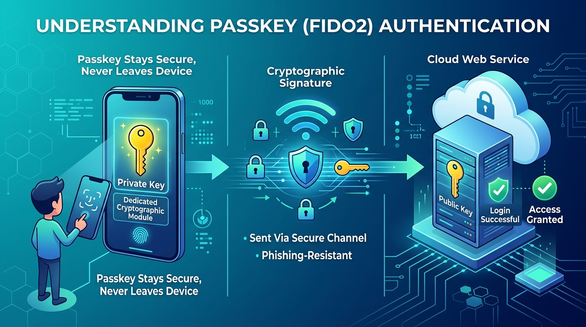
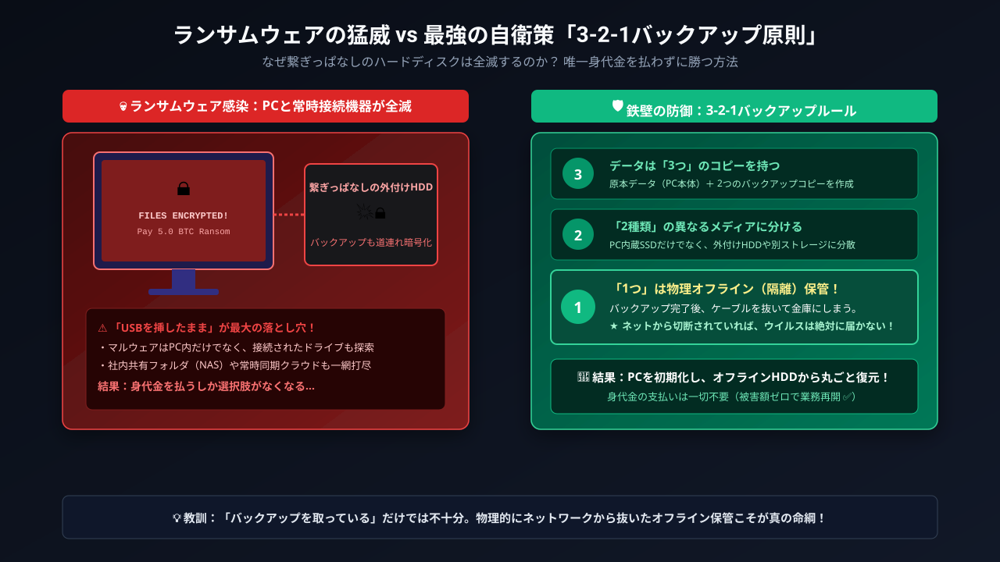
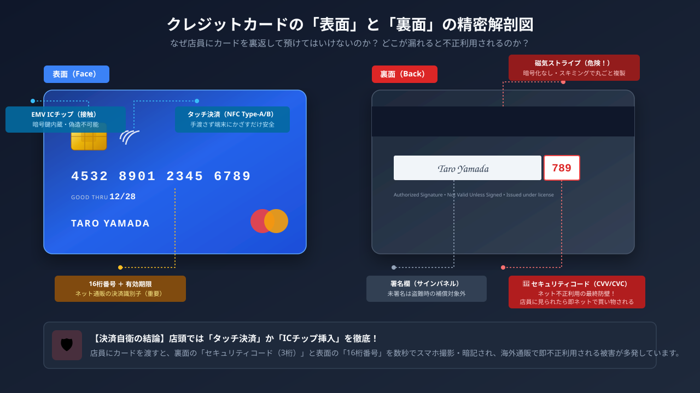
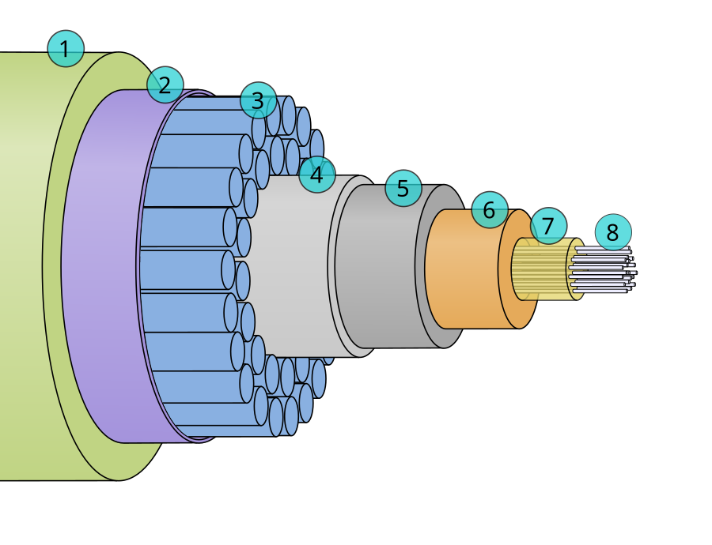
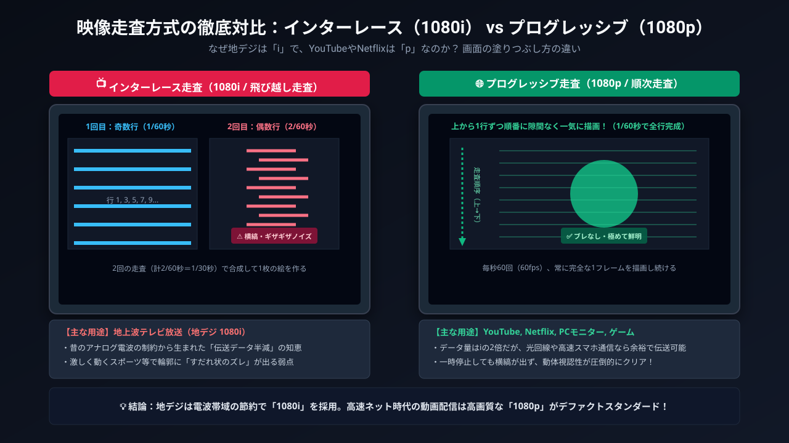
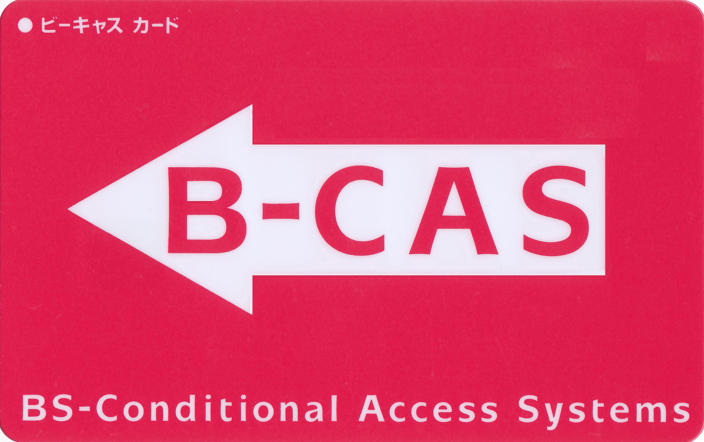

sequenceDiagram
autonumber
participant U as "ユーザー (山田さん)"
participant S as "認証サーバー (フロント)"
participant R as "成績管理DB (客室エリア)"
U->>S: ID/パスワード送信 (認証：チェックイン)
S-->>U: ログイン成功 (301号室カードキー発行)
U->>R: 成績閲覧リクエスト (ドアにかざす)
Note over R: 権限チェック<br/>(山田さんの部屋のみ解錠：認可)
R-->>U: 成績データを返却
現代デジタル社会の歩き方と裏側の仕組み
スマホ・通信・放送・決済・セキュリティ・暗号資産・SNS・クラウドの「なぜ？」を読み解くデジタル教養
デジタルリテラシー講義資料
講義の全体像
🗺️ 全体ロードマップ —— 全9回のテーマ一覧
🛡️ 身近な安全・経済・情報空間
- 第1回：認証と個人のセキュリティ
- パスワードの限界、2要素認証、生体認証、パスキー
- 第2回：情報セキュリティとサイバー脅威
- CIA原則、標的型攻撃、ランサムウェア、ゼロトラスト
- 第3回：キャッシュレス決済とデジタル身分証
- FeliCa、QRコード、Apple Pay、マイナンバーカード
- 第4回：暗号技術・Web3と次世代デジタル経済
- 暗号の革命、分散台帳、Web3・DeFi、CBDC
- 第5回：ソーシャルメディアと情報モラル
- 推薦アルゴリズム、フィルターバブル、ネット中傷と開示請求
🌐 インフラ・メディアと究極の基盤
- 第6回：クラウドと巨大プラットフォーム
- SaaS/PaaS/IaaS、Git/GitHub、メガクラウド、AI基盤
- 第7回：モバイルデバイスと通信ネットワーク
- スマホOS、3G停波と5G、MNO/MVNO・eSIM、Wi-Fi 7
- 第8回：テレビ放送と動画配信の未来
- 走査線・HDMI、地デジとCAS、TVer・コネクテッドTV
- 第9回：経済学とビジネスのための現代データベース入門
- 更新時アノマリー、REAモデリング、正規化、ACID特性、API・JSON、CAP定理
📋 全9回のシラバス一覧表
| 回 | 講義テーマ | 主な学習内容・キーワード |
|---|---|---|
| 第1回 | 認証と個人のセキュリティ | パスワードの脆弱性、MFA（TOTP/SMS）、生体認証、パスキー、ソーシャルログイン |
| 第2回 | 情報セキュリティとサイバー脅威 | CIA3原則、標的型攻撃、二重脅迫ランサムウェア、ゼロトラスト、EDR、偽Wi-Fi |
| 第3回 | キャッシュレス決済とデジタル身分証 | 非接触IC（FeliCa）、QRコードの原理、Apple Pay、リボ払い、マイナンバーカード |
| 第4回 | 暗号技術・Web3と次世代デジタル経済 | 暗号学の革命、分散台帳、PoS、Web3、DeFi、NFT、CBDC（デジタル円） |
| 第5回 | ソーシャルメディアと情報モラル | プラットフォーム経済、推薦アルゴリズム、フィルターバブル、発信者情報開示請求 |
| 第6回 | クラウドと巨大プラットフォーム | クラウド3層モデル、Git共同編集、3大メガクラウド、GPU AI基盤、データ主権 |
| 第7回 | モバイルデバイスと通信ネットワーク | iOS/Android思想、3G停波から5Gへ、格安SIMとeSIM、Wi-Fi規格と近距離防犯 |
| 第8回 | テレビ放送と動画配信の未来 | 画素と走査線、HDMI/HDCP、地上波/衛星放送、CASアクセス制御、TVerと配信の未来 |
| 第9回 | 経済学とビジネスのための現代データベース入門 | 更新時アノマリー、関係モデル、B+ツリー、REAモデリング、第1〜第3正規形、SQL、ACID特性、CAP定理、Google Spanner |
認証と個人のセキュリティ
本日の講義アジェンダ —— アカウントとスマホを守る
🗺️ 本日のアジェンダ（全4テーマ）
- パスワードはなぜ破られるのか？（脆弱な合言葉と最新の攻撃手法）
- 二重の鍵をかける —— 多要素認証と生体認証（OTP・生体情報の真実）
- パスワードが消える？ —— パスキーの登場（フィッシング完全防御の公開鍵暗号）
- ソーシャルログインの落とし穴（OAuthの仕組みと連鎖凍結リスク）
本日の到達目標
🎯 本日の講義で身につく力
- パスワード解読手口（ブルートフォース・スプレイ・漏洩リスト）と最新の防御策を説明できる
- 2要素認証（SMS/TOTP）と生体認証の仕組み・弱点・自衛策を実践できる
- パスキーが「なぜ偽サイトを100%無効化できるのか」を理解できる
- アプリ連携（ソーシャルログイン）時の権限リスクを適切に見直せる
1. パスワードはなぜ破られるのか？
考えてみたい問い
- なぜ「定期変更」は推奨されなくなった？
- 「パスワードを忘れた」を押した時、なぜ今のパスワードを教えてくれない？
- スマホの画面ロックを覗かれると何が起きる？
- 過去のパスワード漏洩を調べる方法はある？
カギを開ける人と部屋を使う人 —— 認証と認可
🔑 2つの言葉の違い
- 認証（あなた誰？）
- 本人確認。「私は山田太郎です」と証明する。
- 例：ID・パスワード入力、顔認証。
- 認可（何していい？）
- 権限の付与。「何ができるか」のルール。
- 例：山田さんは「自分の成績」は見られるが「他人の成績」は見られない。
【たとえ話】🏨 ホテルの宿泊でたとえると？
🏨 ホテルの宿泊でたとえると？
- 認証：フロントで身分証を見せて「予約した山田です」と名乗り、カードキーをもらうこと。
- 認可：そのカードキーで「301号室は開くが、隣の部屋や従業員室は開かない」という鍵の権限設定のこと！
【図解】認証と認可の連携シーケンス
「認証」と「認可」の違いと利用者の自衛策
- 認証（Authentication：お前は誰だ？）：
- ID・パスワードや生体認証で「本人確認」を行う手続き（例：ホテルのチェックイン）。
- 認可（Authorization：何をしてよいか？）：
- 本人に対して「特定の操作権限」を与える手続き（例：宿泊階の部屋を開ける鍵）。
📱 利用者の自衛ポイント
スマホアプリの連携時に「プロフィールの取得」だけでなく「勝手な投稿」「連絡先リストの全取得」など、過剰な権限（認可）を要求されていないか必ず確認しましょう。
攻撃者はどうやってパスワードを当てるか？
🔨 主な攻撃手法
- 総当たり（ブルートフォース）
- あらゆる文字列を片っ端から試す。
- 辞書攻撃
- 誕生日、人名、
passwordなどの頻出リストを優先照合。
- 誕生日、人名、
- リスト型攻撃（最凶の脅威）
- 他所で流出したID・パスワードを使い、Amazonやメルカリへ自動ログインを試行。
パスワード使い回しの危険性 —— 「すべての部屋を同じ合鍵にする」恐怖
パスワードの使い回しは、「自宅の玄関、実家、ロッカーの鍵をすべて同じ合鍵にして持ち歩く」のと同じです。
どこか1箇所の通販サイトから漏れた瞬間、すべての部屋が一斉に開けられます。
【図解】リスト型攻撃の拡散メカニズム
flowchart TD
A["中小ECサイト漏洩事故"] -->|ID/Pass流出| B[("ダークウェブ流通")]
B --> C["攻撃者の自動スクリプト"]
C -->|同じID/Passで試行| D["メルカリ"]
C -->|同じID/Passで試行| E["Amazon"]
C -->|同じID/Passで試行| F["Apple ID"]
D -->|ログイン成功| G["💥 不正購入・乗っ取り被害"]
style G fill:#ffcdd2,stroke:#d32f2f
最新の脅威：画面ロックPIN覗き見からの「全乗っ取り」
📱 カフェやバーで多発する手口
- 背後からスマホのロック解除PIN（4〜6桁）を盗み見る。
- スマホ本体をスリ盗る。
- ロック解除後、「設定」からApple ID等のパスワードを変更！
- 復旧キーを再生成し、被害者を自分のアカウントから永久に締め出す。
- 銀行アプリやApple Payから預金を全額引き出す。
【図解】PIN覗き見からの全口座乗っ取りフロー
flowchart TD
A["① カフェ等でPINコード覗き見"] --> B["② スマホ本体のスリ・盗難"]
B --> C["③ 画面ロック解除後に設定からPass変更"]
C --> D["④ 復旧キーを勝手に再作成<br/>(被害者をアカウントから永久追放)"]
D --> E["💥 銀行・Apple Payから預金全額送金被害"]
style A fill:#fff3e0,stroke:#f57c00
style E fill:#ffebee,stroke:#c62828,stroke-width:2px
【対策】iPhone「盗難デバイスの保護」設定
🛡️ 救世主機能の仕組みと今すぐできる設定手順
- 仕組み：自宅や職場以外の見知らぬ場所では、パスコードによる回避を禁止（Face ID / Touch IDが必須）。パスワードや復旧キー変更に1時間の遅延を強制。
- 盗まれた直後に犯人がパスワードを変更しようとしても、時間稼ぎの間に遠隔ロック（探す）が可能！
📱 今すぐできる設定手順
- iPhoneの「設定」を開く \(\to\) 「Face IDとパスコード」を選択
- 「盗難デバイスの保護」をオンにする
昔の常識 —— なぜ「定期変更」が危険になったのか？
❌ 昔の常識（今は非推奨）
- 「3ヶ月に1回、必ず変更する」
- 「記号を混ぜて8文字以上」
- 結果どうなったか？
Tokyo1!\(\to\)Tokyo2!の安易な連番化- 付箋メモをPCに貼る本末転倒
今の新常識 —— 「定期変更」は不要！長くして放置が正解
⭕ 今の新常識（米NIST / 総務省）
- 流出の兆候がない限り定期変更は不要
- 記号を無理に混ぜた短い文字より、無関係な単語を繋いだ「長いパスフレーズ」が安全！
- 例：
ringo-tabeta-densha-blue
解読時間比較：文字種より「長さ」が命
| 方式 | 例 | 推定解読時間（家庭用GPU） | 記憶しやすさ |
|---|---|---|---|
| 短い複雑（8文字） | p@$W0rd |
数秒〜数分 | 覚えにくい |
| 英数混在（10文字） | aB3dE5gH7j |
数時間〜数日 | 覚えにくい |
| 長いパスフレーズ（20文字以上） | neko-ga-kousaten-wo-watatta |
数億年以上 | 覚えやすい |
💡 パスフレーズの作り方
「自分が情景を思い浮かべられるフレーズ」にするのがコツです。
例：densha-de-banana-wo-tabeta-77（電車でバナナを食べた）
サーバーはあなたのパスワードを知らない？ —— 「ハッシュ化」の魔法
❓ 管理者は私のパスワードを見られる？
- 「Twitterや大学のシステム管理者は、裏で私のパスワードを覗き見できるの？」
- 答え：まともなWebサービスなら絶対に見られません！
- サーバーは入力された生のパスワード（平文）を即座に破棄。
- 復元不可能な一方向暗号文字列（ハッシュ値）に不可逆変換してデータベースに保存しています。
【たとえ話】🥩 「ひき肉（ミンチ）」でたとえると？
🥩 ひき肉から元の牛には戻せない！
ハッシュ化の仕組み： 牛肉をミンチ機にかけると「ひき肉」になる（一方向の不可逆計算）。
復元は絶対に不可能： どんな天才科学者でも、ひき肉から元の牛の姿を復元することは不可能です！
どうやってログイン確認するのか？： ログイン時、入力された文字をその場でミンチ機にかけ、保存されている「ひき肉」と形が完全に一致するかだけを照合しています。
「パスワードをお知らせします」メールが届いたら即逃げろ！
🚨 危険なWebサイトの見分け方
- パスワードを忘れた時：
- ⭕ 安全なサイト：「再設定用のURLを送ります（元のパスワードは誰も知らないため教えられない）」
- ❌ 極めて危険なサイト：「あなたのパスワードは
abc1234です」とメール本文に書いて送ってくる！
パスワードを生データのまま保存しているサイトは、ハッキングされた瞬間に全利用者のパスワードがそのまま流出します。
もしそんなサイトがあれば、二度と使わず、同じパスワードを他で使っていたら即座に変更してください！
【Google / X】「パスワードを忘れた方」を押したとき何が起きている？
🔒 なぜ「今のパスワード」を教えてくれないのか？
- Google、Yahoo!、X（Twitter）などのサポートに「パスワードを教えて！」と問い合わせても、社長やエンジニアですら絶対に教えてくれません。
- 前のスライドで学んだ通り、パスワードは不可逆な「ひき肉（ハッシュ値）」になっているため、世界中の誰も元の文字列を知らないからです！
- そのため、現代のWebサービスは「古いパスワードを思い出す」のではなく、「新しいパスワードで上書きする」というアプローチを取ります。
なぜ他人に乗っ取られない？ —— 「使い捨て暗号トークン」の秘密
⏱️ メールで届く長いリンクの正体
メールで送られてくるURL：
https://service.com/reset?token=a8f9b2c3d4e5...末尾のランダムな英数字が「使い捨て暗号トークン（合鍵）」。
強力な3大防衛ルール：
- 超高難度のランダム生成：暗号学的に安全な乱数で、第三者が推測・総当たりするのは不可能。
- 短い有効期限（TTL）：発行から「30分」や「1時間」で自動消滅（期限切れ）。
- 1回限りの使い捨て（自己破壊）：一度新しいパスワードを登録した瞬間に、DB内のトークンは即座に無効化！
【図解】パスワード再設定（リセットトークン）の安全シーケンス
sequenceDiagram
autonumber
participant U as "ユーザー (ブラウザ)"
participant S as "Webサーバー"
participant M as "メールサーバー"
participant D as "データベース"
U->>S: 「パスワードを忘れた」と申請 (メアド送信)
Note over S: ランダムな使い捨てトークン生成<br/>(有効期限: 30分)
S->>D: トークンと有効期限を一時保存
S->>M: 再設定リンク付きメールを送信
M->>U: メール受信 (リンクをクリック)
U->>S: 新しいパスワードを入力して送信
Note over S: トークンの有効性と期限を検証
S->>D: 新パスワードをハッシュ化して上書き<br/>＆トークンを即時破棄！
S-->>U: パスワード再設定完了！ ✅
ブラウザの自動入力の落とし穴
⚠️ 自動保存の利便性とリスク
- ChromeやSafariがパスワードやクレジットカード番号を自動記憶・補完してくれる便利な機能。
- 潜む落とし穴：
- 友人に「ちょっと貸して」とPCやスマホを渡した際、設定画面や入力欄から平文で覗き見されるリスク。
- マルウェア（インフォスティーラー）に感染すると、ブラウザ内の保存データが一網打尽に盗まれる！
- 必須の対策：PC・スマホ起動時の画面ロック設定を徹底する。
自分のメアドが流出していないか調べる「Have I Been Pwned」
🔍 世界標準の漏洩チェッカー：HIBP
- サイト：
haveibeenpwned.com（無料・世界標準） - 世界中で発生した過去の大規模情報漏洩データベースと照合し、自分のメールアドレスやパスワードが漏洩リストに含まれていないか確認できる。
- 流出が見つかった場合の対処：
- 直ちにそのメールアドレスで登録している主要サービス、特に同じパスワードを使い回しているすべてのアカウントでパスワードを変更する！
人間には無理！パスワード管理ツールの導入
🧠 脳の限界を素直に認め、マネージャーに任せる
- 平均100個以上のアカウントで、別々の長いパスワードを記憶するのは人間の脳には不可能。
- パスワードマネージャーの仕組み
- 20文字以上のランダム文字列を自動生成・暗号化保存し、生体認証（顔・指紋）で自動入力。
- スマホの画面ロックさえ守れば、全てのパスワードを覚える必要がゼロに！
📱 代表的なおすすめツール
- Apple：iCloudキーチェーン（OS標準）
- Google：Googleパスワードマネージャー（Chrome/Android標準）
- サードパーティ：Bitwarden（オープンソースで高評価）/ 1Password
📱 実践チェック
📱 1分でできるスマホ診断
- iPhone：「設定」\(\to\)「パスワード」\(\to\)「セキュリティに関する勧告」を開く。
- Android：「設定」\(\to\)「Google」\(\to\)「パスワードマネージャー」\(\to\)「診断」を開く。
- 漏洩や使い回しの警告は何件ありましたか？
🤔 考えてみよう（振り返り）
🤔 考えてみよう
- 家族や友人に「パスワード教えて」と言われたらどう断る？
- 「紙の手帳にパスワードを書いて家に置く」のはアリかナシか？
2. 二重の鍵をかける —— 多要素認証と怪しい通知
考えてみたい問い
- 「2要素認証」って何？なぜ2回もやるの？
- SMSで届く確認コードは本当に安全？
- スマホを水没・紛失した時にアカウントから締め出されない方法は？
2要素認証って何？ —— 「銀行のATM」と同じ仕組み！
❌ パスワードだけ（1要素） vs ⭕ 2要素認証（MFA）
❌ パスワードだけ（1要素）
- 「秘密の合言葉」だけで入れる部屋
- 合言葉を盗み聞きされたり偽サイトに入力したら誰でも侵入可能。
⭕ 2要素認証（MFA）
- 「銀行のATM」と全く同じ！
- 💳 持っている物：キャッシュカード（所持）
- 🔢 知っている合言葉：4桁の暗証番号（知識）
- どちらか片方を盗まれても不正利用を防げる！
認証の3大要素（知識・所持・生体）
🧩 異なる「2種類」を組み合わせることが必須
- 🧠 知識情報：パスワード、暗証番号、秘密の質問
- 📱 所持情報：スマホ（SMS・通知）、認証アプリ（TOTP）、ICカード、物理キー
- 👤 生体情報：指紋、顔、虹彩
⚠️ 注意：よくある間違い
「パスワード」＋「秘密の合言葉」は両方とも「知識情報」なので、2つ設定しても2段階認証であって2要素認証ではありません。
【図解】2要素認証（MFA）の組み合わせ構造
flowchart TD
subgraph MFA ["2要素認証（MFA）：異なる2種類の要素が必須！"]
A["① 知識情報<br/>（パスワード / 暗証番号）"]
B["② 所持情報<br/>（スマホ / 認証アプリ / ICカード）"]
C["③ 生体情報<br/>（指紋認証 / 顔認証）"]
end
A -->|"知識 ＋ 所持"| D{"強固な認証成功 ✅"}
B -->|"知識 ＋ 所持"| D
C -->|"生体を所持と併用"| D
style MFA fill:#f1f8e9,stroke:#558b2f,stroke-width:2px
style D fill:#e8f5e9,stroke:#2e7d32,stroke-width:2px
生体認証のウソとホント —— 指紋データは流出する？
❌ よくある誤解 vs ⭕ 技術的真実：ローカル照合
- 誤解：「AppleやGoogleに自分の顔写真や指紋データが送信されていて、サーバーがハッキングされたら流出するのでは？」
- 真実：生体データは、スマホ内部の隔離金庫チップ（Secure Enclave / Titan M）から1ミリも外に出ない。
- 外部サーバーに送られるのは「手元での指紋照合が成功した」という暗号署名（合否結果）のみ！
【図解】Secure Enclave内のローカル照合
flowchart TD
subgraph Smartphone["スマートフォン内部"]
A["カメラ / 指紋センサー"] --> B["Secure Enclave<br/>(隔離された金庫チップ)"]
B -->|内部一致判定| C["秘密鍵で電子署名作成"]
end
C -->|暗号署名のみ送信| D["Webサービスサーバー"]
style B fill:#fff3e0,stroke:#f57c00
Note
万が一Webサービス側のサーバーがハッキングされても、サーバーには「公開鍵」しか置いていないため、パスキーでは何も悪用できません。
写真や寝顔で破られない？ —— 「生体検知」の進化
🎭 3D赤外線測定と「生きている人間」の判定（生体検知）
- 3D赤外線測定：平面の写真や画面越し動画を欺くため、数万点の赤外線ドットで顔の立体的な凹凸や奥行きを精密測定。
- 生体検知（Liveness Detection）：まばたきや瞳孔の動き、微細な血流変化を検知し、シリコン指紋やディープフェイクを防ぐ。
💡 認証の黄金ルール
生体認証は「日常の便利さのためのカギ」。最も強固なマスターキーは依然として「長くて複雑な画面ロックパスコード」です！
生体認証は最強か？ —— 3大弱点と法的リスク
⚠️ 生体認証が抱える原理的な弱点
- 一生リセット（変更）できない：パスワードは漏れたら変更できるが、指や顔は一生交換できない。
- 環境や体調で使えなくなる：乾燥・怪我・手荒れで指紋が通らない、マスクや濃いメイクで顔認証が拒否される。
- 寝ている間や物理的強制のリスク：頭の中の合言葉と違い、「寝ている間に指を当てられる」「脅されて顔を向けられる」危険性。
⚖️ 法的リスク
海外では、パスコード開示は黙秘権で拒否できても、指紋や顔の照合は令状で強制執行できる場合があります。
生体認証の安全設定 —— 「注視機能」と「緊急ロック」
🛡️ 今すぐ確認すべき自衛設定
- 👁️ 注視機能（目を開けていないとNG）：スマホを見つめているか確認する設定を必ずONにし、寝顔での勝手な解除を防止。
- 📷 写真のピースサイン：至近距離の高画質自撮り写真から指紋紋様が復元されるリスクがあるため要注意。
- 🚨 危険を感じた時の「緊急ロック」：
- iPhone: サイドボタン＋音量ボタン長押し（電源OFF画面を出す）
- Android: 電源メニューから「ロックダウン」を選択
- 一瞬で生体認証が無効化され、パスコードを知らない人は解除不能に！
SMS認証に潜むワナ —— SIMスワップ詐欺
📱 手軽だが危険なSMSコード
- 電話番号宛てに届く6桁コードは広く普及しているが、安全レベルは低め。
- SIMスワップの手口
- 犯人が偽造身分証で携帯ショップに行き、あなたの番号のSIMを勝手に再発行。
- あなたのスマホが「圏外」になり、犯人に認証コードが届く！
【図解】SIMスワップ詐欺の手口フロー
sequenceDiagram
autonumber
participant A as 😈 犯人
participant S as 🏢 携帯ショップ
participant V as 👤 被害者
participant B as 🏦 ネット銀行
A->>S: 偽造身分証でSIM再発行を申請
S->>A: 犯人に新しいSIMカードを交付
S--x V: 被害者の旧SIMが強制無効化（突然の圏外）
Note over V: 通話・ネットが完全不通に！😱
A->>B: 被害者のIDで銀行ログイン試行
B->>A: 犯人のスマホにSMS認証コードが着信！
A->>B: 認証コードを入力して認証突破
Note over A, B: 💥 預金全額を別口座へ不正送金（被害完了）
SMS認証の弱点と「認証アプリ（TOTP）」への移行
🛡️ 認証アプリ（TOTP）への移行
「Google Authenticator」などの認証アプリは、端末内で30秒ごとに使い捨てコードを作るため、SIMを乗っ取られても安全です。
そもそも「ワンタイムパスワード（OTP）」って何？
🎫 30秒〜数分で消滅する「使い捨ての合鍵」
- 通常のパスワードと異なり、「1回使うか制限時間を過ぎると無効になる使い捨てコード」。通信を覗き見されても再利用できない。
📱 SMS / メール通知型
- サーバーから都度届く使い捨てコード。
- 利点：アプリ導入不要で手軽。
- 注意：SIMスワップ詐欺やフィッシングに弱い。
🔑 認証アプリ型（TOTP）
- Google Authenticator等、端末内で30秒ごとに自動生成。
- 利点：電波不要（機内モード可）、SIM乗っ取りにも安全！
不思議！機内モード（電波ゼロ）でもなぜ認証コードが一致するのか？
⏰ 秘密は「スマホの正確な時計（TOTP）」
- 認証アプリ（Google Authenticator等）は、機内モードや圏外・地下でも正確に30秒ごとに新しい数字を表示できる。
- 素朴な疑問：
「サーバーと電波で通信していないのに、なぜサーバー側と手元のスマホで全く同じ6桁の数字になるの？」
通信不要で一致する数学のカラクリ（Time-based OTP）
🧮 共通の秘密鍵 ＋ 正確な時刻
登録時（QRコード読み取り）：
スマホとサーバーの間だけで、「共通の秘密鍵（計算のタネ）」を最初に1回だけ安全に共有する。コード生成の瞬間：
共通の秘密鍵 ＋ 現在の正確な時刻（30秒刻み）をハッシュ関数に投入！結果：
通信しなくても、「同じタネ」と「同じ時刻」から数学的に全く同じ6桁の数字が導き出される仕組み！
夜中に届く「ログイン承認しますか？」の恐怖 —— MFA疲労攻撃
🥱 MFA疲労攻撃（MFA Fatigue）の手口
- 攻撃者がパスワードを入手後、深夜の就寝時などを狙って「ログイン承認しますか？」のPush通知を数十回連続で送りつける。
- 鳴り止まない通知への苛立ち、眠気、通知を消したい一心で、誤って［承認］を押した瞬間にアカウント侵入が完了する！
🚨 鉄則
自分でログイン操作をしていない時に届いた承認通知は、絶対に［拒否］を押し、直ちにパスワードを変更してください！
【図解】MFA疲労攻撃の心理トラップ
flowchart TD
A["😈 攻撃者が深夜にログイン試行連打"] --> B["📱 被害者のスマホにPush通知が鳴り止まない！"]
B --> C{"ユーザーの心理的反応"}
C -->|冷静に「拒否」を押す| D["🛡️ 防衛成功 ✅<br/>直ちにパスワード変更！"]
C -->|眠気・苛立ちで「承認」を押してしまう| E["💥 アカウント乗っ取り完了！"]
style D fill:#e8f5e9,stroke:#2e7d32,stroke-width:2px
style E fill:#ffebee,stroke:#c62828,stroke-width:2px
ネットバンキング不正送金と「利用者の重大な過失」ルール
⚖️ 「銀行が全額返金してくれる」は本当か？
- 全銀協（全国銀行協会）の補償ルール：
- 原則：個人の不正送金被害は銀行が補償する。
- 例外：利用者に「重大な過失」があると判断された場合、補償はゼロ（全額自己責任）になる！
- 「重大な過失」と見なされる典型例：
- 他人に暗証番号やワンタイムパスワードを自ら教えた（警察や銀行員を騙る偽電話に伝えてしまった場合も含む）。
- 暗証番号をキャッシュカードやPCの付箋にメモして放置していた。
- 生年月日や電話番号など、容易に推測できる番号を設定していた。
- 教訓：2要素認証やOTPは、「自分でルールを守るからこそ、法的に守られる」という自己防衛の境界線です。
スマホ紛失で詰むのを防ぐ「バックアップコード」
💥 MFA最大の悲劇と、命綱となるバックアップコード
- 最大の悲劇：「スマホを海に落とした・故障した・盗まれた」。新しいPCからログインしようとしても、スマホに届く認証コードが受け取れず永久に締め出される！
- 命綱：バックアップコード：2段階認証設定時に発行される使い捨てコード（8〜10桁×10個）。
- 紙に印刷するか手帳に手書きし、自宅の金庫やパスポートと一緒に大切に保管するのが鉄則！
物理キー（YubiKeyなど）という究極の盾
🔑 USBに挿して指で触れる物理鍵
- なぜ100%防げるのか？：認証時に「人間が金属部に指で触れる」必要がある。どんな凄腕ハッカーでも、「目の前で人間が指で触れる」物理現象をネット越しに偽造することは絶対に不可能！
| 認証方式 | 利便性 | 安全性 | フィッシング耐性 |
|---|---|---|---|
| パスワードのみ | △ | ✕ | ✕（騙される） |
| SMSコード | ◯ | △ | △（横取り可） |
| 認証アプリ (TOTP) | ◯ | ◯ | △（偽画面で流出） |
| パスキー / 物理キー | ◎ | ◎ | ◎（100%遮断） |
📱 実践チェック
📱 チェックワーク
- Googleや大学アカウントの「2段階認証」設定を開く。
- 認証方法として何が登録されているか？
- 「バックアップコード」をメモ・印刷してあるか確認。
🤔 考えてみよう（振り返り）
🤔 ケーススタディ
- 「友達からLINEで『投票してほしいから、今そっちに届いた4桁の番号を教えて！』と言われた。」
教えると何が起きる？なぜ危険？
3. パスワードが消える？ —— パスキーの登場
考えてみたい問い
- 指紋や顔を向けるだけでログインできる「パスキー」とは？
- なぜ偽サイト（フィッシング）に100%引っかからないのか？
- 生体データはネットやクラウドに流出しないの？
画面に顔を向けるだけでログインできる魔法
✨ パスキー（Passkey）とは
- Google、Apple、任天堂、メルカリ、Amazonで導入急加速。
- パスワード入力自体が存在しない。
- スマホの生体認証（Face ID / 指紋）を通すだけで1秒でログイン完了！
【たとえ話】🏢 マンションのオートロックでたとえると？
🏢 マンションのオートロックでたとえると？
- パスワード：「暗証番号式のオートロック」。住人全員が番号を知っており、誰かが漏らしたら終わり。
- パスキー：「顔認証オートロック」。暗証番号自体が存在しない。顔や指紋だけで開き、番号盗難の心配がゼロ！
【図解】パスキーのログインフロー
flowchart LR
A[ユーザー] -->|Face ID / 指紋| B[手元のスマホ]
B -->|暗号署名| C[Webサービス]
C -->|認証成功| D[ログイン完了 ✅]
style B fill:#e1f5fe,stroke:#0288d1
💡 パスワードとの決定的な違い
- パスワード：「合言葉をサーバーに送って照合する」方式（盗まれるリスク大）。
- パスキー：「合言葉をサーバーに一切送らない」方式（秘密鍵は手元のスマホから出ない）。
【イラスト】パスキー（生体認証×公開鍵暗号）の仕組み

安全性の根拠：秘密鍵は端末の外に絶対出ない
生体認証（顔・指紋）で端末内の「秘密鍵」の封印を解き、暗号署名だけをサーバーへ送るため、通信経路の盗聴やパスワード漏洩が原理的に発生しません。
なぜフィッシング詐欺に100%引っかからないのか？
🤖 スマホによる機械的ドメイン照合（オリジンバインド）
- 公開鍵暗号のペア
- スマホ内に「秘密鍵（門外不出）」、本物のサーバーに「公開鍵」を保管。
- オリジンバインド（URL厳密照合）
- ブラウザがアクセス先WebサイトのドメインURLを機械的・厳密に検証。
- たとえ人間が見分けられない超精巧な偽サイト（
amaz0n.co.jp等）であっても、スマホ側が「契約相手ではない偽物」と瞬時に判定し、秘密鍵による署名処理を完全拒否する！
【図解】本物のサイト vs 精巧な偽フィッシングサイト

人間には見分けがつかないURLの罠
画面のデザインは100%同じに偽装できます。異なるのは「URL（ドメイン名）」だけ。パスキーなら、人間が騙されても端末が機械的に偽ドメインを遮断します。
【図解】パスキーが偽サイトを完全無効化する仕組み
sequenceDiagram
autonumber
participant U as "ユーザー"
participant B as "スマホ端末 (ブラウザ)"
participant F as "偽フィッシングサイト"
U->>F: 巧妙な偽サイトにアクセス
F->>B: ログイン要求（認証チャレンジ）
Note over B: ドメイン厳密照合！<br/>「正規の登録URLと不一致」
B-->>F: エラー（秘密鍵の署名を完全拒否！）
Note over F: パスワードが存在しないため<br/>何も盗めない！
スマホを壊したり紛失したらどうなる？
☁️ 同期型パスキーのバックアップ
- パスキーの鍵は、iCloudキーチェーンやGoogleアカウントを通じてエンドツーエンド暗号化（E2EE）で同期される。
- 新しいスマホに買い替えても、同じアカウントでサインインすれば自動復元！
📱 パスキーの始め方
📱 パスキーの始め方
- Google、Amazon、メルカリの設定を開く
- 「セキュリティ」\(\to\)「パスキーの作成」を選択
- スマホのFace ID / 指紋をかざすだけで完了！
📱 実践チェック
🛠️ 実践ワーク
- 自分のGoogleアカウントやAmazonでパスキーを作成してみよう。
- 次回以降、パスワードを打たずにログインできる快適さを体験してみる。
🤔 考えてみよう（振り返り）
🤔 考えてみよう
- 「パスワードが不要になる社会」で、高齢者やITが苦手な人が直面しそうな課題は何だろう？
4. ソーシャルログインの落とし穴
考えてみたい問い
- 「Googleでログイン」を押すと、相手にパスワードが知られる？
- 大元のGoogleアカウントがBANされたら何が起きる？
- もし自分が事故で倒れたら、自分のアカウントはどうなる？
そもそも「ソーシャルログイン」って何？
📱 あのボタンの正体と最大の疑問：「Googleのパスワードは相手にバレる？」
- 仕組み：画面にある「Googleでサインイン」「LINEでログイン」等を押すだけで、一瞬で安全に会員登録・ログインできる仕組み。
- 結論：相手にあなたのパスワードは1文字も渡っていません！
- 相手アプリが見ているのは、Googleから発行された「認証済みの安全な暗号化記号（トークン）」のみです。
パスワードを渡さずにログインできるカラクリ（OAuth / OIDC）
🤝 「身元保証人」になってもらう仕組み
- 身元保証の構造：初めて行くお店（外部アプリ）に自宅の合鍵（パスワード）を渡す代わりに、誰もが知る有名人（GoogleやApple）が「この人は間違いなく本人です」と太鼓判を押してくれる仕組み（OAuth / OpenID Connect）。
- 利用者側の安心：パスワードを覚える必要がなく、外部サイトが情報漏洩してもパスワード被害がゼロ。
- サービス側の安心：パスワードを預かる巨大な漏洩リスクを抱えずに済む。
【図解】OpenID Connectの身元保証フロー
🤝 共通の知人でたとえると？
初めて行くバーに入るため「自宅の合鍵を店長に預ける」のではなく、「有名人の友人（Googleさん）に来てもらい『この人は田中で間違いありません』と保証してもらう」こと！
sequenceDiagram
autonumber
participant U as "ユーザー (田中さん)"
participant S as "外部サイト (会員制バー)"
participant G as "Google (身元保証人)"
U->>S: 「Googleでログイン」をクリック
S->>G: 認証リクエスト転送 (「田中さんって本物？」)
U->>G: Googleでログイン承認 (「うん、私だよ」)
G-->>S: 暗号化されたIDトークン発行 (「身元保証します」)
Note over S: トークンを検証し<br/>ログイン許可 ✅
S-->>U: ログイン完了！
アプリ連携の許可画面、ちゃんと読んでる？
⚠️ 要求される権限（スコープ）の確認
- 連携時に表示される確認画面。「許可」を押すと、その操作権限をアプリに与えることになる。
- 危険なスコープの例
- 「あなたに代わって投稿する」
- 「友達リスト・連絡先を読み取る」
- 「クラウドの全ファイルを閲覧・削除する」
SNS連携「相性診断・占いアプリ」に潜む個人情報搾取の罠
⚠️ 診断アプリの罠
「あなたを動物に例えると？」のような一見無害なSNS診断アプリが、裏で「友達リストの取得」や「スパム自動投稿」の権限を要求し、アカウントを乗っ取る手口が多発しています。
1つのアカウントが消えると全てが消える（連鎖凍結）
💥 単一障害点（SPOF: Single Point of Failure）の恐怖
- 全てを「Googleでログイン」や「Appleでサインイン」にまとめていた場合、大元の親アカウントが規約違反や乗っ取り、AI誤判定で停止（BAN）されるとどうなるか？
- ドミノ倒しの連鎖被害
- 紐づいていたゲーム、通販、フリマ、サブスクから一斉に永久締め出し！
- 大元のアカウントが死んでいるため、パスワードの再発行・復旧すら不可能。
【図解】ソーシャルログインのドミノ倒し（単一障害点）
flowchart TD
A["大元 Google / Apple ID"] -->|BAN・凍結・乗っ取り| B["💥 全連携サービスから一斉遮断！"]
B --> C["🎮 ゲームの課金データ・セーブデータ消失"]
B --> D["🛍️ メルカリ・通販サイトが利用不能"]
B --> E["💳 サブスクの解約手続きすらできない"]
style A fill:#fff3e0,stroke:#f57c00
style B fill:#ffebee,stroke:#c62828,stroke-width:2px
もし自分が死んだら・倒れたら？ —— デジタル遺産
🪦 現代の終活トラブルと公式の継承機能
- 現代のトラブル：契約者が急逝した際、スマホのロックが解けず銀行口座や写真にアクセスできない、サブスク課金が引き落とされ続ける。
- Apple「故人アカウント管理連絡先」：事前に指定した家族（最大5名）がアクセスキーと死亡証明書でデータ取得可能。
- Google「アカウント無効化管理ツール」：一定期間ログインがない場合、信頼する家族にデータDLリンクを送付。
📱 実践チェック
📱 連携アプリの棚卸しワーク
- LINE：「設定」\(\to\)「アカウント」\(\to\)「連動アプリ」を開く。
- Google：「アカウント管理」\(\to\)「データとプライバシー」\(\to\)「サードパーティアプリ」を開く。
- 何年も使っていない怪しいアプリを連携解除しよう！
🤔 考えてみよう（振り返り）
🤔 考えてみよう
- 銀行や証券口座は、ソーシャルログインを使うべきか、独立した固有ID/パスワードにすべきか？その理由は？
情報セキュリティとサイバー脅威
本日の講義アジェンダ —— ネット社会の罠とデジタル倫理
🗺️ 本日のアジェンダ（全5テーマ）
- Webサイトの見た目に騙されるな —— 画面の裏の罠（クリックジャッキング・偽Wi-Fi）
- あなたを狙う詐欺の心理学 —— 標的型攻撃とマルウェア（ランサムウェア・感情トリガー）
- 会社や大学のPCを守る新しい考え方 —— ゼロトラスト（境界防御の崩壊・EDR）
- あなたの行動は筒抜け？ —— スマホとCookieの追跡（サードパーティCookie・Exif）
- 身近なサイバー犯罪と法律（不正アクセス禁止法の3大処罰・悪ふざけの代償）
本日の到達目標
🎯 本日の講義で身につく力
- サポート詐欺・偽Wi-Fi・悪質プロファイルの罠を見抜き、適切に対処できる
- 巧妙化するSNS乗っ取り・フィッシング・闇バイトの罠を確実に回避できる
- 巨大組織を揺るがすランサムウェアの手口と「踏み台」の恐怖を理解する
- ゼロトラストとEDRの基本思想、3-2-1バックアップを実践できる
- 写真の位置情報（Exif）やCookie追跡の仕組みを知り、プライバシーを守れる
- 不正アクセス禁止法が禁じる行為を正しく把握し、犯罪被害・加害を予防できる
そもそも情報セキュリティとは何か？ —— 「3大要素（CIA）」
🏛️ 世界標準の安全基準：CIAトライアングル
- 単に「パスワードをかけて隠す」ことだけがセキュリティではありません。
- 国際規格（ISO）で定められた情報セキュリティの3大原則（CIA）：
- 機密性（Confidentiality）：
- 許可された人だけが情報にアクセスできる（盗聴・覗き見の防止）。
- 完全性（Integrity）：
- 情報が改ざんされたり破壊されず、正確である（Web改ざん・データ偽造の防止）。
- 可用性（Availability）：
- 利用者が必要なときにいつでも安全にアクセスできる（サーバーダウン・DDoS停止の防止）。
- 機密性（Confidentiality）：
⚖️ 利便性とセキュリティのバランス
ガチガチに厳しくしすぎると日常業務が使いにくくなり、緩めすぎると情報が漏洩します。この3要素と使いやすさのバランスをとることがセキュリティの本質です。
1. Webサイトの見た目に騙されるな —— 画面の裏の罠
考えてみたい問い
- 大音量で「ウイルス感染！今すぐ電話を！」と叫ぶ画面の正体は？
- 「非公式MODアプリ」「プロファイル追加」の罠とは？
- カレンダーに勝手に「ウイルス検出！」が入る原因は？
大音量で叫ぶ！「サポート詐欺」のカラクリ
📢 突然鳴り響く大音量アラーム
- 「ピーピー！あなたのPCはウイルスに感染しました。050-XXXXに今すぐ電話を！」
- 全画面表示になって閉じられないように見せかける。
- 技術的なタネ明かし
- ウイルス感染など1ミリもしていません。
- 単にWebブラウザの「全画面表示（F11）」と「音のループ再生」を実行しているだけ！
【実践・対策】🛡️ 1秒で解決する対処法
🛡️ 1秒で解決する対処法
電話をかけてはいけません！
- Windows：
Ctrl + W（タブを閉じる）またはAlt + F4 - Mac：
command + W（タブを閉じる） - スマホ：ブラウザのタブをゴミ箱へ捨てるだけ！
ボタンを押したつもりが別のアクション？（クリックジャッキング）
🪟 透明な罠（Clickjacking）
- 攻撃者は「動画を再生する［PLAY ▶️］」ダミー画面を用意。
- そのすぐ上に、透明度100%にした「退会ボタン」や「送金ボタン」を重ねて配置。
- ユーザーは動画を見ようと押した瞬間、背後の重要操作を実行させられる！
【たとえ話】📑 契約書の罠でたとえると？
📑 契約書の罠でたとえると？
「高額ローンの契約書」の上に、透明なフィルムを貼った「可愛い子猫の写真」を重ねて、「子猫の鼻をタップしてね！」と言ってサインさせる詐欺手口です！
【構造】クリックジャッキングのレイヤー重なり
flowchart TD
subgraph Layer2 ["表面レイヤー：見えている画面"]
A["可愛い子猫の写真（動画再生ボタン ▶️）"]
end
subgraph Layer1 ["透明レイヤー：透明度100%で重ねられた標的画面"]
B["送金を実行する / アカウント退会ボタン"]
end
A -->|"ユーザーが見かけのボタンをタップ"| B
style B stroke-dasharray: 5 5,fill:#ffebee
- サーバー側の防御技術：正規のWebサイトは
X-Frame-Options: DENY（またはCSPのframe-ancestors）を設定し、他サイトによる自画面の透明埋め込みを遮断しています。
「非公式MODアプリ」と「構成プロファイル」の罠
⚠️ 甘い誘いとiPhone最凶の罠
- 非公式MODアプリの危険：
- 「広告全消しアプリ」「ゲームの石が無限になるMOD」など、公式ストアを通さない野良アプリは情報窃盗マルウェアの温床。
- 構成プロファイルの悪用（iPhone最大の危機）：
- 「プロファイルをインストール」を許可すると、全通信が犯人のサーバーへ中継され、暗号化通信すら解読されて認証情報が丸ごと盗まれます！
カレンダー乗っ取りの手口と消し方
📅 朝から晩まで「ウイルス検出！」の通知
- 仕組み：怪しいサイトで「カレンダーを照会しますか？」に誤って［OK］を押したのが原因。共有・購読機能を悪用されただけで、スマホ本体は侵入されていません。
🛡️ 簡単な消し方
iPhone：「設定」→「カレンダー」→「アカウント」→「照会カレンダー」から、不審なカレンダーを選んで［アカウントを削除］を押すだけで即座に全消去できます！
URLの見方を身につける（ドメインの解剖学）
🔍 URLの解剖図
https:// login.smbc-card.com .fake-phish.jp /app/index.html
- プロトコル：
https:// - サブドメイン：
login.smbc-card.com（攻撃者が本物っぽく名付けただけの文字列！） - 真のドメイン（FQDN）：
.fake-phish.jp（スラッシュ/の直前にある部分が本当の所有者！） - パス：
/app/index.html
詐欺URLの見極めルールと具体例
❌ 詐欺URLの典型例
https://apple.com.secure-auth.net/https://www-amazon-co-jp.xyz/
🛡️ 見極めのルール
- 「最初の
/の直前」にあるドメイン名に注目する。 - 不安ならリンクを踏まず公式アプリから開く。
無料Wi-Fiの罠① —— 店舗や空港の「なりすまし（Evil Twin）」
👿 「悪魔の双子（Evil Twin）」とは？
- カフェや空港で、本物のWi-Fi名（SSID）にそっくり、または同名の偽ルーターを犯人が設置する手口。
- 例：本物
Starbucks_WiFiに対し、偽物Starbucks_Free_WiFi - スマホの「自動接続」の盲点：過去に繋いだSSIDと同じ名前があると、端末が勝手に吸い寄せられて接続してしまう！
無料Wi-Fiの罠① —— 店舗や空港の「なりすまし（Evil Twin）」（ポイント）
🎣 繋ぐとどうなる？（偽ログイン画面）
- 接続した途端に偽のログイン画面（Captive Portal）が表示。
- 「規約同意のためGoogleやLINEでログイン」「セキュリティ向上のためクレカ入力」と騙し、認証情報を丸ごと盗み取る！
【図解】なりすましWi-Fiによる中間者攻撃（MitM）
sequenceDiagram
autonumber
participant U as "被害者のスマホ"
participant F as "偽Wi-Fi (犯人のルーター)"
participant S as "正規サービス"
Note over U, F: そっくりなSSIDに自動接続！
F->>U: 偽のログイン画面を表示 (ID/PASS要求)
U->>F: 信用してパスワードを入力・送信
Note over F: 認証情報をまるごと窃取！😈
F->>S: 盗んだ情報で正規サービスへ不正侵入
公衆Wi-Fiに潜む危険なサインと自衛策
- スマホの自動接続が仇になる：
- 過去に一度繋いだフリーWi-Fiと同名の電波があると、端末は警告なしに接続してしまう。
- 偽の認証画面（キャプティブポータル）の罠：
- 「利用規約同意のためSNSでログインしてください」と促し、IDとパスワードを入力させる。
⚠️ 危険なサイン
公衆Wi-Fiに接続した際、「SNSアカウントでのログイン」や「クレジットカード情報の入力」を求められたら100%詐欺です。即座にWi-FiをOFFにしてください。
【図解】カフェでの中間者攻撃（MitM）とVPN防御

暗号化のトンネルが命綱
暗号化されていない公衆Wi-Fiでは、隣の席の悪意ある人物に通信を盗聴・改ざんされます。HTTPS接続の確認やVPNによるトンネリングが必須の自衛策です。
無料Wi-Fiの罠② —— 通信の覗き見と外出先の自衛鉄則
👁️ 覗き見のリスクと「HTTPS」の命綱
- 暗号化されていないWi-Fiでは、同じ電波を受信している人全員に通信内容が筒抜けになる。
- 命綱は「HTTPS（鍵マーク）」：アドレスバーに鍵マークがあれば通信は暗号化され、設置者にも解読不能。
🛡️ 外出先での4大ガード術
- 「Wi-Fi自動接続」をOFF（見知らぬ偽電波に勝手に吸い寄せられない）。
- 店内の掲示板で正規のSSIDを確認。
- 銀行や決済は「4G/5G回線」で行う（ギガを少し使うだけで圧倒的に安全！）。
- 公衆Wi-Fiでは「VPN」を常時オンにする。
通信暗号化の究極形 —— 「E2EE（エンドツーエンド暗号化）」
🔒 サービス運営会社ですら「中身を覗けない」技術
- 通常のHTTPS（TLS）暗号化：
- あなたのスマホと「企業のサーバー」の間が暗号化される。
- つまり、企業の社内やサーバー管理者は、見ようと思えば中身を見られる（暗号を解く鍵をサーバーが持っているため）。
- E2EE（End-to-End Encryption）：
- 「送信者の端末」で暗号化し、「受信者の端末」だけが鍵を持つ。
- 中継する通信会社も、LINEやZoomの運営会社自身も、警察や政府ですらメッセージを絶対に盗み見できない！
- 身近な採用例：
- LINEの「Letter Sealing」、WhatsApp、Signal、ZoomのE2EEミーティング。
📱 実践チェック
🕵️ どっちが本物？クイズ
以下のURLのうち、本物のメルカリ（mercari.com）はどれ？
https://www.mercari.com.account-update.info/loginhttps://mercari.com/jp/https://login-mercari-jp.com/
🤔 考えてみよう（振り返り）
🤔 考えてみよう
- 外出先で重要な銀行口座残高を確認したり送金する場合、公衆Wi-Fiとスマホのモバイル回線（4G/5G）のどちらを使うべき？
2. あなたを狙う詐欺の心理学 —— 標的型攻撃とフィッシング
考えてみたい問い
- 友達から「コンテストに投票して」とDMが来たらなぜ危険？
- マッチングアプリで親しくなった相手から投資を勧められたら？
- カバンに知らないAirTagを入れられたらどう教えてくれる？
- 「ウイルス」と「マルウェア」って何が違う？
- 大企業や病院を麻痺させる「ランサムウェア」はどこから侵入する？
SNS乗っ取りの典型手口：友達からの「投票依頼DM」
📩 「私のコンテストの投票に協力して！」
- InstagramやLINEでリアルの友達から突然届く。
- 「投票リンクを押して」「届いた4桁の番号を教えて」。
🔍 裏側で起きていること
- 友達のアカウントは既にハッカーに乗っ取られている。
- 教えた番号はあなたのアカウントのログイン認証コード！
- 渡した瞬間に自分のアカウントも乗っ取られ、今度は自分が加害者の踏み台にされる。
【図解】SNS乗っ取り投票DMの悪用シーケンス
sequenceDiagram
autonumber
participant A as "犯人 (友人を乗っ取り済)"
participant V as "被害者"
participant S as "SNS認証システム"
A->>V: 「投票協力して！届いた番号教えて」
A->>S: 被害者の電話番号でログイン試行
S-->>V: SMSで正規認証コード送信
V->>A: 信用してコードを教えてしまう
A->>S: 認証コード入力 → 乗っ取り完了！😈
マッチングアプリから始まる「投資詐欺（豚の屠殺詐欺）」
🐖 恋愛感情を利用して全財産を奪う手口
- 信頼構築：美男・美女からアプローチ。数ヶ月かけて親密な関係を築く（「豚を太らせる」）。
- 偽取引所へ誘導：「2人の将来のために」と暗号資産・FXの偽アプリに登録させる。
- 出金不能：最初は少額を出金させて信用させ、大金を入金させた途端に出金拒否・音信不通に！
🚨 絶対の鉄則
「SNSやマッチングアプリで知り合った相手が、投資やお金の話を切り出してきたら100%詐欺」です。例外は一切ありません！
SNSの「闇バイト」「名義貸し」で人生が詰む仕組み
⚠️ 甘い言葉の誘いと罠
- 「指定の荷物を受け取って運ぶだけ」「口座を作って送るだけで5万円」。
- 「簡単な高収入バイト」の実態は、特殊詐欺の受け子・出し子やマネーロンダリングの道具。
- 応募時に身分証の顔写真を送らされ、辞めようとすると「家族に危害を加える」と脅迫される。
闇バイトの代償：法的責任と社会的死
⚖️ 知らなかったでは済まない現実
- 口座売買や名義貸しは犯罪収益移転防止法違反および詐欺罪。
- 指示役は海外に潜伏し、警察に逮捕されるのは大学生などの末端実行犯。
一度でも口座凍結されると全銀協ブラックリストに載り、就職しても給与受取口座すら作れなくなります。
【図解】「闇バイト・口座売買」から全口座凍結までの転落フロー
flowchart TD
A[SNSで「即日高収入」に応募] --> B[身分証・顔写真を送信させられ脅迫材料に]
B --> C[受け子・出し子や口座譲渡を実行]
C --> D[防犯カメラ等から警察に現行犯逮捕]
D --> E[💥 全国の銀行口座が永久凍結・ブラックリスト登録]
style E fill:#ffcdd2,stroke:#d32f2f,stroke-width:2px
AirTagなどスマートタグによるストーカー被害
📍 小型紛失防止タグの悪用手口
- 500円玉サイズのAirTagを、カバンの底や車の車体に勝手に忍ばせて自宅を特定する手口。
- Bluetooth電波で周囲のiPhone網を中継し、持ち主の居場所が遠隔でリアルタイム追跡される。
- 見た目では気づきにくく、知らない間にプライベートな居場所が筒抜けになる危険性。
スマートタグ悪用への自衛策：自動警告と検知
🔔 スマホの自動警告機能（AppleとGoogleの共同規格）
- 持ち主の手元を離れたタグが「あなたと一緒に移動している」とスマホが判断すると、iPhoneでもAndroidでも「不審なトラッカーが検出されました」と自動警告！
- 画面から音を鳴らして物理的に発見し、電池を抜いて即座に無効化できます。
【図解】スマートタグの悪用とスマホによる自動検知フロー
flowchart TD
A[見知らぬタグがカバン等に忍ばされる] --> B[被害者と一緒に長時間移動]
B --> C[被害者のスマホが不審なBluetooth信号を検知]
C --> D[⚠️ 「不審なトラッカーが検出されました」と自動警告]
D --> E[スマホから音を鳴らして物理発見 → 電池を抜いて停止]
style D fill:#fff3e0,stroke:#f57c00
style E fill:#e8f5e9,stroke:#2e7d32
📱 実践チェック
📱 トラッカー検出設定チェック
- iPhone：「設定」→「プライバシーとセキュリティ」→「位置情報サービス」→「システムサービス」のトラッキング通知がオンか確認。
- Android：「設定」→「安全性と緊急情報」→「不明なトラッカーのアラート」を確認。
なぜ賢い人でも詐欺メールに引っかかるのか？
⚡ 巧妙に突かれる「4大感情トリガー」と脳の麻痺
- 突かれる4大感情：
- ① 緊急性（焦り）：「24時間以内に確認」「今すぐ失効」
- ② 恐怖・不安：「未納」「アカウント凍結」「不正アクセスの通知」
- ③ 権威（信用）：「警察庁」「国税庁」「教務課」「Apple」
- ④ 利得（期待）：「給付金の還付」「10万円当選」
- 騙される心理メカニズム（システム1 vs システム2）：
- 「焦り・恐怖」を感じた瞬間、論理的思考（システム2）が麻痺し、感情的・反射的本能（システム1）が主導権を奪って偽リンクを押してしまう！
【図解】詐欺メールが突く4大感情トリガーと心理トラップ
flowchart TD
A["「至急確認」「利用停止」の通知受信"] --> B["⚡ 4大感情トリガー<br/>（緊急性・恐怖・権威・利得）が直撃"]
B --> C["脳の冷静な思考（システム2）が停止・パニック発生"]
C --> D["焦りから反射的に偽リンクをタップ！"]
D --> E["💥 偽画面でパスワード・クレカ番号を入力してしまう"]
style B fill:#fff3e0,stroke:#f57c00
style C fill:#ffebee,stroke:#c62828
style E fill:#ffcdd2,stroke:#d32f2f,stroke-width:2px
そもそも「マルウェア」って何？ —— 「ウイルス」との違い
🦠 「マルウェア」＝悪意あるプログラムの総称
- Malicious（悪意ある）＋ Software（ソフトウェア）の合成語。
- 世間では何でも「ウイルス」と呼びがちだが、ウイルスはマルウェアという大家族の「1つの種類」にすぎない！
💡 整理：車にたとえると？
- マルウェア ＝ 「乗り物全般（自動車、トラック、バイク、船…）」
- ウイルス ＝ 「セダン（その中の特定の一車種）」
なぜ「ウイルス」と呼ばれるのか？
🔬 生物ウイルスと同じ「自己増殖・寄生」の特徴
- 生物のウイルスは、細胞（宿主）に入り込まないと増殖できない。
- コンピュータウイルスも全く同じで、「正常なファイルやプログラム（宿主）」に寄生して勝手に自己増殖する特徴を持つため名付けられた。
- 他の正常ファイルに自分のコードを潜り込ませ、感染を次々と広げていく。
代表的な5大マルウェア —— それぞれどう違う？
👿 特徴で見分ける悪質プログラム
- ウイルス（Virus）：正常なプログラム（宿主）に寄生して自己増殖。
- ワーム（Worm）：宿主不要。ネットワーク経由で単独で自律増殖・拡散。
- トロイの木馬（Trojan）：無害な便利アプリや画像のふりをして侵入（自己増殖なし）。
- スパイウェア（Spyware）：キー入力や画面、位置情報をこっそり盗み見して外部送信。
- ランサムウェア（Ransomware）：PCやサーバーを勝手に暗号化し、復旧の「身代金」を要求！
【図解】代表的な5大マルウェアの分類ツリー
flowchart TD
M["🚨 マルウェア（悪意あるプログラム全般）"]
M --> V["🦠 ウイルス<br/>正常ファイルに寄生して増殖"]
M --> W["🐛 ワーム<br/>単独でネットを通じ自律拡散"]
M --> T["🐴 トロイの木馬<br/>無害なアプリのふりをして侵入"]
M --> S["🕵️ スパイウェア<br/>パスワードや画面を密かに盗聴"]
M --> R["💰 ランサムウェア<br/>データを暗号化し身代金を要求"]
style M fill:#ffebee,stroke:#c62828,stroke-width:2px
style R fill:#ffcdd2,stroke:#d32f2f,stroke-width:2px
巨大ビジネスと化した「ランサムウェア」
🏦 なぜ個人ではなく「企業や病院」が狙われるのか？
- 昔と今の違い：かつての「個人PCの写真を人質に数万円」から、「組織犯罪マフィアの巨額ビジネス」へ完全変貌。
- 組織が狙われる理由：
- 「1日止まるだけで数億円の損失が出る大企業」や「人命に関わる総合病院」を人質にとることで、数億〜数十億円の身代金を脅し取れる。
- 暗号資産（ビットコイン等）により、足がつかずに世界中から身代金を回収可能に。
凶悪化する手口「二重恐喝（ダブル・エクストーション）」
😈 逃げ場をなくす2重のワナ
- 第1の脅迫（業務妨害・身代金）
- 社内全サーバーや業務PCのデータを暗号化。
- 「元に戻したければ復号鍵を金（ビットコイン）で買え」。
- 第2の脅迫（機密暴露・社会的制裁）
- 暗号化の前に、社内の機密情報や顧客・取引先の個人情報を密かに盗み出す。
- 「バックアップから復旧しても無駄だ。金を払わないなら盗んだ機密をダークウェブに全世界公開するぞ」。
【図解】ランサムウェア二重恐喝（業務停止＋機密暴露）フロー
flowchart TD
A[社内ネットワークへ不正侵入] --> B[機密情報・個人情報を密かに外部流出]
B --> C[社内全サーバー・業務PCを一斉暗号化]
C -->|第1の脅迫: 業務妨害| D["💥 業務全面停止<br/>「復旧したければ身代金を払え」"]
B -->|第2の脅迫: 社会的抹殺| E["💀 機密・個人情報暴露<br/>「払わないなら世界中に無料公開する」"]
style D fill:#ffebee,stroke:#c62828,stroke-width:2px
style E fill:#ffebee,stroke:#c62828,stroke-width:2px
【実例】KADOKAWA / ニコニコ動画（2024年6月）
- ロシア系サイバー犯罪組織「BlackSuit」による大規模攻撃
- 甚大な被害状況：
- ニコニコ動画等の配信サービス全面停止、出版・物流機能の麻痺、経理・社内システム全滅
- 従業員・取引先・N高生などの大規模な個人情報流出（数万件規模）に発展
- システムの安全な再構築とサービス完全復旧までに数ヶ月以上を要した
- 突きつけられた教訓：
- 1つの侵入経路から社内ネットワーク全体を掌握され、全インフラが人質に取られた
【実例】医療崩壊とサプライチェーン停止
🏥 大阪急性期・総合医療センター（2022年10月）
- 給食事業者のVPN装置の脆弱性から院内ネットワークへ侵入
- 電子カルテシステム全体が暗号化され、患者データが閲覧不能に
- 手術や緊急救急の受け入れが全面停止し、通常診療再開まで2ヶ月以上を要した
🚗 トヨタの国内全工場停止（2022年3月）
部品サプライヤー1社（小島プレス工業）がランサムウェア被害を受けたことで部品供給がストップ。トヨタの国内全14工場（28ライン）が丸一日操業停止に追い込まれました。
なぜ新入社員や一般学生が狙われるのか？ —— 「踏み台」の恐怖
🎯 サプライチェーン攻撃の標的は「最も弱い環」
- 攻撃者は、警備が鉄壁な「大企業の中枢サーバー」を正面から突破しようとはしない。
- 狙われるのは「一番油断している周辺の入口」：
- セキュリティ意識がまだ低い新入社員・インターン生のPC
- セキュリティ投資が追いついていない子会社・取引先の中小企業
- 病院やオフィスの給食・清掃・空調などの委託業者
- 「自分はただの新入りだから狙われない」という油断が、組織壊滅の最初の足がかり（侵入の踏み台）にされる！
【図解】サプライチェーン攻撃における「踏み台」侵入フロー
flowchart TD
A[😈 攻撃者] -->|標的型メール・偽Wi-Fi| B[👤 新入社員・業務委託先のPC]
B -->|踏み台（中継地点）にして社内探索| C[🏢 本社内部ネットワーク]
C -->|管理者権限（特権ID）を奪取| D[💾 基幹サーバー・電子カルテ等が一斉暗号化 💥]
style B fill:#fff3e0,stroke:#f57c00
style D fill:#ffebee,stroke:#c62828,stroke-width:2px
「盗まれる重要データがないから平気」の致命的な誤解
🧟 あなたのPCがサイバー犯罪の「加害者（ゾンビPC）」にされる
- 学生や個人が陥りがちな油断：
- 「私のパソコンには企業の機密データなんて入っていないから、ウイルスに感染しても失うものはない」
- 真の恐怖：ボットネット（Botnet）化：
- マルウェアに感染した端末は、遠隔の指令サーバー（C2サーバー）から操られる「ゾンビPC」に変貌。
- あなたが寝ている間に、政府や大企業のサーバーを一斉攻撃してダウンさせる「DDoS攻撃（分散型サービス妨害）」の凶器として悪用される！
- 知らない間に自分が犯罪加害者となり、警察から事情聴取を受けたりプロバイダから回線を強制遮断されるリスクがあります。
身代金を絶対に払ってはいけない3つの理由
- 暗号解除の鍵がもらえる保証は一切ない
- 相手は犯罪者。金だけ奪って連絡を絶つ、または壊れた鍵を渡されるケースが多発。
- 「身代金を払うカモ」として世界中にリストが出回る
- 一度払うと「脅せば払う組織」と認識され、別の犯罪グループから再攻撃される。
- 犯罪組織・テロ組織の活動資金になる
- 支払った身代金が次のサイバー兵器開発やテロ活動に使われるため、欧米を中心に法律で支払いを禁止・処罰する動きが加速。
唯一の特効薬：最強の「3-2-1バックアップ」原則
ランサムウェアに感染しても「バックアップから丸ごと復元」できれば、身代金を払う必要はない！
- 3つのコピーを保持
- 原本データ ＋ 2つのバックアップコピー
- 2つの異なるメディア
- PC本体（内蔵SSD）だけでなく、外付けHDDやNASなど異なる媒体に保存
- 1つは遠隔地・オフライン保管
- クラウドストレージ、またはネットワークから物理的に切り離した外付けドライブ（繋ぎっぱなしだとバックアップごと暗号化されるため！）
学生生活でも命綱になる！
卒論・研究データ・制作物・写真など、「消えたら人生が終わる」データは今すぐ3-2-1バックアップを実践しましょう。
【図解】ランサムウェア感染 vs 3-2-1バックアップ復旧

バックアップを「抜いておく（エアギャップ）」重要性
PCに外付けHDDを繋ぎっぱなしにしているとバックアップごと暗号化されます。「物理的にケーブルを抜いて保管」することで、感染しても1円も払わずに100%復旧可能です。
🤔 考えてみよう（振り返り）
🤔 ケーススタディ
- 友達からのSNS投票依頼DMや、大学・会社を騙る「緊急セキュリティ確認」メールが届いた時、反射的にクリックする前に立ち止まって確認すべきアクションは何？
3. 会社や大学のPCを守る新しい考え方 —— ゼロトラスト
考えてみたい問い
- Zoomで画面共有している時、LINEの通知が全員に見えてしまう事故を防ぐには？
- なぜ「社内LANに繋いでいれば安全」という神話は崩壊した？
- 会社や大学のPCに入っている「EDR」は何を見張っている？
画面共有通知バレの事故と防ぐ3大鉄則
😱 全員に見られてしまったプライベート通知
- ZoomやTeamsで画面共有中、右上にLINE等の「飲み会どうする？」「教授マジ無理」という通知がポップアップして全員に公開される事故が多発！
🛡️ 画面共有の3大鉄則
- 「ウィンドウ指定共有」を使う：デスクトップ全体ではなくスライドのアプリだけを共有。
- 「集中モード（通知オフ）」の活用：画面共有中は通知バナーを自動非表示にする。
- 通知プレビューの非表示：万一通知が出ても、送信者やメッセージ本文を隠す設定にしておく。
お城の堀は埋まった —— 境界型防御の崩壊
🏰 「社内ネット＝安全」という神話が崩れた理由
- かつての「境界型防御」：社内LANにファイアウォール（城壁）を築き、内側を無条件に信用する設計。
- 崩壊した2大破綻要因：
- 境界の消失（クラウドとテレワーク）：社員が自宅やスマホから直接クラウドを使い、城壁の外側で業務が完結。
- 侵入後のフリーパス（ラテラルムーブメント）：一度VPN等を突破されると、城内はノーガードでやりたい放題に感染拡大！
【図解】かつての「境界型防御」とお城の崩壊
flowchart LR
subgraph Outside["🌐 危険な城外（インターネット）"]
Attacker["😈 攻撃者"]
end
subgraph Perimeter["🛡️ 城壁（境界）"]
FW["ファイアウォール / VPN"]
end
subgraph Inside["🏰 安全と過信された城内（社内ネットワーク）"]
PC["PC・端末"]
DB["機密ファイルサーバー"]
PC <--> DB
end
Attacker -->|VPNの脆弱性や認証情報窃盗で突破| Perimeter
Perimeter -->|一度内部に入り込まれると| Inside
style Inside fill:#ffebee,stroke:#c62828
style Perimeter fill:#fff3e0,stroke:#f57c00
ゼロトラスト＝「誰も信じない、毎回確認する」
🛡️ Never Trust, Always Verify（決して信頼せず、常に検証せよ）
- 社内ネットワークや役員の端末であっても無条件に信用せず、「アクセスごとに毎回すべての正当性を検証」する新しいセキュリティ思想。
- 「正しいユーザーか？」「端末にウイルスがいないか？」「不審な場所からのアクセスではないか？」を常時判定。
✈️ 空港の搭乗ゲートでたとえると？
- 境界型（昔）：空港の入口で1回確認したら、あとはどの飛行機にも乗り放題（ガバガバ）。
- ゼロトラスト：搭乗口、座席、操縦室のドアを開けるたびに、毎回パスポートと指紋を再照合する仕組みです！
【図解】ゼロトラスト判定エンジンの常時検証
flowchart LR
A["社外・社内端末"] --> B{"ゼロトラスト<br/>判定エンジン"}
B -->|ユーザー確認<br/>端末健全性チェック<br/>振る舞い分析| C["社内クラウド<br/>各リソース"]
style B fill:#e8f5e9,stroke:#2e7d32
Note
ゼロトラストは従業員を疑っているのではなく、「PCが乗っ取られた場合に被害を最小限に食い止めるシートベルト」です。
EDR（Endpoint Detection and Response）とは？
🚗 パソコンの「ドライブレコーダー 兼 緊急ブレーキ」
- 正式名称：Endpoint Detection and Response（端末での検知と対応）。
- 従来のウイルス対策ソフト（EPP）の限界：
- 「侵入を水際で100%防ぐ」前提。しかし新種マルウェアや標的型攻撃はすり抜けてしまう。
- EDRの基本思想 ——「侵入されることを前提にする」：
- PC内の全プロセスの起動・ファイル変更・通信ログを24時間常時記録。
- ランサムウェアの暗号化など「怪しい振る舞い」を検知した瞬間、自動でネットワークからPCを隔離して被害拡大を阻止！
- 事故後に「どのメールから侵入されたか」をドライブレコーダーのように巻き戻して調査可能。
【比較一覧】従来のウイルス対策ソフト（EPP）vs 最新のEDR
| 項目 | 従来のウイルス対策（EPP） | 最新のEDR |
|---|---|---|
| 基本思想 | 侵入を「水際で防ぐ」（予防） | 侵入を前提に「即検知・隔離」（事後対応） |
| 判定基準 | 既知のパターンファイル（指名手配写真） | プロセスや通信の「不審な挙動（振る舞い）」 |
| 未知の脅威 | パターン更新まで無力（すり抜ける） | 未知の攻撃でも異常挙動で即座に遮断 |
| 事後調査 | ログが残らず原因追究が困難 | ドライブレコーダーのように侵入経路を完全再現 |
利用者が守るべき基本動作 —— 端末防衛とシャドーITの禁止
🛡️ 個人と組織を守る3大防衛ルール
- OS・アプリの即時アップデート：脆弱性を放置せず、自動更新をオンにして「壊れた鍵穴」を塞ぐ。
- 私用USBメモリを挿さない：落ちているUSBや私物はマルウェア感染・情報漏洩の最大要因！
- 「シャドーIT」の絶対禁止：会社の許可なく私用LINEや個人Googleドライブに業務ファイルを転送しない（個人アカウント漏洩＝会社全体の機密漏洩）。
日本企業の悪習「PPAP（パスワード付きZipの別送）」の罠
✉️ 1通目に暗号化Zip、2通目にパスワードを送る茶番
- かつて日本の官公庁や大企業で大流行したビジネスマナー「PPAP」：
- P：Password付きZip暗号化ファイルを送る
- P：Passwordを別便のメールで送る
- A：暗号化（An-goka）
- P：Protocol（プロトコル）
- なぜ無意味で危険なのか？：
- 盗聴耐性ゼロ：メール通信やメールボックスが盗聴されていたら、1通目も2通目も同じ犯人に盗まれる！
- ウイルスの温床：Zip暗号化されると、企業のセキュリティゲートウェイがウイルススキャンできずにすり抜けてしまう。
- 政府が全廃宣言：2020年にデジタル改革会議で政府機関でのPPAP全廃が決定。クラウド共有リンク（GoogleドライブやBox）へ完全移行しました。
📱 実践チェック
💻 端末チェック
- 自分のPCやスマホのOSバージョンを確認。
- 画面共有時の「通知オフ設定（集中モード）」を確認しよう。
🤔 考えてみよう（振り返り）
🤔 ケーススタディ
- 「課題提出期限まであと10分。研究室PCから自分のスマホにデータを移したいがメールが使えない。手元の私用USBを使うべきか？」
4. あなたの行動は筒抜け？ —— スマホとCookieの追跡
考えてみたい問い
- シークレットモードを使えば学校や会社にも完全匿名で行動できる？
- 自宅で撮った写真をSNSに投稿すると、なぜ家が特定される？
- さっき検索した靴の広告が別サイトに出てくるのはなぜ？
ブラウザの「シークレットモード」の大誤解と真実
❌ よくある大誤解 vs ⭕ 技術的な真実
- ❌ 大誤解：「シークレットモードなら学校Wi-Fiや警察、Googleにも完全にバレない無敵の匿名モード」
- ⭕ 隠せるもの（手元の端末内のみ）：
- ブラウザの閲覧履歴・検索履歴、一時的なCookieや入力フォーム。
- ❌ 隠せないもの（外部からは丸見え）：
- 学校や会社のネットワーク管理者、プロバイダの通信ログ、アクセス先サーバー。
【たとえ話】👣 部屋の足跡でたとえると？
👣 部屋の足跡でたとえると？
シークレットモードは、出かける時に「自分の部屋の中の足跡をモップで掃除してから出る」ようなものです。外の道路を歩いている姿は、街中の防犯カメラ（学校Wi-Fiやアクセス先）にバッチリ映っています！
写真の位置情報（Exif）と特定班の罠
📍 写真データに刻まれるGPS座標と背景の特定リスク
- Exifデータ：スマホ写真には「正確な緯度・経度」「撮影日時」が埋め込まれている。
- 特定班の手口：電柱の地名、マンホール、建物の配置、窓の外の景色、瞳の反射から自宅や最寄り駅が割り出される。
- SNS投稿時は多くのアプリで自動消去されるが、メール添付、AirDrop、個人ブログ、フリマ出品では残ったまま相手に渡る危険大！
写真投稿の自衛鉄則 —— 自宅バレを完全防御する
🛡️ 日常で守るべき3大ルール
- カメラの位置情報をオフ：自宅周辺で撮る写真は、カメラの位置情報権限をオフにする。
- タイムラグ投稿：「今ここにいる」ではなく、帰宅後や数日経ってから投稿する。
- 背景の徹底確認：最寄り駅の看板、路線図、学校の制服、カレンダーの予定が写り込んでいないか必ず拡大チェック！
そもそも「Cookie（クッキー）」って何？ —— ネットの預かり証
🍪 ブラウザに預ける小さなテキストメモ帳
- Webサイトを訪問したとき、サーバーがあなたのブラウザ（スマホやPC）にそっと渡す「状態記憶メモ」。
- 本来の3大必須役割（これがないとネットは超不便！）：
- ログイン状態の維持：ページ移動ごとに毎回ID/PASSを打ち直さずに済む。
- ショッピングカートの保持：別ページを見てもカートの中身が消えない。
- 個人設定の記憶：ダークモードや言語設定を次回訪問時もキープ。
- 結論：Cookie自体は悪者ではなく、現代Webの利便性を支える必須技術です。
ファーストパーティCookie vs サードパーティCookie
🟢 今見ているサイト（安全） vs 🔴 外部広告会社（追跡）
- 🟢 ファーストパーティCookie（安全・必須）：
- 今直接アクセスしているサイト自身（例: amazon.co.jp）が発行。ログインやカート用で無害。
- 🔴 サードパーティCookie（追跡とプライバシー侵害の温床）：
- サイト内に埋め込まれた「外部の広告会社や分析ツール」が発行。
- 異なるWebサイトをまたいで「いつ・どんなサイトを見たか（行動履歴）」を裏で監視・追跡（トラッキング）し、個人の嗜好データを勝手にプロファイリングする！
さっき見たスニーカーが追いかけてくる怪談 —— リターゲティング広告
👟 サイトをまたぐ追跡のからくり
- 靴の通販サイトAを見た後、無関係なニュースサイトBを開くと、さっき迷っていたスニーカーの広告がピタリと表示される。
- 「スマホに盗聴されている？」と怖がる人が多いが、真犯人は「サードパーティCookie」。
- サイトAとサイトBの双方が同じ広告会社と提携しており、Cookieの端末IDをもとに「この端末は靴Aに興味あり」と紐付けて別サイトでも追いかけてくる仕組みです。
【図解】サードパーティCookieによるリターゲティング追跡シーケンス
sequenceDiagram
autonumber
participant U as "ユーザーのブラウザ"
participant A as "靴の通販サイトA"
participant AD as "広告配信会社"
participant B as "ニュースサイトB"
U->>A: 靴の商品ページを閲覧
A-->>U: Webページを表示
AD-->>U: 広告会社がブラウザに「追跡用Cookie」を付与
Note over U, AD: 「この端末は靴Aに興味がある」と記憶！
U->>B: 全く無関係なニュースサイトBを閲覧
B->>AD: 枠内に広告をリクエスト
AD->>B: Cookieを照合し「さっきの靴」の広告を表示！👟
Cookie同意バナーの選び方 —— 「すべて同意」を押さない
🍪 「すべて同意」を押さない
- Cookie同意バナー（CMP）では、「必要最低限のみ許可（Reject All）」を選ぶのがプライバシー防衛の基本。
- iOSの「Appにトラッキングしないよう要求」を活用。
📍 スマホの位置情報・写真アクセス権限の絞り込み
📍 位置情報・写真権限の絞り込み
- なぜ電卓アプリが位置情報を求める？
- 位置情報は「常に許可」ではなく「使用中のみ」。
- 写真も「すべての写真」ではなく「選択した写真のみ」に絞り込む！
差分プライバシー —— 全体は見せるが個人は隠す
🪙 数学の知恵：差分プライバシー
- ユーザーの生データに「制御された数学的ノイズ」をわざと混ぜて送信。
- 個人のデータは復元不能だが、数百万人のデータを集めて平均化するとノイズが相殺され、正確な統計だけが浮かび上がる！
【たとえ話】🪙 コイン投げアンケートでたとえると？
🪙 コイン投げアンケートでたとえると？
「カンニングしたことある？」と聞く時、コインが表なら正直に答え、裏なら無条件で「はい」と答える。
$ o$ 誰がカンニングしたかは隠せるのに、全体の本当の割合は数学的に計算できるのと同じです！
【図解】ノイズ付加によるプライバシー保護
flowchart TD
A[ユーザーの生データ] --> B[数学的ノイズを添加]
B -->|個人特定不能なデータ| C[サーバーで集計]
C -->|数百万件集約でノイズ相殺| D[正確な統計・AI学習完了 ✅]
style B fill:#e1f5fe,stroke:#0288d1
Note
AppleやGoogleはこの技術を使い、利用者のプライバシーを侵害することなくキーボードの予測変換などを賢くしています。
📱 実践チェック
📱 写真のExif確認ワーク
- スマホの写真アプリで過去の写真を開き、上にスワイプ（または「詳細情報」）。
- 撮影した地図上の正確なピン位置が表示されるか確認しよう。
🤔 考えてみよう（振り返り）
🤔 考えてみよう
- 「無料のWebサービスを使っている時、商品はお金ではなく『あなた自身の個人データ』である」とはどういう意味？
5. 身近なサイバー犯罪と法律 —— 不正アクセス禁止法
考えてみたい問い
- 友達のスマホのパスコードを勝手に解除して中身を見るのは犯罪？
- 元恋人のSNSアカウントに勝手にログインしたらどうなる？
- パスワードを他人に教えるだけで処罰される法律がある？
友達のスマホを勝手に覗いたら犯罪？（不正アクセス禁止法）
⚖️ 「悪ふざけ」では済まされない法律の壁
- 友人のスマホのパスコードを勝手に解除して中身を見る。
- 元恋人のSNSパスワードでログインしてDMを覗く。
- 不正アクセス禁止法違反（不正アクセス行為の禁止等に関する法律）であり、れっきとした刑事罰（犯罪）です！
- 「パスワードを知っていたから」といって、利用権限のない他人が勝手にログインすること自体が明確な違法行為になります。
【比較一覧】不正アクセス禁止法で処罰される3大行為
| 行為 | 法律上の罪名 | 法定刑 | 具体例 |
|---|---|---|---|
| 勝手にログイン | 不正アクセス行為（第3条） | 3年以下の懲役 / 100万円以下の罰金 | 他人のID/PASSで無断ログイン、他人の端末を勝手に操作 |
| 他人に教える | 不正アクセスの助長（第5条） | 1年以下の懲役 / 50万円以下の罰金 | 入手した友人のパスワードを他人に教える、掲示板に晒す |
| パスワードを不正取得 | 不正取得行為（第4条） | 1年以下の懲役 / 50万円以下の罰金 | フィッシングサイトで盗む、覗き見（ショルダーハック） |
不正アクセスとサイバー犯罪の総まとめ
🛡️ システムと通信の安全を守るための5原則
- 画面の見た目を疑う：偽Wi-Fi、クリックジャッキング、偽警告に騙されず、正規URLを確認する。
- 人の心の隙を塞ぐ：フィッシングや闇バイトの甘い誘いを退け、標的型メールの添付を開かない。
- 境界防御を過信しない：ゼロトラストの思想を持ち、EDRや3-2-1バックアップで万一に備える。
- 追跡とプライバシーの自衛：サードパーティCookieの拒否、Exif位置情報の削除を習慣づける。
- 法と倫理を守る：他人のアカウントへの無断ログインは重大な犯罪（不正アクセス禁止法）と自覚する。
🎓 脅威を知ることが最強の盾になる
サイバー攻撃は遠い世界の事件ではなく、あなたのアカウントやPCを「踏み台」にして広がります。正しい知識と防犯の基本動作を身につけ、安全なデジタルライフを送りましょう！
🤔 考えてみよう（情報セキュリティとサイバー脅威の振り返り）
💡 日常生活のセルフチェック
- 友達からSNSで「電話番号貸して」「このリンク踏んで」と言われたら、本人に別の手段（通話や対面）で確認できますか？
- 会社や大学のPCで、不審なUSBメモリを挿したり私用クラウドにファイルを送ったり（シャドーIT）していませんか？
- ランサムウェアやデータ消失に備えて、「3-2-1バックアップ」の実践を意識できていますか？
電子マネーとデジタル身分証
本日の講義マップ —— アジェンダ
- かざす決済とQRコードの裏側
- ネットショッピングで不正利用されないために
- マイナンバーカードと身分証の一体化
本日の到達目標 —— キャッシュレスと身分証の未来
- FeliCa・非接触通信とコード決済の裏側を説明できる
- Apple Payのトークン化技術とリボ払い・BNPLのリスクを理解する
- マイナンバーカードのICチップ構造と分散管理の安全性を把握する
- キャッシュレスと身分証の仕組みを踏まえた「デジタル身だしなみ」を身につける
1. かざす決済とQRコードの裏側
考えてみたい問い
- 電池が入っていないプラスチックカードが無線通信できるのはなぜ？
- Suicaはなぜ改札機を「0.1秒」という超スピードで通過できる？
- クレジットカードを改札にかざすだけで電車に乗れる路線が急増しているのはなぜ？
- QRコードはなぜ日本の自動車工場で生まれ、世界標準になった？
- なぜQRコードは一部が破れたり汚れても正しく読み取れる？
- メルカリなどの「匿名配送」は、なぜ住所を知られずに荷物が届く？
そもそも「かざす決済」と「コード決済」は何が違う？
📶 かざす決済（FeliCa / NFC）
- 仕組み：端末やカードをリーダーにタッチ（非接触通信）。
- 代表例：Suica、PASMO、iD、QUICPay、タッチ決済クレカ。
- メリット：超高速（0.1秒）、ネット圏外・画面オフでも決済可能！
📱 コード決済（QR / バーコード）
- 仕組み：スマホ画面のバーコードを読み取るか、店舗のQRを撮影。
- 代表例：PayPay、LINE Pay、楽天ペイ、d払い。
- メリット：店舗側は紙を置くだけ（専用端末不要）、ポイント還元率が高い！
電池が入っていないのになぜカードが動くのか？
🧲 ファラデーの電磁誘導の法則
- プラスチックの交通系ICカードには電池が入っていません。
- カード外周に張り巡らされたコイルが、改札機からの微弱電波（磁界）を横切ることで瞬間的に電気が発生（発電）します。
- その電力を使って、中の極小ICチップが一瞬だけ目覚めて暗号通信を行います！
⚡ 身近な電磁誘導の例
スマホの「置くだけ充電（Qi規格）」やキッチンの「IHクッキングヒーター」と同じ原理です。磁界の変化を利用して電気を生み出しています！
【図解】電磁誘導による非接触ICカード起動フロー
flowchart LR
A["📶 改札機リーダー<br/>（微弱電波・磁界を常時放射）"] -->|磁界を照射| B["🌀 カード外周のアンテナコイル<br/>（電磁誘導で瞬間発電！）"]
B -->|微小電力を供給| C["⚡ 極小ICチップ（マイコン）<br/>（一瞬で起動し暗号通信を実行）"]
style A fill:#e1f5fe,stroke:#0288d1
style B fill:#fff3e0,stroke:#e65100,stroke-width:2px
style C fill:#e8f5e9,stroke:#2e7d32
ユニクロのセルフレジとSuicaは何が違う？ —— 「RFID」と「NFC」
🛍️ カゴを置くだけで一瞬で合計が出るユニクロの秘密
- ユニクロのセルフレジに服をカゴごと置くと、数秒で全商品の値段が画面に表示される。
- 各商品の値札タグに薄い「RFIDタグ（ICチップ＋アンテナ）」が埋め込まれている！
- UHF帯（約920MHz）の電波を使い、数メートルの距離から数百個のタグのIDを一括で読み取れるのが特徴。
🤔 なぜSuicaはユニクロのように数メートル飛ばないのか？
もしSuicaがユニクロと同じように数メートル飛んだら、「改札の3m手前で隣の人の残高から勝手に引かれる」「満員電車の中で乗客全員のカードから運賃が引かれる」という大惨事になります！
【現場】カゴを置くだけで一瞬計算！ ユニクロのRFIDレジ

UHF帯RFIDの一括認識パワー
バーコードを1つずつスキャンすることなく、窪みにカゴを置くだけで電波（UHF帯）がタグのIDを一斉に受信。数秒で全アイテムを特定して合計金額を算出します。
【図解】電波でモノを認識する「RFID」と決済を守る「NFC」
flowchart LR
subgraph RFID["📡 RFID（電波による自動認識の総称）"]
direction TB
UHF["🏷️ 広域RFID（UHF帯 / 920MHz）<br/>・通信距離：数メートル〜十数メートル<br/>・用途：ユニクロの棚卸し・物流パレット・ETC"]
subgraph NFC["📶 NFC（近距離無線通信 13.56MHz / 10cm以内）"]
direction TB
FeliCa["⚡ FeliCa（Type-F / 日本発規格）<br/>・驚異の0.1秒以内認証！<br/>・用途：Suica, PASMO, iD, QUICPay"]
TYPEAB["💳 Type-A / Type-B（世界標準規格）<br/>・用途：マイナンバーカード, 免許証<br/>・クレカのタッチ決済"]
end
end
style RFID fill:#f5f5f5,stroke:#9e9e9e
style UHF fill:#e3f2fd,stroke:#1976d2
style NFC fill:#fff8e1,stroke:#ffa000,stroke-width:2px
style FeliCa fill:#e8f5e9,stroke:#2e7d32,stroke-width:2px
style TYPEAB fill:#ede7f6,stroke:#7b1fa2
Suicaはなぜ「ピピッ」と一瞬で通れるのか？
⚡ 驚異の0.1秒処理
- 東京の通勤ラッシュ要件：1台の自動改札を1分間に60人が通過する。
- 人が立ち止まらずに歩き抜けるため、許される通信時間は0.2秒以下（実際は約0.1秒）！
- 0.1秒の超高速フロー： カード検出 → 相互暗号認証 → 定期券有効判定 / 残高照会 → 運賃計算 → IC内残高書換 → 改札扉開放！
【図解】Suica改札通過0.1秒の高速認証シーケンス
sequenceDiagram
autonumber
participant U as "📱 Suica (カード / スマホ)"
participant G as "改札機リーダー (FeliCa)"
U->>G: かざす（電磁誘導で瞬間給電 & 検出）
G->>U: 相互暗号認証 ＆ 残高・定期情報の照会
Note over G: 定期区間判定・運賃計算・新残高算出
G->>U: IC内の残高書換データを送信
Note over G: 改札扉開放 ＆ ディスプレイ表示！<br/>（ここまで合計約0.1秒）
急増中！クレジットカードで改札を通れる「タッチ決済乗車」
💳 東急・江ノ電・南海・地下鉄などで続々導入
- Visa / JCB / Mastercard / Amex 等の「タッチ決済対応クレカ」やスマホ（Apple Pay / Google Pay）を自動改札にかざすだけで、切符もSuicaも買わずに乗車可能！
- 専門用語では「オープンループ（Open Loop）」と呼ばれ、首都圏・関西・九州など日本全国の鉄道・バスに急速拡大中。
💡 チャージ不要でそのまま乗れる！
「残高不足で改札に引っかかる」「わざわざ券売機でチャージする」手間がゼロ。翌月のクレカ請求に合算され、カードのポイントも貯まります。
なぜSuica大国で「クレカ乗車」が急増しているのか？
🌍 インバウンド対応と 💰 莫大な設備投資削減
- インバウンド（外国人観光客）対応：
- 「日本に着いてSuicaアプリの設定やデポジット購入に悩む必要がない」。
- 自国で普段使っているクレジットカードをそのまま改札にかざすだけで直通！
- 莫大な設備投資削減：
- 地方鉄道やバス会社にとって、Suica（FeliCa）専用改札機の導入・維持費は億単位の負担。
- 世界共通規格のクレカタッチ決済なら、汎用端末を安価に導入できる！
なぜ「通信が遅いクレカ」で改札を通れるのか？（ABT方式）
☁️ アカウントベースドチケッティング（ABT方式）
- 従来のSuica（カード書き込み型）：
- 改札機の中で「カード内のICチップに残高を書き込む」。通信障害でも止まらないが、改札機が超高機能＆高価格。
- クレカ乗車（ABT：クラウド集計型）：
- 改札機ではカードのID番号だけを読み取り、瞬時にゲートを開放。
- 「運賃の計算や引き落とし」はクラウドサーバーが後からまとめて処理（深夜バッチ等）。
- 改札機は「利用停止カードでないか」の簡易判定だけを行うため、待ち時間を短縮できる！
【図解】Suica方式（カード書き込み） vs クレカ乗車（ABTクラウド）
flowchart TD
subgraph S["🚄 Suica方式（カード内書き込み・超高速0.1秒）"]
S1["📱 カード / スマホ"] <-->|"IC内残高を直接照会・書換"| S2["🚪 改札機（高機能コンピュータ内蔵）"]
S2 -.->|"深夜に実績データを送信"| S3["🏢 鉄道会社サーバー"]
end
subgraph C["💳 クレカ乗車（ABT方式・クラウド後処理）"]
C1["💳 タッチ決済クレカ / スマホ"] -->|"カードIDのみ読取"| C2["🚪 改札機（簡易判定のみ）"]
C2 -->|"通過即ゲート開放 ✅"| C1
C2 -->|"乗降ログをクラウドへ送信"| C3["☁️ クラウド決済サーバー"]
C3 -->|"深夜に運賃を一括計算 & 請求"| C4["🏦 カード会社"]
end
style S fill:#e8f5e9,stroke:#2e7d32
style C fill:#e1f5fe,stroke:#0288d1
Suicaとクレカ乗車のこれから —— 「共存と使い分け」
❓「Suicaはもう不要になる」のか？ → いいえ、使い分けが進みます！
| 項目 | 🚄 交通系IC（Suica / PASMO） | 💳 クレカのタッチ決済 |
|---|---|---|
| 処理速度 | 約0.1秒（世界最速水準） | 約0.3〜0.5秒（少し待つ） |
| 得意な場面 | 朝の通勤ラッシュ・満員電車 | 旅行・インバウンド・たまに乗る路線 |
| 定期券機能 | 複雑な乗換・連絡定期に完全対応 | 限定的（徐々に実証中） |
| 支払い方法 | 事前チャージ（プリペイド） | 後払い（ポストペイ・チャージ不要） |
📌 今後の結論
「毎日の通勤・通学＝Suica/PASMO」、「旅行・休日の遠出・地方路線＝クレジットカード」というハイブリッドな棲み分けがこれからの日常になります！
日本の現場から世界標準へ —— QRコードの誕生秘話
🇯🇵 デンソーの現場技術者が生んだ「奇跡のコード」と特許の無償開放
- 1994年、愛知県で誕生：
- トヨタ系列の部品メーカー「デンソー」の技術者・原昌宏氏が開発。
- 当時のバーコードは英数字20字程度しか入らず、現場で何枚も読み取る限界に達していた。
- 昼休みの「囲碁の碁盤」を見て、白黒のマス目に情報を敷き詰める発想を得る！
- 特許を無償開放した英断：
- デンソーは特許を保有しながらも権利行使をせず、「世界中の誰もが自由・無料（ロイヤリティフリー）で使えるオープン規格」としたことで、世界的インフラへと飛躍！
なぜQRコードは凄いのか？ —— 4大スーパーパワー
🚀 バーコードの数百倍の情報量と驚異の復元力
- 大容量（数字なら7,089文字）：バーコードの数百倍の情報（URL、決済データ、漢字）を格納可能。
- 360度超高速読み取り：3隅にある「回」の字（切り出しシンボル）により、斜めや逆さまでも一瞬で検知。
- 誤り訂正機能（汚れ・破損に強い）：リード・ソロモン符号により、コードの最大30%が破れたり汚れても完全復元！
- 日本語（漢字・かな）対応：最初から2バイト文字を効率よく格納できる設計。
【図解】一次元バーコード vs 二次元QRコードの構造比較
flowchart TD
subgraph B["📊 一次元バーコード（横方向のみ）"]
B1["横の太さ・間隔だけで表現<br/>情報量：数字20文字程度（URLすら入らない）<br/>読取方向：水平レーザーのみ"]
end
subgraph Q["🔲 二次元QRコード（縦 ✕ 横）"]
Q1["『切り出しシンボル（3か所の四角）』で向きを検知<br/>『誤り訂正コード』で汚れ・破損を自己修復（最大30%）<br/>情報量：数千文字（日本語・URLも余裕で格納）"]
end
style B fill:#fff3e0,stroke:#f57c00
style Q fill:#e1f5fe,stroke:#0288d1,stroke-width:2px
社会のあらゆる場所で動くQRコード
🌐 生活・物流・インフラを支える二次元コード
- 決済・送金：PayPay、d払い、LINE送金、海外のAliPay/WeChat Pay。
- 物流・トレーサビリティ：配送伝票の追跡、農産物の生産者情報、製造部品の履歴管理。
- チケット・チェックイン：飛行機搭乗券、新幹線、映画館・ライブ入場券、ホテルのスマートチェックイン。
- 公共インフラ・防災：マイナンバーカード、駅ホームドアの開閉制御（都営地下鉄）、避難所受付。
メルカリ等の「匿名配送」：互いの個人情報を一切明かさない安心
📦 QRコード中継マスキングの仕組み
- プライバシー保護：出品者も購入者も、相手の本名・住所・電話番号を一切知らずに取引完了。
- 裏側の仕組み：
- 出品者はアプリで二次元コードを発行し、発送端末にかざす。
- 伝票には「配送ルート用の暗号コード」のみ印字され、住所は一切書かれない。
- ヤマト運輸や日本郵便の内部データベースで照合され、最終配達直前の担当営業所でのみ届け先シールが貼られる！
【図解】匿名配送における二次元コード中継マスキングフロー
flowchart LR
A["👤 出品者<br/>（購入者の住所は不明）"] -->|荷物持込 ＆ QRコード提示| B["🏪 コンビニ / 営業所<br/>（中継用コード伝票を印刷）"]
B -->|伝票表面は個人情報非表示| C["🚚 配送会社仕分けセンター<br/>（社内DB照合で真の宛先を読取）"]
C -->|ラストワンマイル配送| D["🏠 購入者宅<br/>（出品者の住所も不明のまま到着 ✅）"]
style A fill:#fff3e0,stroke:#f57c00
style B fill:#e1f5fe,stroke:#0288d1
style C fill:#e8f5e9,stroke:#2e7d32
style D fill:#ede7f6,stroke:#512da8
PayPay等「個人間送金」の落とし穴と送金詐欺
⚠️ 「マネー」と「マネーライト」の違いと詐欺の手口
- 残高の2種類：
- PayPayマネー（本人確認済み）：銀行口座に出金（現金化）可能。
- PayPayマネーライト（本人確認前 / クレカチャージ）：買い物・送金のみ可能で、出金不能！
- 送金詐欺の罠：SNS上で「チケット譲ります。PayPayで先送りしてください」と持ちかけ、送金された瞬間にアカウントを消して逃走。個人間送金は原則として銀行の振込と同じく取消不能！
QRコード決済の死角 —— 「背後からの盗撮」vs「偽シール貼り替え」
🚨 手口① ユーザー提示型（CPM）：レジ待ち中の「肩越し盗撮」
- レジの列に並びながら、スマホ画面にバーコードを表示したまま待っていませんか？
- 手口：背後に並ぶ犯人がスマホカメラや望遠であなたの画面を盗撮。犯人の端末に転送され、数秒の間に別店舗やネットで即座に不正決済される！
- 自衛策：バーコード画面は自分の番が来てレジ直前になるまで絶対に開かない！
【図解】レジ待ち中の「肩越し盗撮」の現場

背後のスマホカメラに警戒！
画面のバーコードは、たとえ有効期限が数分であっても「盗撮された直後」なら犯人の端末で即座に高額決済されてしまいます。
QRコード決済の死角 —— 卓上の「偽QRシール貼り替え詐欺」
🚨 手口② 店舗提示型（MPM）：偽コードの重ね貼り
- 個人商店や飲食店のレジ横・卓上にある「支払い用QRスタンド」。
- 手口：犯人が客を装い、店員が目を離した隙に「犯人の受取用QRコード」を印刷したシールを上から重ね貼りする！
- 被害：善意の客がいくら支払っても、売上はすべて犯人の口座へ直行。店も客も気づきにくい（中国や日本でも被害事例あり）。
- お店の自衛策：QRスタンドをアクリル等で密閉する、毎朝シールが重ね貼りされていないか指で触って段差を確認する。
レジのQR多すぎ問題を解決した統一規格「Smart Code」
🏁 乱立するコード決済を1本のQRに束ねるJCBの秘策
- 店舗の悲鳴：「PayPay、d払い、au PAY、楽天ペイ、メルペイ… レジ横にQRコードが何十枚も並んで邪魔！」
- 解決策：日本発の国際ブランド・JCBが開発した統一規格「Smart Code（スマートコード）」。
- 仕組み：
- お店はSmart Codeのステッカー1枚を置く（またはバーコードリーダーで1回読み取る）だけ！
- 利用者のアプリ（メルペイ、銀行Pay、ANA Pay、atone、EPOS Pay等、数十種類）を裏側の共通中継センターで自動識別して一括決済。
- 最新動向：JR東日本が計画する「SuicaアプリでのQR乗車基盤」にもSmart Codeが採用予定！
非接触決済の規格比較
| 規格 | 処理速度 | 主な用途 | 店舗・事業者の導入コスト |
|---|---|---|---|
| FeliCa (Type-F) | 約0.1秒 | Suica, PASMO, iD, QUICPay | 高い（専用端末・高額改札機） |
| NFC Type-A/B | 0.3〜1秒 | クレカのタッチ決済（店舗・改札乗車） | 中程度（世界標準・低コスト導入） |
| QRコード決済 | 2〜4秒 | PayPay, 楽天ペイ | 極めて低い（紙1枚で開始可） |
Note
通常の店舗レジではカード会社との通信で1〜2秒かかりますが、改札のタッチ決済乗車では「ABT方式（後からまとめて請求）」を採用することで約0.3〜0.5秒まで高速化されています。
キャッシュレスの3類型（前払い・即時・後払い）
💳 いつ口座からお金が引き落とされるか？
| 類型 | 決済タイミング | 代表例 | メリット / デメリット |
|---|---|---|---|
| プリペイド（前払い） | 使う前にチャージ | Suica, nanaco, WAON, PayPay残高 | 使いすぎない安心感 / チャージの手間・残高枯渇 |
| デビット（即時払い） | 使ったその瞬間に銀行直結 | 銀行デビットカード, PayPay銀行 | 口座残高の範囲内で使える / 口座に残高が必要 |
| ポストペイ（後払い） | 翌月まとめて引き落とし | クレジットカード, iD, QUICPay, あと払い | 手元に現金がなくても決済可 / 使いすぎ・リボ払いの罠 |
「iD」や「QUICPay」って何者？ —— 電子マネーなのにチャージ不要？
⚡ レジで「タントン♪」と鳴るあの決済の正体
- コンビニで「iDで」「QUICPayで」とスマホをかざす人を見かけますが、「残高をチャージしている人」はいません。
- 正体：クレジットカード会社の「非接触・後払い（ポストペイ）別動隊」！
- 仕組み：
- カード本体を取り出さず、FeliCaで0.1秒で安全に決済。
- 代金は後日クレジットカードの利用分としてまとめて引き落とし！
- 事前チャージ不要、残高不足で恥ずかしい思いをすることもゼロ。
電子マネーの3大系統（交通系・流通系・クレジット系）
| 系統 | 代表例 | 支払い方式 | 主な特徴・メリット |
|---|---|---|---|
| 交通系 | Suica, PASMO, ICOCA | 前払い（プリペイド） | 全国の改札を0.1秒通過。審査不要で子供も持てる。 |
| 流通系 | nanaco, WAON, 楽天Edy | 前払い（プリペイド） | セブンやイオン等の系列店でポイント高還元。 |
| クレジット系 | iD, QUICPay | 後払い（ポストペイ） | チャージ不要。クレカ番号を店に渡さないため安全。 |
💡 Apple PayやGoogle Payの中身
スマホにクレカを登録すると、自動的に「iD」や「QUICPay」が割り当てられ、お店の端末にかざすだけでポストペイ決済ができるようになります。
📱 実践チェック
💳 PayPay残高チェック
- PayPayの「アカウント」→「残高」を開く。
- 「PayPayマネー（出金可）」と「PayPayマネーライト（出金不可）」がそれぞれいくらあるか確認してみよう。
🤔 考えてみよう（振り返り）
🤔 考えてみよう
- 個人商店や屋台では、なぜSuicaよりもPayPayなどのQRコード決済が急速に普及したのか？店舗側の目線で考えよう。
2. ネットショッピングで不正利用されないために
考えてみたい問い
- Apple Payで支払うと、なぜカード番号がお店に盗まれない？
- iPhoneの充電が切れても、なぜSuicaで改札を出られる？
- 無料トライアルに釣られたサブスク、解約ボタンが見つからないのはなぜ？
- クレカの「リボ払い」を安易に使うと、なぜ借金地獄に陥る？
そもそもクレジットカードは「なぜネットで危険」なのか？
🏛️ 60年前に作られた「性善説」の仕組み
- クレジットカードは、もともと「対面店舗で店員にカードを渡し、サイン（署名）して使う紙伝票時代」に作られた古い仕組み。
- 券面に印刷されている「16桁の番号・有効期限・裏の3桁（セキュリティコード）」の3つさえ知っていれば、持ち主本人でなくても世界中のネット通販で買い物ができてしまう！
- つまり、「鍵と暗証番号が表面にデカデカと刻印された金庫」を持ち歩いているような危うさを持っています。
【図解】クレジットカードの表面と裏面の精密解剖図

クレジットカード取扱いの鉄則：裏面コードの死守
- 券面に記された情報の危険性：
- 「16桁のカード番号・有効期限・裏面3桁（CVV/セキュリティコード）」の3点が揃えば、誰でもネットショッピングが可能。
- 店頭での自衛ポイント：
- 店員にカードを手渡して裏返されないようにする（スマホで撮影・暗記される不正が多発）。
- 店頭では可能な限り「タッチ決済」か「自分で端末に差し込む」運用を徹底する。
黒い磁気テープから「金色のICチップ」へ —— スキミング撲滅の歴史
💳 かつての恐怖：磁気ストライプ（裏面の黒い帯）
- 昔のクレジットカードは、裏面の黒い磁気帯にカード番号が平文のまま記録されていた。
- 「スキマー」という小型リーダーにカードを一瞬通すだけでデータが丸ごと盗まれ（スキミング）、偽造クローンカードが世界中で大量生産された！
- 救世主：金色の「接触ICチップ」（EMV規格）の誕生：
- チップの中身は極小のマイクロコンピュータ。
- 暗号鍵がチップ内部の超高セキュリティ領域に封印されており、外部から物理的・電気的に中身をコピーすることは不可能！
【比較】磁気ストライプ vs 接触ICチップのセキュリティ

静的データから動的認証へ
磁気テープは「何度読んでも同じ静的データ」が出るため複製が容易でした。ICチップは「毎回異なる暗号トークンを生成する動的認証」のためクローンカードが作れません。
なぜICチップだと偽造できないのか？ —— 「動的暗号認証」
🔐 毎回変わる「1回限りの暗号署名」
- 磁気ストライプ（静的データ）：何度スワイプしても同じデータが出る → コピーされたら一発アウト。
- ICチップ（動的暗号処理 / チャレンジ・レスポンス）：
- レジ端末に差し込むと、端末から毎回ランダムな暗号問題（乱数）が出題される。
- ICチップが内部の秘密鍵で一瞬で計算し、「その決済1回だけ有効な暗号署名（トークン）」を返答！
- 暗証番号（PIN）の照合もICチップ内部で安全に実行。
- そして犯罪の戦場は「対面」から「ネット」へ：
- 実店舗での偽造が完全に封じられたため、犯罪者たちは「ICチップの暗号通信が使えず、番号を手入力させるネット通販」へと標的を一斉にシフトした！
クレカ番号をネットで入力するリスクと現代の対策
🚨 番号を直接サイトに渡す危険性
- 怪しい通販サイトやフィッシング詐欺に一度でもカード番号を入力すると、その瞬間に情報が抜き取られる。
- 信頼できる大手通販サイトであっても、そのサイトがハッキングされれば数百万人分のカード番号が一斉流出して世界中で不正利用される！
この弱点を克服する現代のテクノロジー
「本物のカード番号を相手に渡さずに決済する」ために発明されたのが、次に学ぶApple Payの「トークナイゼーション」や、SMS認証を挟む「3Dセキュア」です！
公式サイトでも盗まれる！「フォームジャッキング」の罠
💉 正規の決済画面に悪意あるコードを仕込む手口
- フィッシングとの違い：
- フィッシングは「偽サイトへ誘導」する手口。
- フォームジャッキングは、「本物の公式通販サイト」が改ざんされ、決済入力フォームに不正なJavaScriptを埋め込まれる！
- なぜ見抜けないのか？：
- URLも本物、暗号化（https / 鍵マーク）も正常、商品も届く。
- しかしカード番号を入力した瞬間、裏で犯人のサーバーへ番号とセキュリティコードが密かに送信される！
- 対抗策：
- ユーザー側で画面を見て防ぐのは不可能。
- だからこそ、次に学ぶ「カード番号をフォームに直接入力しないApple Pay」や「3Dセキュア」が必須の自衛策になります！
そもそもApple Payとは何か？ —— 「電子マネー」ではない！
👛 PayPay等とは根本的に違う「デジタル財布」
- よくある誤解：「Apple Payという電子マネーに残高をチャージして使う」
- 実際の仕組み：Apple Payは手持ちのクレジットカードやSuica/PASMOをiPhoneの中に収納する「デジタルな財布（ウォレット）」。
- お店での伝え方：「Apple Payで」ではなく、iPhoneに入れたカードに合わせて「Suicaで」「iDで」「QUICPayで」「Visaのタッチで」と伝えて支払う！
Apple Pay / Google Pay の神機能「トークナイゼーション」
- 本物の番号を隠す技術
- 本物の16桁カード番号（PAN）は隔離保管。
- 代わりに使い捨て代理番号（トークン / DPAN）で決済。
- お店からトークンが盗まれても、スマホの生体認証の署名がないと使えないため犯人は悪用不可！
【たとえ話】🪙 ゲームセンターのメダルでたとえると？
🪙 ゲームセンターのメダルでたとえると？
本物の1万円札をお店に渡すのではなく、「その場所だけで使える使い捨てメダル」に変えて遊ぶようなものです。メダルを落としても本物の財布（1万円札）は安全！
【図解】Apple Payのトークン決済シーケンス
sequenceDiagram
autonumber
participant U as "ユーザー (iPhone)"
participant S as "ネットショップ"
participant N as "カード会社"
U->>S: Apple Payで支払い (トークン送信)
Note over S: 本物のカード番号は<br/>ショップに一切伝わらない！
S->>N: トークンを照会
N-->>S: 決済承認 ✅
- 安全性の本質：ショップ側に本物のカード番号が一切渡らないため、店舗サーバーが情報漏洩を起こしても不正利用のリスクがありません。
iPhoneの安全性を支える心臓部「Secure Element（金庫チップ）」
🛡️ iOSやアプリから物理的に隔離された超安全地帯
- iPhoneの中には、通常のアプリやiOSメインシステムから物理的にアクセスできないセキュリティ専用チップ「Secure Element」が搭載されている。
- カードの代理番号（トークン）や秘密鍵はここに隔離保管され、iPhoneがウイルス感染しても絶対に盗まれない！
- サイドボタンのダブルクリック＋Face ID/Touch ID認証が成功した瞬間だけ、1回限りの使い捨て暗号署名を発行。
【図解】iPhone内のSecure Element（隔離金庫）と生体認証
flowchart TD
subgraph iPhone["📱 iPhone本体"]
iOS["iOS システム & 各種アプリ"] -.->|"物理的にアクセス不可 🚫"| SE
subgraph SE["🔐 Secure Element (隔離された金庫チップ)"]
DAN["代理カード番号 (トークン)"]
Key["秘密暗号鍵"]
end
Bio["👁️ Face ID / Touch ID (生体認証)"] -->|"本人確認成功で扉開放 ✅"| SE
end
SE -->|"使い捨て暗号署名のみ送信"| Terminal["🏪 店舗レジ / ネット決済"]
style SE fill:#ede7f6,stroke:#512da8,stroke-width:2px
style iPhone fill:#f5f5f5,stroke:#9e9e9e
style Terminal fill:#e1f5fe,stroke:#0288d1
なぜSuicaだけはFace IDなしで通れるのか？（エクスプレスカードと予備電力）
⚡ 0.1秒改札通過と「電源オフでも動く」秘密
- エクスプレスカード機能：
- 通常のApple Pay決済（クレカ等）はFace IDやTouch IDによる生体認証が必須。
- しかし改札で立ち止まると大混乱になるため、Suica/PASMOに限り「画面ロック解除・生体認証をスキップして即時通信する特別権限」が与えられている！
- 予備電力機能（充電切れでも通れる！）：
- iPhoneのバッテリーが切れて画面が真っ暗になっても、内部に微弱な予備電力を保持。
- 電源オフ後も最大5時間程度はSuica改札のタッチ通過が可能！
「財布を落とす」より「iPhoneを落とす」方が安全な理由
🚨 紛失時のリスク比較
| 紛失したもの | 不正利用のリスク | 紛失時の対処法 |
|---|---|---|
| プラスチックの財布 | サインやタッチ決済ですぐに不正利用される危険大 | 全てのカード会社に1社ずつ電話して利用停止（大変！） |
| iPhone (Apple Pay) | 他人はFace ID/パスコードを解錠できず1円も使えない | PC等の「探す」アプリで一瞬でカード全停止＆初期化！ |
💡 物理カード以上の安全性
iPhoneを落としても、本物のカード番号は本体に保存されておらず、生体認証なしでは決済できないため、物理的な財布を持ち歩くよりはるかに安全です。
サブスクの解約忘れ・悪質ダークパターンと一発解約法
🕷️ 入るのは簡単、出るのは迷宮 —— そしてOS標準の解約術
- 悪質なダークパターン：「初月無料」で登録させ、解約ボタンを深い階層に隠したり、アンケートを何十問も答えさせる悪質UI。
- iPhoneでの一発解約裏技：
- アプリ内の迷宮を探す必要なし！
- 「設定」 \(\to\) 一番上の「自分の名前（Apple ID）」 \(\to\) 「サブスクリプション」
- 契約中の一覧が表示され、ワンタップで即座に定期購読を解除可能！
クレカの悪魔の囁き「リボ払い」の複利地獄
💸 「毎月1万円だけの支払いでOK！」の甘い罠
- 実質年率は年利約15.0%（消費者金融のキャッシング並みの高金利）。
- 残高30万円を毎月1万円ずつ返済する場合の現実：
- 毎月払う10,000円のうち、約3,750円が利息・手数料として消滅！
- 元本はわずか6,250円しか減らないため、完済まで3年以上かかり利息総額は数万円に膨れ上がる。
支払い方法は原則「一括払い（1回払い）」を死守！Web明細の初期設定が「自動リボ（リボ払い専用カード）」になっていないか必ず確認しましょう。
【図解】リボ払いにおける毎月の返済額内訳
pie title リボ払い返済額（1万円）の内訳イメージ（年利15%）
"元本の返済（借金が減る分）" : 62.5
"消える金利・手数料（カード会社の利益）" : 37.5
BNPL（あと払いサービス）の光と影 —— 信用情報の罠
🛍️ 「Paidy」などの手軽さと、滞納による信用情報（CIC）の傷
- BNPL（Buy Now Pay Later）：クレカが作れない若年層でも、電話番号とメアドだけでネット通販の後払いができる。
- 💥 滞納の恐ろしいペナルティ（信用情報のブラック化）：
- 「たった数千円だから平気」と滞納を放置すると、指定信用情報機関（CIC）に「異動情報（ブラックリスト）」が記録される！
- 代償：今後5年間、クレジットカード作成不能、スマホ本体の分割購入審査落ち、将来の住宅ローン審査否決！
3Dセキュア 2.0 —— 買い物の最後に飛んでくる画面
🛡️ AIによる「リスクベース認証」
低リスク判定（いつものスマホ、いつもの配送先、通常時間帯）： 追加のパスワード入力なしで一瞬で決済完了（フリクションレス・フロー）。全体の9割以上はこれ！
高リスク判定（深夜の初見高額品、海外IP、不審な端末環境）： 怪しいとAIが判断した時だけ、ワンタイムパスワードやスマホの生体認証（チャレンジ・フロー）を発動！
【図解】3Dセキュア2.0 リスクベース認証フロー
flowchart TD
Pay["💳 ネットショップでクレカ決済ボタン押下"] --> Check{"🤖 カード会社のAIリスク判定エンジン<br/>（端末情報・IP・購入金額・行動履歴を総合分析）"}
Check -->|低リスク（通常の安全な決済）| Pass["✅ 即座に決済承認（パスワード入力不要！）"]
Check -->|高リスク（不正利用の疑いあり）| Challenge["⚠️ 追加認証（チャレンジ）を発動"]
Challenge --> OTP["📱 SMSワンタイムコード / 銀行アプリ生体認証"]
OTP -->|認証成功| Pass
OTP -->|認証失敗 / 放置| Reject["❌ 決済遮断（不正利用を未然防止）"]
style Pass fill:#e8f5e9,stroke:#2e7d32
style Challenge fill:#fff3e0,stroke:#f57c00
style Reject fill:#ffebee,stroke:#c62828
📱 実践チェック
📱 サブスク一覧チェック
- iPhoneの「設定」→「名前」→「サブスクリプション」、またはGoogle Playの「定期購入」を開く。
- 使っていない幽霊サブスクはありませんか？
🤔 考えてみよう（振り返り）
🤔 考えてみよう
- 「欲しい服があるが手元にお金がない時、後払い（BNPL）を使うべきか給料日まで我慢すべきか？」信用情報の観点から考えよう。
3. マイナンバーカードと身分証の一体化
考えてみたい問い
- 「マイナンバーを知られたら全財産が抜かれる」は本当？
- 券面に印刷された番号とICチップの中身は何が違う？
- お酒を買う時、なぜ年齢だけでなく本名や住所まで店員に見せてしまう？
マイナンバーカードの誤解 —— 「一元管理で漏れる」の嘘
❌ よくある都市伝説
「国が一箇所のスパコンで全国民の病歴・年金・預金を一元監視している」
⭕ 実際の仕組み —— 安全な「分散管理」ネットワーク
⭕ 実際の仕組み：分散管理
- 税務署は税金、病院はカルテ、市役所は住民票と、データは別々のサーバーでバラバラに管理。
- 暗号化された別々の「符号」で照会するため、1箇所が漏れても芋づる式に盗まれない！
【図解】省庁・自治体の分散管理ネットワーク
flowchart TD
subgraph Isolated["分散管理システム"]
Tax[("国税庁: 税務データ")]
Pension[("年金機構: 年金データ")]
City[("自治体: 住民票データ")]
end
Bridge["情報連携ネットワーク<br/>(暗号化符号で中継)"]
Tax <--> Bridge
Pension <--> Bridge
City <--> Bridge
style Bridge fill:#e0f2f1,stroke:#00796b
表面の番号と、ICチップの決定的な違い
- 券面の12桁の番号
- 法律で定められた手続きでのみ使う単なる「整理番号」。番号を知られただけで預金は下ろせない。
- 本体はICチップ内の「電子証明書」
- 署名用電子証明書（英数字6〜16桁）：デジタル実印。
- 利用者証明用電子証明書（数字4桁）：印鑑証明。
【たとえ話】🪪 社員証と実印でたとえると？
🪪 社員証と実印でたとえると？
- 券面の番号：社員証に印刷された「社員番号」。見られても悪用はできない。
- ICチップ：金庫に入った「実印」。暗証番号という鍵を開けない限り、誰も押すことができない！
🚨 暗証番号ロック
数字4桁は3回、英数字は5回間違えると自動ロックされます。
なぜ同じ4桁を何度も書く？ —— 「4つの暗証番号」の役割分担
🪪 役所の窓口で設定させられる4つの暗証番号の謎
| 暗証番号の種類 | 桁数 | ロック条件 | 主な使い道（役割） |
|---|---|---|---|
| 1. 署名用電子証明書 | 英数字6〜16桁 | 5回連続ミス | インターネット上の「デジタル実印」（確定申告の送信等） |
| 2. 利用者証明用 | 数字4桁 | 3回連続ミス | インターネット上の「印鑑証明」（マイナポータルログイン等） |
| 3. 券面事項入力補助用 | 数字4桁 | 3回連続ミス | チップから氏名・住所・生年月日を自動読取する鍵 |
| 4. 住民基本台帳用 | 数字4桁 | 3回連続ミス | 役所の窓口端末で住基ネットデータを更新する鍵 |
💡 実は2・3・4は同じ数字でOK！
4桁の3種類は別々に設定することもできますが、混乱を防ぐため同じ4桁を共通設定している人がほとんどです。実質的には「4桁の合言葉」と「大人の実印（英数字6〜16桁）」の2つを管理すればOK！
運転免許証・保険証の一体化と紛失時のリスク管理
🪪 1枚に集約される便利さと、落とした時の安全設計
- 一体化のメリット：
- 財布が薄くなる、住所変更時に警察署と役所の両方に行く手間が激減、医療情報の正確な共有（おくすり手帳連携）。
- 落としたら全てを失う？（紛失時のリスク管理）：
- 24時間365日の利用停止コールセンター（即座に一時停止）。
- カード自体には病歴や口座残高は記録されておらず、暗証番号がなければICチップは読み取れない。
- 顔写真付きのため、他人が拾ってもなりすまし対面利用は不可能！
年齢確認で住所まで晒す罠 —— 免許証提示の過剰開示問題
🪪 免許証提示の「過剰開示問題」
- コンビニでお酒や煙草を買う際、運転免許証を見せると「20歳以上か」だけでなく、本名・生年月日・自宅住所・顔写真まで店員に丸見えになる。
- 本来必要な情報は「20歳以上か否か（True / False）」の1点だけ！
ゼロ知識証明（ZKP）の革命 —— 秘密を明かさずに証明する
🔐 ゼロ知識証明（Zero-Knowledge Proof）の威力
- 「生年月日」や「住所」の生データを1文字も相手に渡すことなく、「私は20歳以上の条件を満たしている」という数学的暗号証明だけを送信する先端暗号技術。
- 相手には「条件を満たしている事実」だけが伝わり、生データは一切漏洩しません（デジタル身分証時代の究極のプライバシー保護）。
【図解】ゼロ知識証明（ZKP）によるプライバシー保護年齢確認フロー
flowchart LR
A["📱 あなたのスマホ<br/>（マイナンバーカード内蔵）"] -->|「20歳以上である」という<br/>暗号ハッシュ証明のみ送信| B["📟 店舗リーダー端末<br/>（生年月日・住所・本名は非表示！）"]
B -->|証明の正当性を数学的に検証| C["✅ 年齢確認クリア（販売許可）"]
style A fill:#ede7f6,stroke:#512da8,stroke-width:2px
style B fill:#e1f5fe,stroke:#0288d1
style C fill:#e8f5e9,stroke:#2e7d32
マイナポータルで「できること」（役所に行かないデジタル行政）
🏛️ 窓口に並ばずスマホで完結する行政手続き
- 確定申告（e-Tax）連携：医療費控除やふるさと納税、年金データを自動連携して一括入力。
- パスポートの更新申請：写真撮影から申請までオンライン化（窓口へ行くのは受取時の1回だけ）。
- 引越しワンストップサービス：転出届を役所窓口に行かずにオンライン提出。
- 医療・健康データの確認：処方された薬の履歴や健診結果を自分でいつでも一元確認可能。
💡 「こういうことができる」と知っておく
「すべて役所の窓口や書類で手続きするもの」という固定観念をなくし、「スマホで安全に完結できる手続きが増えている」と知っておくことがデジタル教養の第一歩です。
進化するマイナポータル ① UI/UXの大幅リニューアル
🔄 デジタル庁による導線・デザイン刷新
- 使いづらさの改善：画面デザイン・導線が大幅にリニューアルされ、目的の手続きを探しやすい「手続きナビ」やシンプルなUIへと進化。
- よく使う手続きをお気に入り登録したり、年金・税金の通知をアプリ内で一括確認できるよう改善が進んでいます。
進化するマイナポータル ② スマホ搭載と生体認証ログイン
📱 「カードを毎回かざす」から「生体認証」へ
- これまでは手続きのたびに物理カードをスマホ裏面にかざし、暗証番号を入力する必要があった。
- Androidに続き、iPhoneへの「スマホ用電子証明書」搭載が順次進展。
- 物理カードを取り出さなくても、スマホのFace ID / Touch ID（生体認証）だけで安全・瞬時にログインできる時代へ移行しています！
🤔 考えてみよう（振り返り）
🤔 考えてみよう
- 「デジタル身分証の普及」で手続きが便利になる一方、スマホを持たない人が取り残されないために社会はどう対応すべき？
総括：ブラックボックスを開ける知性
🔍 ブラックボックスを開ける知性
- スマホの薄いガラスの向こう側では、暗号理論、分散システム、通信規約、法律がミリ秒単位で動いています。
- 単に流される受動的な消費者から、仕組みを理解するデジタル市民へ。
🏛️ デジタル社会を生き抜く3原則
🏛️ デジタル社会を生きる3原則
- 仕組みを知る：裏側でどんなデータが動いているか想像する。
- 過信しない：便利さの裏には必ず落とし穴がある。
- 自衛を行動に移す：パスキー、MFA、アップデートを自らコントロールする。
【修了チェック】あなたのデジタル身だしなみテスト
📝 10点満点で何点取れる？
暗号技術・Web3と次世代デジタル経済
本日の講義マップ —— アジェンダ
- 「お金」の歴史と暗号通貨の誕生（信用の進化・サトシの思想・暗号学の革命）
- ブロックチェーンの仕組みと進化（改ざん不能の数学・PoWからPoS「The Merge」へ）
- スマートコントラクトとDeFi（分散型金融）（自動契約・中介者なき金融・Code is Lawの光と影）
- Web3の世界観・NFT・DAO（Web1/2/3の変遷・デジタル所有権・自律分散組織）
- デジタル経済の未来と自衛リテラシー（CBDC vs ステーブルコイン・自己主権管理・リスクと法制）
本日の到達目標 —— 暗号技術が拓く新しい価値とリスク
- 貝殻からビットコインに至る「信用の歴史」と、暗号技術（ハッシュ・公開鍵）の役割を説明できる
- ブロックチェーンが「中央管理者なしで改ざんを防げる数学的根拠」とPoSへの進化を理解する
- イーサリアムのスマートコントラクトとDeFi（分散型金融）の基本原理を把握する
- Web1/Web2/Web3の違い、NFT・DAOがもたらす「所有と組織の革命」を論理的に整理できる
- ステーブルコインとCBDC（中央銀行デジタル通貨）の覇権争い、個人ウォレット管理の鉄則を身につける
1. 「お金」の歴史と暗号通貨の誕生
考えてみたい問い
- なぜただの紙切れである「1万円札」で買い物ができるの？
- 人類は歴史上、何を「お金」として信じてきたのか？
- PayPayやSuicaなどの電子マネーとビットコインは何が違う？
- ビットコインの生みの親「サトシ・ナカモト」は何に怒っていたのか？
人類史における「お金（信用）」の5大進化
🐚 物々交換から数学的暗号への旅
- 物々交換（物 \(\leftrightarrow\) 物）：欲求の二重の一致が必要で非効率。
- 物品貨幣（貝殻・塩・米）：誰でも欲しがる希少な自然物を共通尺度に。
- 金属貨幣（金・銀・銅）：腐らず均質で持ち運べる金属。金貨や銀貨の誕生。
- 信用貨幣（紙幣・法定通貨）：金との兌換から始まり、やがて「国家の法律・軍事力・経済力」を信用して流通。
- 暗号通貨（ビットコイン等）：国家も企業も介さず、「数学的アルゴリズムと分散合意」を信用する新しい価値形態！
そもそも「お金」の価値はどこから来るのか？
🏛️ 「価値の源泉」による3つの分類
- 法定通貨（日本円・米ドル）：
- 国家の信用。「法律」により強制通用力が保証されている。
- 電子マネー（Suica・PayPay・nanaco）：
- 企業の信用。JR東日本やソフトバンク等の民間企業が「1円＝1円」の価値を保証。
- 暗号通貨（ビットコイン・イーサリアム）：
- 数学（暗号技術）と分散合意、市場参加者の信頼。国家も企業も保証しないが、世界中の参加者が「価値がある」と信じることで成立！
電子マネーと暗号通貨の決定的な違い
| 項目 | 電子マネー（Suica, PayPay等） | 暗号通貨（ビットコイン等） |
|---|---|---|
| 本質 | 決済手段（円をデジタル化したもの） | 通貨そのもの（独立した資産） |
| 発行・運営 | 特定の民間企業（中央集権） | 中央管理者は存在しない（自律分散） |
| 価格変動 | 1円＝1円で固定（変動なし） | 市場の需要と供給で常に激しく変動 |
| 利用場所 | 加盟店・特定経済圏 | 取引所・一部の対応店舗・世界中のP2P |
| 発行上限 | なし（チャージした分だけ発行） | プログラムで厳格に規定（BTCは2,100万枚） |
用語の整理：「仮想通貨」から「暗号資産」へ
📜 法律上の呼び名の変化
- 当初の通称：「仮想通貨（Virtual Currency）」と呼ばれ世間に浸透。
- 国の法改正（2020年〜）：
- 資金決済法等の改正により、公的な法令用語は「暗号資産（Crypto-assets）」に変更。
- 理由：日本円などの「法定通貨」と誤認されるのを防ぐため（国際会議G20等の基準に準拠）。
- 講義での扱い：
- 暗号技術を基盤とした通貨としての思想・性質を学ぶため、本講義では親しみやすい「暗号通貨」の呼称を併用します。
2008年 リーマンショックから生まれたビットコイン
📄 謎の人物「サトシ・ナカモト」が放った9ページの論文
- 2008年秋、世界を揺るがしたリーマンショック（世界金融危機）。
- 巨大銀行が次々と破綻し、各国の中央銀行が紙幣を大量に刷って救済する光景に疑問を抱いた人物がいた。
- インターネットの暗号愛好家コミュニティに投稿された論文：
- 『Bitcoin: A Peer-to-Peer Electronic Cash System』
- （ビットコイン：P2P電子マネーシステム）
- 著者の名は サトシ・ナカモト（Satoshi Nakamoto）。国籍・年齢・性別、個人か集団かも一切不明。
サトシがジェネシスブロックに刻んだメッセージ
📰 2009年1月3日：金融危機への強烈な皮肉と抗議
- ビットコインの最初のブロック（ジェネシスブロック）のデータ内には、サトシ自身によってある新聞記事の見出しが刻まれている：
- 『The Times 03/Jan/2009 Chancellor on brink of second bailout for banks』
- （英タイムズ紙：財務大臣、銀行に対する二度目の救済措置の瀬戸際に）
- 無責任な金融機関と、それを紙幣増刷で救済し続ける中央集権政府への明確な挑戦状！
サトシ・ナカモトの革命思想
✊ 「銀行も政府も信じない。数学を信じる」
- 従来の銀行システムへの批判：
- 銀行にお金を預けても、銀行の都合で凍結されたり倒産したりする。
- 政府が紙幣を無限に増刷すれば、インフレで国民の現金の価値は目減りする。
- サトシが目指した究極の理想：
- 「中央銀行も政府も介さず、世界中の人々がインターネット越しに直接（P2Pで）価値を安全に送り合えるデジタル通貨」を作れないか？
- 2009年1月、ビットコインの最初のブロックが生成され、自律的に稼働を開始した。
数学が創る改ざん不能の信用 —— ハッシュ関数と電子署名
🔐 ビットコインを支える2つの暗号数学の柱
1. 公開鍵暗号・電子署名
- 「これは私のコインだ」と証明
- 送金時に手元の「秘密鍵」でデジタル署名を作成。
- 秘密鍵を明かすことなく、ネットワーク全体が「正当な持ち主の送金」と数学的に確認！
2. 暗号学的ハッシュ関数（SHA-256）
- 「データが1文字も改ざんされていない」と証明
- どんな大容量データも不可逆な256ビットの英数字に変換。
- 1ドットでも改ざんされるとハッシュ値が激変するため、不正が瞬時に暴かれる！
【たとえ話】公開鍵暗号は「南京錠」でたとえると？
🔒 南京錠と合鍵で考えてみよう
- 公開鍵（誰にでも配る南京錠）：
- あなたは自分の「開いた南京錠」を世界中に大量に配る。
- あなた宛てにコインや手紙を送りたい人は、その南京錠で箱をガチャンと施錠して送る。
- 秘密鍵（自分だけが持つ合鍵）：
- ガチャンと閉まった南京錠を開けられるのは、世界であなただけがポケットに隠し持っている「合鍵（秘密鍵）」だけ！
- これにより、途中で誰かに盗み見られることなく安全に価値を届けることができる。
📱 実践チェック
🪙 デジタル通貨の誕生背景を確認
- なぜサトシ・ナカモトはビットコインの発行枚数上限を「2,100万枚」と決めたのか？
- 金（ゴールド）のように地球上の埋蔵量に限りがある「希少性」をデジタルで再現し、無制限な紙幣増刷（インフレ）を防ぐため！
🤔 考えてみよう（振り返り）
- もし明日、日本の銀行システムがすべて停止した場合、法定通貨・電子マネー・ビットコインはどうなるだろうか？
- それぞれの「信用の源泉」を踏まえて考えてみよう。
2. ブロックチェーンの仕組みと進化 —— なぜ改ざんできないのか？
考えてみたい問い
- 「中央の管理サーバーがない」のに、なぜ二重払いや残高の嘘がバレるの？
- マイニング（採掘）って具体的に何をしているの？
- ビットコインの電力消費問題はなぜ起きた？
- イーサリアムの「The Merge（PoS移行）」は何を変えたのか？
中央集権型台帳 vs 分散型台帳（ブロックチェーン）
🏦 中央集権型（銀行・企業）
- 銀行の巨大サーバー1台に全員の預金通帳データを集中保管。
- メリット：処理が速い。
- 弱点：サーバーがダウンすると全員停止。管理者がデータを改ざん・横領するリスク（単一障害点）。
⛓️ 分散型台帳（ブロックチェーン）
- 世界中の数万台の参加者PC（ノード）が「全く同じ台帳のコピー」を全員で共有。
- メリット：1台壊れても全体は停止しない。
- 改ざん耐性：1台のデータを改ざんしても、他の数万台のコピーと照合され即座に排除！
ブロックチェーンの構造：取引を箱に詰めて鎖でつなぐ
📦 「ブロック」＋「チェーン」の正体
- 約10分間に行われた世界中の送金取引（トランザクション）を1つの「ブロック（箱）」にまとめる。
- そのブロックを、過去のブロックの末尾に「チェーン（鎖）」のようにつなげていく。
- これが2009年の誕生以来、1秒も止まることなく一本の鎖として伸び続けている！
【図解】ブロックの連鎖とハッシュ値の結合
flowchart LR
subgraph B1["ブロック #100"]
T1["取引記録 A→B 1BTC<br/>C→D 0.5BTC"]
H1["直前ブロックのハッシュ<br/>0000abc..."]
NH1["このブロックのハッシュ<br/>0000def..."]
end
subgraph B2["ブロック #101"]
T2["取引記録 E→F 2BTC<br/>G→H 0.1BTC"]
H2["直前ブロックのハッシュ<br/>0000def..."]
NH2["このブロックのハッシュ<br/>0000789..."]
end
subgraph B3["ブロック #102"]
T3["取引記録 I→J 3BTC<br/>K→L 0.2BTC"]
H3["直前ブロックのハッシュ<br/>0000789..."]
NH3["このブロックのハッシュ<br/>0000xyz..."]
end
B1 -->|鎖で結合| B2 -->|鎖で結合| B3
style B1 fill:#f5f5f5,stroke:#9e9e9e
style B2 fill:#e3f2fd,stroke:#1976d2
style B3 fill:#e8f5e9,stroke:#388e3c
なぜ過去のデータを改ざんできないのか？
⛓️ ドミノ倒しの数学的トラップ
- 攻撃者が過去のブロック（例：#100）の送金データを「Aから自分へ100BTC」と書き換えたとする。
- すると、ブロック#100のハッシュ値が全く別の値に激変する。
- 次のブロック#101に刻まれている「直前ブロックのハッシュ」と一致しなくなり、鎖が切れる！
- 辻褄を合わせるには、#100以降のすべてのブロックの計算を世界中の正規マイナーより速く一人で再計算しなければならない。
- これは世界中のスーパーコンピューターの51%以上の計算力を独占しない限り物理的に不可能！
マイニング（採掘）とは何をしているのか？
🎰 膨大な計算による「ナンス（Nonce）探し」競争
- ブロックをチェーンにつなぐ権利を得るには、「ハッシュ値の先頭に0が一定数並ぶ特別な数値（ナンス）」を総当たりで見つけ出さなければならない。
- 計算式：
SHA256(直前のハッシュ + 取引データ + ナンス) = 000000...xxxx - 数学的に「逆算」は不可能。1秒間に何京回ものランダムな数字を当てはめて試行錯誤するしかない。
- 世界で一番最初にこの数字を見つけた勝者だけが、新しいブロックを追加できる！
コンセンサスアルゴリズム：Proof of Work（PoW）
⛏️ 「仕事（計算量）の証明」による合意形成
- なぜこんな無駄に見える計算競争をさせるのか？
- 「悪い嘘をつこうとするコスト」を天文学的に高くするため。
- 嘘のブロックを作ろうとしても、莫大な電気代と計算時間をドブに捨てることになる。
- 正直にルールを守ってマイニングした方が、報酬（新規発行ビットコイン＋送金手数料）を貰えて経済的に圧倒的に得をする！
- 人間の善意ではなく、「経済的インセンティブ（損得勘定）」で不正を防ぐサトシ・ナカモトの天才的ゲーム理論。
【図解】ビットコイン送金からブロック承認までのライフサイクル
sequenceDiagram
autonumber
participant U as "ユーザーA"
participant M as "未承認プール (Mempool)"
participant N as "世界中のマイナー (ノード)"
participant BC as "ブロックチェーン台帳"
U->>M: 1. 秘密鍵で電子署名し送金申請 (A→B 1BTC)
M->>N: 2. 未承認取引を全マイナーへ拡散
Note over N: 3. 取引をまとめナンス探索開始！<br/>(超高速計算競争: PoW)
N->>N: 4. 勝者マイナーが正解を発見！
N->>BC: 5. 新ブロックを全ノードへブロードキャスト
Note over BC: 6. 他のノードが正しさを瞬時に検証<br/>チェーンの末尾に連結！
BC-->>U: 7. 送金承認完了（着金確認 ✅）
51%攻撃とは何か？ —— 理論上の限界と現実的な防御
⚔️ 計算力の過半数を握られたら何が起きるか？
- できること（脅威）：
- 「自分が送金したコインを取り消す（二重支払い / Double Spending）」。
- 特定の取引の承認を拒否する（検閲）。
- できないこと（数学の壁）：
- 他人のウォレットからコインを勝手に盗み出す（他人の秘密鍵の署名は偽造不能）。
- 存在しないコインを勝手に新規発行する（他の全ノードがルール違反として即拒絶）。
- ビットコイン規模の巨大ネットワークでは、51%の計算力を集める費用が天文学的すぎて経済的に割に合わない！
フォーク（分岐）とは何か？ —— 分裂するブロックチェーン
🍴 意見の対立でコインが枝分かれする
- ハードフォーク（後方互換性のない分裂）：
- ルール変更をめぐるコミュニティの対立により、1つのチェーンが2つに完全分裂。
- 例：2017年のビットコインキャッシュ（BCH）の誕生（ブロックサイズ拡大を巡る論争）。
- 分裂時にビットコインを持っていた人は、同数の新コイン（BCH）を自動的に手に入れた。
ビットコインの弱点：スケーラビリティと莫大な電力消費
🏭 国家規模の電力を食うPoWの限界
- 処理速度の限界：クレジットカードが毎秒数万件処理できるのに対し、ビットコインは毎秒約7件。混雑時は送金手数料が高騰。
- 莫大な電力消費：世界中のマイナーが24時間フル稼働する年間電力量は、スウェーデンやアルゼンチン一国分に匹敵！
- 地球環境への負荷（脱炭素への逆行）として国際的批判の的に。
イーサリアムの歴史的偉業 —— 「The Merge（PoS移行）」
🌱 計算力競争から「保有量と誠実さ」の証明へ
- 2022年9月、イーサリアムはコンセンサスアルゴリズムをProof of Stake（PoS）へ移行（The Merge）。
- 電力消費量を99.95%削減（ほぼゼロ化）することに成功！
| 方式 | Proof of Work (PoW) | Proof of Stake (PoS) |
|---|---|---|
| 合意の根拠 | コンピュータの計算力・電気代 | 暗号資産（ETH）の預け入れ（ステーク） |
| ブロック生成者 | 計算競争に勝ったマイナー | 保有量に応じてランダム選出されたバリデータ |
| 不正への罰則 | 計算にかかった電気代の無駄骨 | 不正を働くと預けたETHが没収（スラッシング） |
| 環境負荷 | 極めて高い（小国規模の電力） | 極めて低い（通常のサーバー運用並み） |
📱 実践チェック
⛓️ ブロックチェーンの進化を確認
- ビットコイン（PoW）とイーサリアム（PoS）の仕組みの違いを把握できたか？
- なぜ「The Merge」が環境問題解決の歴史的ブレイクスルーと呼ばれたのか？
🤔 考えてみよう（振り返り）
- 「改ざんできない」ことは常に正義だろうか？
- もし送金先のアドレスを1文字打ち間違えて送金してしまった場合、銀行のように「組み戻し（取り消し）」はできるだろうか？
3. スマートコントラクトとDeFi（分散型金融）
考えてみたい問い
- 「プログラムが動くブロックチェーン」イーサリアムって何がすごいの？
- 従来の海外送金（銀行）はなぜあんなに遅くて高いの？
- 銀行員も証券マンもいないのに、どうやって貸金や両替ができるの？
- 「コードが法律（Code is Law）」の理想と、現実に起きた悲劇とは？
国際送金の常識を覆す：従来の海外送金（SWIFT）の課題
✈️ コルレス銀行を経由する高コスト・長時間送金
- 日本からアメリカやフィリピンに送金すると、複数のコルレス銀行（中継銀行）を経由するため、数日〜1週間かかり、手数料も数千円取られる。
- リアルタイムの商取引や少額送金（出稼ぎ労働者の仕送りなど）には大きな足かせとなっていました。
リップル（XRP）の解決策：3秒・数円のブリッジ送金
⚡ 異なる法定通貨を橋渡しする「ブリッジ通貨」
- 異なる法定通貨同士を結ぶ「架け橋（ブリッジ通貨）」として設計。
- 日本円をXRPに変え、数秒で海外に送り、現地でドルやペソに換金。
- 通信時間わずか3〜5秒、手数料は数円以下で国際送金が完了！世界中の大手銀行が実証実験に参加。
イーサリアムの革命 —— スマートコントラクト
🤖 お金の上に「プログラム」を載せた天才ヴィタリック・ブテリン
- 2013年、当時19歳の青年ヴィタリック・ブテリンが考案。
- ビットコイン：
- 「AからBへ1BTC送金した」という残高の記録（電卓）しかできない。
- イーサリアム（Ethereum）：
- ブロックチェーンの中に「プログラムコードそのもの」を書き込んで世界中で分散実行できる「分散型ワールドコンピューター」！
【たとえ話】自動販売機は最も身近なスマートコントラクト
🥤 自動販売機で考えてみよう
従来の契約（お店）： 店員（人間）に注文を伝え、代金を渡し、店員がレジを打ち、商品を受け取る（仲介者が必要）。
自動販売機（スマートコントラクト）： 「150円が投入されたら、ジュースのストッパーを解除して落下させる」という条件が機械に組み込まれている。 店員がいなくても、条件が満たされれば誰の許可もいらず自動的・不可逆的に契約が完了する！
【図解】スマートコントラクトの自律実行メカニズム
flowchart LR
Buyer["👤 利用者 / 契約者"] -->|1. 暗号資産（ETH等）を送金| SC["🤖 スマートコントラクト<br/>（ブロックチェーン上に配置されたコード）"]
SC -->|2. 条件判定（IF / THEN）| Cond{"条件合致？<br/>（代金・期日・条件クリア）"}
Cond -->|YES: 100%自動実行| Delivery["📦 所有権 / NFT / デジタル資産を即時移転 ✅"]
Cond -->|NO: 自動返金| Refund["🔄 送金元へ暗号資産をロールバック返却"]
style SC fill:#ede7f6,stroke:#512da8,stroke-width:2px
style Delivery fill:#e8f5e9,stroke:#2e7d32
スマートコントラクトの特徴：コードが法律（Code is Law）
- 仲介者の完全排除：
- 銀行、証券会社、弁護士、不動産登記所などを一切介さずに取引を実行。
- 中抜き手数料の劇的削減と、人間による着服・改ざんの余地を排除。
- 不可逆的な強制力：
- 一度ブロックチェーンに刻まれたプログラムは、開発者であっても勝手に書き換えることはできない。
- 条件が満たされれば、感情や都合を挟まず100%機械的・自動的に実行される。
銀行員も証券マンもいない金融 —— DeFi（Decentralized Finance）
🏦 24時間365日、プログラムだけで動く金融エコシステム
- 従来の金融（CeFi / 中央集権金融）：
- 銀行や証券会社が営業時間に窓口を開き、審査・仲介し、手数料を徴収。
- DeFi（分散型金融）：
- スマートコントラクトにより、審査・仲介者なしで「預金」「貸出」「利息受取」「保険」を自動実行！
- スマホとウォレットさえあれば、世界のどこからでも数秒でアクセス可能。
- 代表例：Uniswap（自動両替）、Aave / Compound（貸付・借入）。
分散型取引所（DEX）の仕組み —— AMM（自動マーケットメイカー）
🔄 注文板（板取引）を捨てた Uniswap の数学的イノベーション
- 従来の取引所は「買い手」と「売り手」が注文を出し合ってマッチングする（オーダーブック方式）。
- DEX（Uniswap等）の仕組み：
- あらかじめ誰かが通貨ペア（例：ETHとUSDC）を「流動性プール」に預け入れる。
- トレーダーは数式 \(x \times y = k\) （一定積モデル）に従って、プールから即座に自動スワップ（交換）！
- 取引相手を探す必要がなく、夜中でも一瞬で両替が成立する。
レンディングプロトコル（Aave等）の仕組み —— 過剰担保貸付
🏦 信用審査なしでどうやってお金を貸せるのか？
- 銀行の融資：年収や勤務先、信用情報（CIC）を厳しく審査して貸し出す。
- DeFiの過剰担保（Over-collateralization）：
- 借り手は借りたい金額以上の暗号資産（例：150万円相当のETH）を担保としてスマートコントラクトに預け入れる。
- これにより、身分証明や審査なしで100万円相当のステーブルコインを即座に借りられる！
- 担保価格が下落した場合は、プログラムが自動的に担保を売却清算（リキデーション）して貸し倒れを防ぐ。
Code is Law の光と影 —— スマートコントラクトの脆弱性
💥 人間が介在しないからこそ起きる「数十億円のハッキング」
- プログラムにバグがあれば、ハッカーは合法的に資金を抜き取れる：
- 「コードが法律」である以上、コードに抜け穴があれば、機械はその通りに全資金をハッカーに引き渡してしまう！
- 歴史的事件「The DAO事件（2016年）」：
- イーサリアムの投資ファンドコードの再帰呼び出し（Reentrancy）バグを突かれ、約60億円相当のETHが流出。
- コミュニティは激論の末、ブロックチェーンの履歴を巻き戻すハードフォークを決断（現在のイーサリアムとイーサリアムクラシックに分裂）。
📱 実践チェック
🤖 スマートコントラクトの性質を確認
- スマートコントラクトと従来の法律や契約書との最大の違いは何か？
- 裁判所や強制執行の手続きを踏むことなく、条件合致によってプログラムが100%自動執行される点！
🤔 考えてみよう（振り返り）
- スマートコントラクトのバグで資金を失った場合、被害者は誰を訴えればよいだろうか？
- 管理者のいないコード社会における責任のあり方を考えてみよう。
4. Web3の世界観・NFT・DAO
考えてみたい問い
- Web1、Web2、Web3は何が違うの？
- なぜGAFAMのような巨大プラットフォームからの「データ主権奪還」が叫ばれる？
- ただの画像データに何千万円もの値がついた「NFT」の正体とは？
- 社長も上司もいない会社「DAO」は本当に機能するのか？
インターネットの進化史 —— Web1・Web2・Web3
| 世代 | 時代 | 特徴 | ユーザーの役割 | 主なプラットフォーム |
|---|---|---|---|---|
| Web 1.0 | 1990年代〜 | 読む（Read） 静的テキストの閲覧 |
一方的な情報受信者 | ホームページ、Yahoo!、テキストサイト |
| Web 2.0 | 2000年代〜 | 書く・参加（Write） 双方向SNS・動画投稿 |
発信者・クリエイター | YouTube, X, Instagram, TikTok |
| Web 3.0 | 2020年代〜 | 所有する（Own） 分散・自己主権型経済 |
主権を持つ所有者・参加者 | イーサリアム、ウォレット、NFT、DAO |
Web2の巨大な歪み —— プラットフォーマーによるデータ独占
🏰 GAFAM帝国とお城の堀
- 中央集権プラットフォームの弊害：
- 利用者の個人情報、行動履歴、フォロワーとの繋がり、投稿データがすべて特定企業の巨大サーバーに独占される。
- 利用者は「顧客」ではなく「商品（広告ターゲティングの素材）」にされている。
- プラットフォームの運営方針一つで、長年育てたアカウントや収益基盤が一瞬で凍結・BANされる恐怖。
- Web3の合言葉：
- 「巨大テック企業から、私たちのアイデンティティとデータの主権を取り戻そう！」
ウォレットがあなたの身分証になる —— 自己主権型アイデンティティ
🦊 MetaMask等によるWeb3接続
- Web2のログイン：
- 「Googleでログイン」「Appleでログイン」。個人情報を巨大企業に預ける。
- Web3のログイン：
- 「Connect Wallet（ウォレットを接続）」。
- IDやパスワードは不要。自分の公開鍵暗号ウォレットで電子署名するだけ！
- メールアドレスも本名も明かさず、自分の保有資産や実績トークンだけを提示してサービスを利用可能。
NFT（Non-Fungible Token / 非代替性トークン）とは？
🎨 デジタルデータに「原本の証明書」を与える技術
- 代替可能（Fungible Token）：
- 1万円札や1BTCは、誰のものと交換しても価値は全く同じ。
- 非代替性（Non-Fungible Token）：
- 直筆サインボールや美術品のように「世界に1つしかなく、他と代えがきかない」こと。
- デジタルの長年の課題を解決：
- 画像や音楽は無限にコピペできるため原本が存在しなかった。
- NFTは、ブロックチェーン上に「このデジタルデータの正規の所有者は〇〇氏である」という改ざん不能な鑑定書・シリアル番号を記録！
【比較一覧】代替性トークン（FT） vs 非代替性トークン（NFT）
| 特性 | 代替性トークン（FT） | 非代替性トークン（NFT） |
|---|---|---|
| 対象 | ビットコイン（BTC）, イーサ（ETH） | デジタルアート, ゲーム内アイテム, 会員権 |
| 性質 | どれも同じ価値。分割して送金可能（例: 0.05 BTC） | 世界に1つだけ。分割不可（固有のIDを持つ） |
| たとえ | 普通の千円札（誰の千円札でも同じ価値） | 有名選手の直筆サインボール（唯一無二の宝物） |
| 用途 | 支払い、送金、資産運用 | アートの所有権証明、チケット不正転売防止 |
Note
NFTは「画像の著作権」を買い取るものではなく、ブロックチェーン上の「所有者レコード」を保有する仕組みです。
クリエイターエコノミーの革命 —— ロイヤリティの自動還元
🔄 二次流通でもクリエイターに報酬が入り続ける！
- 従来の現実世界（古本・中古CD・美術品）：
- ブックオフで本が100回転売されても、著作者には1円も入らない（最初の印税のみ）。
- NFTのスマートコントラクト（ERC-721）：
- プログラム内に「二次流通（転売）された際、売買金額の5%〜10%を原作者ウォレットへ自動送金する」と組み込める！
- 作品が転売されて価値が上がるほど、作者に恒久的な収益が還元される革命。
NFTの実践応用 —— アートの投機を超えた実社会応用
🎟️ チケット・会員権・学歴証明への広がり
- 不正転売防止チケット：
- 転売価格の上限をスマートコントラクトで規制、転売益の一部を主催者に自動還元。
- POAP（Proof of Attendance Protocol / 出席証明）：
- ライブやセミナーに参加した証として配布されるデジタルバッジ。
- SBT（Soulbound Token / 譲渡不能トークン）：
- 他人に送金・売却できないNFT。大学の卒業証明書、国家資格、職歴証明など「個人の信用履歴」をオンチェーンに記録！
社長も上司もいない組織 —— DAO（Decentralized Autonomous Organization）
🏛️ 分散型自律組織の仕組み
- 株式会社との違い：
- 株式会社は「取締役会」や「代表取締役（社長）」がトップダウンで意思決定。
- DAO（自律分散型組織）は、中央のリーダーが存在しない。
- どうやって動くのか？：
- 参加者は「ガバナンストークン」を保有し、提案に対して投票を行う。
- 投票で過半数の賛成が得られたら、資金の移動やプロジェクト実行がスマートコントラクトによって自動執行される！
- 世界中の見知らぬ人同士が、利害を一致させて共同でプロジェクトを運営可能。
📱 実践チェック
🌐 Web3の基本概念を確認
- Web2とWeb3の決定的な違いは何か？
- データの保管場所が「プラットフォームの社内サーバー」か「ブロックチェーン上の自己主権型ウォレット」か！
🤔 考えてみよう（振り返り）
- DAOに「社長」がいない場合、もしプロジェクトが社会に損害を与えたり違法行為を行った場合、法的責任は誰が負うべきだろうか？
5. デジタル経済の未来と自衛リテラシー
考えてみたい問い
- なぜ1コイン＝1ドルの「ステーブルコイン」が必要とされるのか？
- 国家が発行する「デジタル円（CBDC）」と暗号資産は何が違う？
- 「ブロックチェーンは安全」なのに、なぜ取引所から何百億円も盗まれるの？
- 暗号資産を保有・取引する際の最低限の自己防衛ルールとは？
ステーブルコイン（Stablecoin）—— 価格が変動しない暗号通貨
💵 1コイン＝1ドルに固定されたデジタルドル
- 暗号通貨最大の泣き所：ビットコインの激しい価格変動では、日常の給与支払いや決済に使えない。
- ステーブルコイン（USDT / USDC等）：
- 米ドルなどの法定通貨と「1コイン＝1ドル」で価値が連動（ペッグ）。
- 運営企業が同額の米ドル現金や短期国債を裏付け資産として保管することで価値を担保。
- 国際送金革命：
- 銀行（SWIFT）を介さず、数秒・数十円で世界中に数億円の米ドル価値を送金可能！
【図解】法定通貨担保型ステーブルコインの仕組み
flowchart LR
subgraph RealWorld["🏦 現実世界の銀行"]
USD["💵 準備金（米ドル預金・短期国債）<br/>1億ドル保管"]
end
subgraph CryptoWorld["⛓️ ブロックチェーン上"]
USDT["🪙 ステーブルコイン（USDC / USDT）<br/>1億トークン発行（1コイン＝1ドル固定）"]
end
USD <==|100%裏付け担保（1:1ペッグ保証）|===> USDT
User["👤 ユーザー"] -->|1ドル入金| USD
USD -->|1トークン発行（Mint）| User
User -.->|1トークン返却・消却（Burn）| USDT
USDT -.->|1ドル現金を引き出し| User
style RealWorld fill:#e8f5e9,stroke:#2e7d32
style CryptoWorld fill:#e1f5fe,stroke:#0288d1
アルゴリズム型ステーブルコインの崩壊 —— Terra/USTショック（2022年）
📉 無担保アルゴリズムの死の螺旋（デススパイラル）
- 米ドルの担保を持たない実験：
- 別の暗号資産（LUNA）との裁定取引プログラムだけで「1UST＝1ドル」を維持しようとした。
- 死の螺旋の発生：
- 取り付け騒ぎが起きると、裏付けがないためパニック売りが加速。
- わずか数日間で約5兆円以上の資産が完全に電子の藻屑と化し、世界中の暗号資産市場を大暴落させた。
- 教訓：現在は米国債などの実物担保を厳格に監査・開示する銘柄（USDC等）が主流に。
ステーブルコイン vs CBDC（中央銀行デジタル通貨）
🏛️ 民間のデジタル通貨 vs 国家の公式デジタル通貨
- CBDC（Central Bank Digital Currency）：
- 日本銀行やFRB（米連邦準備制度）などの中央銀行自身が発行する「デジタルの現金」。
- 先行例：中国の「デジタル人民元」、欧州の「デジタルユーロ」、日銀の「デジタル円実証実験」。
| 項目 | 民間ステーブルコイン（USDC等） | 中央銀行デジタル通貨（CBDC） |
|---|---|---|
| 発行体 | 民間フィンテック企業 | 国家の中央銀行（最高度の信用） |
| 法的性質 | 暗号資産 / 前払式支払手段 | 法定通貨そのもの（強制通用力あり） |
| 決済基盤 | パブリックブロックチェーン | 国家管理の専用ネットワーク |
| プライバシー | 匿名ウォレットで送金可能 | 国家が全国民の購買履歴を完全把握可能 |
なぜ取引所から巨額の暗号資産が盗まれるのか？
💥 「ブロックチェーンの破綻」ではなく「金庫番の過失」
- コインチェック事件（580億円流出）やマウントゴックス事件の真因：
- ブロックチェーンそのものの暗号が解読されたのではない！
- 「取引所のサーバーに保管されていた『秘密鍵』がハッキングで盗まれた」だけ。
- 自宅の耐火金庫（ブロックチェーン）が壊されたのではなく、合鍵を持っていた管理人がスリに遭ったのと同じ構図。
暗号資産保管の鉄則：ホットウォレット vs コールドウォレット
| 方式 | ホットウォレット | コールドウォレット |
|---|---|---|
| 接続状態 | 常時インターネットに接続（スマホ・PC） | ネットから完全隔離（専用端末・紙） |
| 代表例 | MetaMask、取引所の預金残高 | Ledger Nano（USB型ハードウェア）、ペーパー |
| 利便性 | ◎（即座に売買・送金できる） | △（PCに挿して手動操作が必要） |
| 安全性 | △（マルウェア感染で盗まれるリスク） | ◎（ネット経由の盗難は物理的に不可能！） |
| 鉄則 | 少額の日常決済分のみ入れる | 多額の長期保管資産は必ずコールドへ！ |
命綱：シードフレーズ（リカバリーフレーズ）の死守
🔑 12個〜24個の英単語を奪われたら全財産を失う
- シードフレーズ：
- ウォレットを復元するためのマスターキー（秘密鍵の元データ）。
- 絶対に守るべき3原則：
- スマホのスクショやクラウドに保存しない（クラウド漏洩で即盗難）。
- 紙にボールペンで書き、耐火金庫等に物理保管する。
- どんな有名人・サポート・DM相手にも絶対に教えない・入力しない（要求されたら100%詐欺！）。
暗号資産をめぐる身近な罠：投資詐欺と税金の落とし穴
⚠️ 巧妙化する投資詐欺と「雑所得（最大55%）」の罠
- SNS・マッチングアプリ投資詐欺：
- 「必ず儲かるAIトレード」「未公開コインの先行購入」は100%詐欺。
- 送金した瞬間に偽アプリの残高だけ増え、出金しようとすると「手数料を払え」と追加要求。
- 税金の落とし穴（日本の税制）：
- 暗号資産の売買利益は「雑所得（総合課税）」となり、住民税と合わせて最大55%の税率！
- 暗号資産同士の交換（例：ビットコインでイーサリアムを買う）も「利確」とみなされ課税対象になる点に注意！
トラベルルールと国際規制（AML / CFT）
🌐 マネーロンダリング防止に向けた国際監視網
- トラベルルール：
- 取引所間で暗号資産を送金する際、「送金者」と「受取人」の氏名・住所・口座情報を交換する国際ルール（FATF基準）。
- 規制強化の背景：
- テロ資金供与、北朝鮮ハッカー集団（Lazarus）による資金洗浄、ランサムウェア身代金の洗浄を国際包囲網で遮断するため。
- 暗号資産は「完全なアナーキー（無政府）」から、国際金融システムと共存する「規制された資産クラス」へと成熟期に入っている。
📱 実践チェック
🛡️ 暗号資産の自衛リテラシー
- 「Not your keys, not your coins（鍵を持たぬ者は、コインの持ち主に非ず）」という暗号界の格言の意味を理解できたか？
- 取引所に預けている間は、真の所有権は取引所にある。真の自立には自己管理（秘密鍵の自衛）が不可欠！
🤔 考えてみよう（第4回の総括振り返り）
🤔 考えてみよう
- 国家の中央銀行がCBDCを発行し、すべての紙幣が廃止された社会では、私たちの生活やプライバシーはどう変わるだろうか？
- 暗号通貨が目指した「自律分散」の思想と対比しながら考えてみよう。
ソーシャルメディアと情報モラル
本日の講義マップ —— アジェンダ
- SNSの正体と仕組み（ソーシャルメディアの分類・無料の裏のビジネスモデル）
- メッセージングの進化（SMSからキャリアメール、LINE、＋メッセージへ）
- 主要プラットフォームの生態系（Xの激変とインプレゾンビ、TikTokのAI推薦）
- デジタル空間の罠と身の守り方（フィルターバブル・ステマ規制・法的責任）
本日の到達目標 —— 画面の向こう側のアルゴリズムと社会を見抜く
- ソーシャルメディアとSNSの定義の違い、オープン型・クローズド型の特徴を理解する
- 「基本無料」で動くSNSのビジネスモデル（広告・収益化・ステマ規制）を説明できる
- 主要SNS（X, YouTube, TikTok, LINE, Instagram）の特性とアルゴリズムの仕組みを把握する
- エコーチェンバー現象・フィルターバブルの危険性を知り、客観的な情報収集ができる
- 誹謗中傷・開示請求・デジタルタトゥーに関する法的な責任と自衛リテラシーを身につける
1. SNSの正体と仕組み
考えてみたい問い
- なぜ海外では「SNS」と言っても通じないの？
- なぜSNSは「基本無料」で使えるの？ 運営会社はどうやって莫大な利益を出している？
- なぜYouTubeやTikTokを開くと、自分の好みの動画が次々と流れてくる？
- 「バズる」の裏側で動いているアルゴリズムとは？
ソーシャルメディアとは何か？ —— 「SNS」より広い概念
🌐 個人がつながり、発信する社会的なメディア
- ソーシャルメディア（Social Media）：
- 個人による情報発信や、個人間のコミュニケーションを利用した社会的な要素を含んだメディアの総称。
- 世界標準の言葉：海外では「Social Media」と呼ぶのが一般的で、「SNS」という略称はほぼ通じません（日本や韓国など一部で使われる用語）。
- 広義のソーシャルメディアに含まれるもの：
- メッセンジャー、ブログ、掲示板だけでなく、Wikipedia（共同百科事典）、Slack（グループウェア）、Zoom（ビデオ会議）なども含まれます。
SNS（Social Networking Service）とは？
👥 人と人との「つながり」を築くサービス
- SNSの定義：
- ソーシャルメディアの中でも、特に「個人間の社会的ネットワーク（つながり）を構築・促進するサービス」。
- 典型的なSNSの仕組み：
- 発信：「投稿（ポスト）」「つぶやき」「動画アップ」
- つながり：他者を「フォロー」「チャンネル登録」「友達追加」
- 閲覧：フォローした相手の発信が「タイムライン」「フィード」に流れる
- 反応：「いいね」「高評価」「コメント」「リポスト（シェア）」
オープン型 vs クローズド型 —— 届く範囲の決定的な違い
| 分類 | 代表例 | 情報の公開範囲 | メリット・デメリット |
|---|---|---|---|
| オープン型 | X, YouTube, Instagram, TikTok | 世界中（世間一般） ・検索エンジンにもヒット ・アカウント不要で閲覧可能 |
・拡散力・バズ・収益化が可能 ・炎上リスク・見知らぬ人からの攻撃 |
| クローズド型 | LINE, メッセンジャー | 知人・特定のグループ限定 ・承認した相手のみ |
・安心感、プライベートな会話 ・密室化、いじめの温床、外から見えない |
⚠️ フォロワー限定でも安心できない！
オープン型SNSでは「フォロワーにしか読まれないつもり」で書いた些細な愚痴や写真でも、検索機能やリポスト、スクショによって一瞬で世界中に拡散されます！
SNSのビジネスモデル —— 「無料」の正体
🪙 「あなたが代金を払っていないなら、あなた自身が商品である」
- 多くのSNSは誰でも「無料」で利用できます。では、莫大なサーバー代や人件費はどこから出ているのか？
- 答え：高度にパーソナライズされた「広告収入」！
- テレビCM（マス広告）：全員に同じCMを流す（無駄が多い）。
- SNS広告（精密ターゲティング）： あなたの年齢・性別だけでなく、「検索ワード」「フォロー相手」「動画を何秒見たか」までAIが分析し、「いま最も買いそうな広告」をピンポイントで表示！
【図解】「無料SNS」を支えるデータと広告マネーの循環
flowchart LR
User["👤 ユーザー<br/>（サービスを無料利用）"] -->|行動データ・関心・視聴秒数| Platform["🏢 SNSプラットフォーム<br/>（AIアルゴリズム分析）"]
Platform -->|超精密ターゲティング広告| User
Sponsor["💼 スポンサー企業"] -->|莫大な広告費| Platform
Platform -->|一部還元| Creator["✨ 人気クリエイター<br/>（広告分配・案件）"]
style Platform fill:#e1f5fe,stroke:#0288d1,stroke-width:2px
style User fill:#fff3e0,stroke:#f57c00
🪙 「無料」の対価はあなたのアテンション（注意と時間）
👁️ 利用者が差し出している本当のコスト
- 「あなたが代金を払っていないなら、あなた自身が商品である」
- 金銭を払わない代わりに、自分の詳細な行動履歴・趣味・人間関係をデータとして提供。
- アテンション・エコノミー（関心経済）：
- プラットフォームの至上命題は「いかにユーザーの目を1秒でも長く画面に釘付けにするか」。
- 通知バッジ（赤丸）、無限スクロール、おすすめ動画など、心理学・脳科学を応用したUIで滞在時間を最大化させています。
クリエイターの収益化と「投げ銭」
💰 SNSで生活する人々（インフルエンサー）の仕組み
- 広告収益の分配：
- YouTubeパートナープログラムなど、動画についた広告収入の約半分がクリエイターに還元される。
- 企業案件（タイアップ）：
- 企業から直接依頼を受け、自らのチャンネルで商品を紹介して報酬を得る。
- 投げ銭（ギフティング）：
- YouTubeの「スーパーチャット（スパチャ）」、TikTokライブの「ギフト」。
- 視聴者がリアルタイムで応援金とコメントを送信（一定割合がプラットフォームの手数料として引かれる）。
2023年法改正！ ステルスマーケティング（ステマ）の規制
🚨 広告であることを隠す「やらせ・サクラ」の厳罰化
- ステルスマーケティング（ステマ）とは：
- 企業からお金や商品をもらっているのに、それを隠して「自腹で買って気に入った！」と一般人の口コミを装って宣伝する行為。
- 景品表示法の改正（2023年10月施行）：
- 日本でもステマが法律で明確に禁止され、違反した企業は行政処分・社名公表の対象に！
- 発信者のルール：
- InstagramやTikTok、X等で案件動画を投稿する際は、「#PR」「#プロモーション」「広告」と誰が見ても分かるように明記する義務があります。
2. メッセージングの進化 —— 1対1からグループ、そしてオープンへ
考えてみたい問い
- なぜ日本中のみんなが「キャリアメール」を使わなくなり「LINE」に移ったの？
- 電話番号だけで送れる「SMS」は、なぜ今でも絶対になくならない？
- ドコモ・au・ソフトバンクが作った「＋メッセージ」はなぜLINEに勝てなかった？
- LINEの「オープンチャット」は普通の友だちトークと何が違う？
個人間メッセージの進化史
📮 連絡手段の世代交代
- 電子メール（E-mail）：PC時代。宛先アドレスを打ち込む。
- SMS（ショートメッセージ）：携帯電話番号宛に文字を送る。1通数円の送信料。
- キャリアメール（@docomo.ne.jp等）：ガラケー全盛期。他社乗り換え（MNP）でアドレスが変わる弱点。
- チャットアプリ（LINE）：スマホ普及とともに一気に国民的インフラへ。
- ＋メッセージ（RCS）：キャリア主導でLINEに対抗した新規格。
なぜSMSは今でも最重要インフラとして使われるのか？
🔐 2要素認証（SMS-OTP）の最後の砦
- 文字数制限（最大70〜670文字）があり、画像も送れず、送信ごとに数円かかるSMS。
- それでも絶対に消えない理由：
- アプリのインストール不要で、ガラケーから最新スマホまで「携帯電話番号さえあれば100%届く」！
- 1回ごとに送信料がかかるため、迷惑メール業者が数百万通バラ撒くのが難しい。
- パスワード再設定や銀行・クレカ決済時の「ワンタイムパスワード（SMS認証）」として、現代のセキュリティを根底で支えています。
LINEの圧倒的浸透と「生活インフラ化」
🟢 連絡ツールから社会インフラへ
- 普及の契機：
- 2011年の東日本大震災直後に登場。電話回線がパンクする中、データ通信（パケット）でつながり、「既読」マークで相手の安否が確認できる安心感から爆発的に普及。
- 現在の多機能化：
- 友だちトーク：親しい知人間でのクローズドな連絡（End-to-End暗号化Letter Sealing機能搭載）。
- LINE VOOM：フォロー関係でつながるショート動画プラットフォーム。
- LINEオープンチャット：話題ごとに参加できる半オープンな掲示板型チャット。
LINEオープンチャットの仕組みと安全性
🛡️ 友だちにならずに会話できる「第3の場所」
- 特徴：
- 通常のLINEアカウント（本名・アイコン）を隠し、ルームごとに別のニックネーム・別アイコンを設定して参加可能！
- 学校の同窓会、大学の授業コミュニティ、ゲームの攻略部屋などで活用。
- 安全対策：
- 出会い系目的や誹謗中傷を防ぐため、AIによる24時間の自動テキスト監視と人間のパトロールが行われており、電話番号やLINE IDを投稿すると即座に自動削除・強制退会になります。
「＋メッセージ（プラスメッセージ）」の苦戦とRCS
📶 大手キャリアがLINEに対抗して作った日本版RCS
- ＋メッセージ（2018年〜）：
- ドコモ・au・ソフトバンクの3大キャリアが共同開発。
- 世界標準規格「RCS（Rich Communication Services）」に準拠し、電話番号だけで写真やスタンプ、グループ会話ができる。
- なぜLINEの牙城を崩せなかったのか？：
- 開始当初、楽天モバイルや格安SIM（MVNO）が非対応だった。
- 専用アプリのインストールが必要で、すでにLINEが全国民に普及した後だったため、乗り換える動機が弱かった。
- ※2024年にApple（iOS 18）が世界標準のRCSをサポートしたことで、国際的なSMS後継としての役割に注目が集まっています。
3. 主要プラットフォームの生態系 —— X・YouTube・TikTok・Meta
考えてみたい問い
- なぜTwitterは「X」に名前を変えた？ 青い鳥はどこへ行った？
- レコメンド欄が怪しい外国人や無意味なコピペで埋まる「インプレゾンビ」の正体は？
- なぜTikTokの動画は、見始めると何時間も止まらなくなるの？
- FacebookとInstagramはどう使い分けられている？
主要SNSのポジショニングマップ
| プラットフォーム | 匿名性 | 主要メディア | 拡散力 | 主な利用層・文化 |
|---|---|---|---|---|
| X（旧Twitter） | 高（匿名） | 短文テキスト・画像 | 極大（爆発的） | 日本で突出した人気。速報・本音・オタク文化 |
| 中 | 写真・縦型ショート | 中 | 10〜30代。ビジュアル・トレンド・世界観 | |
| TikTok | 中 | 縦型ショート動画 | 極大（AI推薦） | 若者から30代以上へ拡大。流行の発信源 |
| YouTube | 中〜高 | 横型長尺・ショート | 大 | 全年代。動画検索・エンタメ・学習・生配信 |
| 極小（実名） | 記事・写真・近況 | 小 | 30代以上〜シニア層。現実の仕事・同窓生 |
X（旧Twitter）の激動 —— イーロン・マスク氏の買収劇
🐦 青い鳥から黒い「X」への大変革
- 2022年、テスラCEOのイーロン・マスク氏が約6兆円で買収。
- 劇的な変化：
- 社員の約半数を解雇、言論の自由を掲げてモデレーション（投稿規制）を大幅緩和。
- ブランド名を「X」に変更（ツイート→ポスト、リツイート→リポスト）。
- 有料会員「X Premium（認証バッジ）」の導入。
- ユーザーの混乱と対抗サービスの台頭：
- 仕様変更への反発から、Meta社のThreads（スレッズ）やBluesky（ブルースカイ）への移住の動きが出たが、依然として日本ではXの圧倒的利用率が継続。
Xの深刻な社会問題 —— 「インプレゾンビ」の正体
🧟 閲覧数を稼いで小銭を稼ぐBot群の襲来
- インプレゾンビとは：
- 有料バッジを取得し、インプレッション（表示回数）に応じた収益分配を狙う悪質アカウント群。
- 何をしているのか？：
- バズった投稿やニュース、地震・災害時の救助要請ポストのリプライ欄に、無意味な絵文字、AI生成の文章、他人のバズツイートの丸パクリを秒速でぶら下げる！
- 被害：
- 災害時に本当に必要な「避難情報」や「救助要請」がゾンビのリプライで埋もれ、人命に関わる妨害となっている。
【図解】インプレゾンビの発生と収益化の仕組み
flowchart TD
Buzz["🔥 バズ投稿 / 災害・避難情報<br/>（何万人もの閲覧者が集まる）"] --> Zombie["🧟 インプレゾンビ（Bot集団）<br/>有料バッジ・AI生成コピペを即座にリプライ"]
Zombie --> View["👀 大量閲覧（インプレッション水増し）"]
View --> Money["💰 広告収益の分配金（数円〜数百円）を獲得"]
Zombie -.->|深刻な弊害| Block["🚫 本当に必要な救助情報・有益な会話が埋没"]
style Buzz fill:#ffebee,stroke:#c62828
style Zombie fill:#ede7f6,stroke:#512da8
style Block fill:#ffcdd2,stroke:#b71c1c,stroke-width:2px
YouTube —— 「動画検索エンジン」と過激化の罠
📺 世界最大の動画プラットフォーム
- Google傘下。月間25億人以上が利用。
- 長尺から短尺へ：
- じっくり見る横型長尺動画に加え、TikTokに対抗した60秒以内の縦型「YouTube Shorts」を本格展開。
- 再生数至上主義の闇（迷惑系YouTuber）：
- 再生回数＝広告収入となる仕組みのため、注目を集めるために法律違反や他人に迷惑をかける動画を投稿する「迷惑系YouTuber」が社会問題化し、逮捕やアカウント永久BANが相次いだ。
TikTok —— 脳を刺激する「AIレコメンドエンジン」
📱 スワイプが止まらない中毒性の秘密
- 中国ByteDance（バイトダンス）社が運営。
- なぜ一瞬で好みの動画が出るのか？：
- フォロー関係がなくても、あなたが「どの動画で指を止めたか」「何秒でスワイプしたか」「どの動画をループ再生したか」をAIがミリ秒単位で学習。
- 次から次へとあなたの脳がドーパミンを出す動画を無限に供給する！
- 動画編集の民主化：
- 運営会社が提供する動画編集アプリ「CapCut」により、スマホ1台で誰でもプロ級の面白いショート動画を作れるエコシステムを構築。
【図解】TikTokのAI推薦と「無限スワイプ」ループ
flowchart LR
Play["🎬 動画再生"] --> Track["⏱️ 行動追跡<br/>（視聴秒数・再視聴・即スキップ）"]
Track --> AI["🧠 AIアルゴリズム<br/>（嗜好ベクトル即時更新）"]
AI --> Hook["🎯 次の超関心動画を提案"]
Hook --> Dopamine["🧠 ドーパミン放出<br/>「もう1本だけ…」"]
Dopamine --> Play
style AI fill:#e0f2f1,stroke:#00796b,stroke-width:2px
style Dopamine fill:#fce4ec,stroke:#c2185b
Metaの看板サービス ① Facebook —— 実名ネットワーク
🟦 Facebook：現実世界の人間関係とビジネス
- 原則「実名登録」。学歴、勤務先、出身地を登録し、リアルの同窓会やビジネスの連絡手段として機能。
- 欧米や東南アジアでは生活基盤のメッセージツールだが、日本の若者層の利用率は低下傾向。
Metaの看板サービス ② Instagram —— ビジュアルコミュニケーション
🟪 Instagram：写真・縦型動画と情報検索
- 写真中心の「インスタ映え」から、日常の瞬間を24時間で消える「ストーリーズ」や縦型動画「リール」へシフト。
- ネットで検索する代わりに、Instagramのハッシュタグや保存機能を使ってカフェや服を探す「タグる」文化が若者層に定着。
4. デジタル空間の罠と身の守り方 —— フィルターバブル・法的責任
考えてみたい問い
- 「鍵垢（非公開）」や「裏垢」なら、悪口や内緒話を書いても絶対にバレない？
- なぜ人はSNSで「自分と同じ意見の人」ばかり見てしまうの？
- 他人のデマ投稿を「リポスト」しただけで裁判で訴えられるって本当？
- 一度ネットに上げた写真や黒歴史は、消去ボタンを押せば本当に消える？
フィルターバブル（Filter Bubble）とは？
🫧 「あなた好み」の情報という透明な泡に閉じ込められる
- 検索エンジンやSNSのアルゴリズムは、あなたがクリックしやすい情報ばかりを優先表示する。
- 結果どうなるか？：
- あなたの価値観に合わない情報、都合の悪い事実がアルゴリズムによって自動的に消去・不可視化される！
- 偏った情報に囲まれた「透明な泡（バブル）」の中に閉じ込められ、本人はそれに気づけない。
【イメージ】フィルターバブル：情報の泡に包まれた私たち

🫧 心地よい泡の外側に広がる世界
アルゴリズムは好む情報だけを届けます。その結果、泡の外側にある「客観的事実」や「異なる視点」が見えなくなってしまいます。
エコーチェンバー現象（Echo Chamber）
📢 同じ意見が反響し合って「極端化」する密室
- 仕組み：
- 自分と似た意見の人ばかりをフォローし、タイムラインが同じ主張で埋め尽くされる状態。
- 心理的効果：
- 反響室（エコーチェンバー）の中で声が反響するように、「自分の意見が絶対に正しい！」「世の中の全員がこう思っている！」と錯覚する。
- 深刻な弊害：
- 異なる立場の人間を「敵」「悪」とみなし、社会の分断や過激思想、陰謀論への傾倒を加速させる。
【図解】フィルターバブルとエコーチェンバーの構造
flowchart TB
subgraph Reality["🌍 現実の世界（多様な意見や客観的事実）"]
A["意見A（賛成）"]
B["意見B（反対）"]
C["事実・客観データ"]
D["中間的な意見"]
end
subgraph Bubble["🫧 フィルターバブル（アルゴリズムの選別）"]
Algo["🤖 SNS推薦アルゴリズム<br/>（クリックしやすい情報だけを通過させる）"]
end
subgraph Chamber["📢 エコーチェンバー（同調の反響室）"]
U["👤 あなた"] <---> N1["🗣️ 仲間1（同意見）"]
U <---> N2["🗣️ 仲間2（同意見）"]
N1 <---> N2
Note["「みんな賛成してる！<br/>反対する奴はおかしい！」<br/>（意見の極端化・敵対心の増幅）"]
end
A --> Algo
B -.->|遮断| Bubble
C -.->|遮断| Bubble
Algo ==> Chamber
style Bubble fill:#fff8e1,stroke:#ffa000,stroke-width:2px
style Chamber fill:#ffebee,stroke:#c62828,stroke-width:2px
「匿名」の幻想 —— デジタルタトゥーと身バレの真相
🎭 匿名のアカウントでも、あなたの正体はバレている
- なぜ特定されるのか？：
- 投稿した写真の風景、電柱の看板、瞳に映った景色、買い物のレシート。
- 投稿する時間帯（通学・通勤時間）、方言、趣味の共通点。
- 複数の投稿のピースをパズルのように組み合わせることで、素人でも自宅や学校を特定（特定班）できる！
- 裏垢の「誤爆」：
- 複数アカウントを切り替えて使っていると、公式アカウントや本垢と間違えて裏垢の悪口を投稿してしまう事故が多発。
誹謗中傷と裁判 —— 「発信者情報開示請求」の現実
⚖️ ネットの悪口には「本名と住所の開示」と「賠償金」が待っている
- プロバイダ責任制限法の改正（2022年〜）：
- 従来は特定に1年以上かかっていた手続きが、新制度により数ヶ月で裁判所を通じて発信者の氏名・住所・電話番号が開示されるようになった！
- よくある勘違い：
- ❌「相手が有名人だから批判してもいい」 → 名誉毀損や侮辱罪が成立します。
- ❌「書いた内容は事実だから問題ない」 → 事実であっても、社会的評価を低下させれば名誉毀損罪（刑法230条）は成立します！
【図解】発信者情報開示請求（身元特定と賠償）の流れ
sequenceDiagram
autonumber
actor V as 被害者 / 弁護士
participant SNS as SNS運営（X, LINE等）
participant Court as 裁判所
participant ISP as 通信事業者（docomo/au等）
actor A as 誹謗中傷した加害者
A->>SNS: 匿名で誹謗中傷を投稿
V->>Court: 発信者情報開示命令を申し立て
Court->>SNS: IPアドレス・タイムスタンプの開示命令
SNS-->>V: 接続ログを開示
V->>ISP: 契約者（氏名・住所・電話番号）の開示請求
ISP-->>V: 本名・現住所を開示 ✅
V->>A: 損害賠償請求（慰謝料＋調査費用）・刑事告訴 💥
⚖️ ネット空間に「完全な匿名」は存在しない！
📡 SIM契約と通信ログの絶対的な紐付け
- 「捨て垢」でも逃げられない理由：
- 発信者がどんな偽名を使っても、接続元のIPアドレスとタイムスタンプが記録される。
- 裁判所命令により、docomo、au、SoftBank等のSIMカード契約者情報（本名・現住所・銀行口座）が特定されます。
- 加害者を待つ厳しい現実：
- 裁判費用・調査費用（数十万〜百万円単位）＋慰謝料の損害賠償請求。
- 勤務先や学校への通知、就職・内定への深刻な影響（前科・民事判決）。
リポスト（リツイート）しただけでも有罪！？
🔁 拡散ボタンを押したあなたにも法的責任がある
- 最高裁判所の確定判決（2020年）：
- 他人が書いた名誉毀損ツイートを「単にリツイート（リポスト）しただけ」の人物に対し、最高裁は不法行為を認定し損害賠償の支払いを命じた！
- 裁判所の判断理由：
- リポストによってそのデマや中傷を自分のフォロワーに広く拡散し、被害を拡大させた共犯者とみなされる。
- 自衛策：
- 怒りや正義感を煽る刺激的な投稿を見ても、「情報源（ソース）」を確認するまで安易にリポストしない！
デジタルタトゥー（消せない黒歴史）
🗑️ 消去ボタンを押しても、ネットの海からは消えない
- 一度投稿したデータはどこへ行く？：
- 誰かが撮ったスクリーンショット、まとめサイト、魚拓サービス（アーカイブ）。
- 投稿を削除しても、コピーが世界中に転載されたら個人の力で完全に消去することは不可能。
- 人生への影響：
- 就職活動時の「SNS裏垢調査（採用企業による調査代行）」、結婚、昇進。
- バイトテロ（飲食店での悪ふざけ動画）により、億単位の損害賠償請求や退学処分となった若者の事例は後を絶ちません。
無料マンガ・動画の違法ダウンロードの罪
🏴☠️ ダウンロードだけでも刑事罰の対象
- 海賊版と知りながら有償著作物（漫画・アニメ・映画・音楽等）をダウンロードする行為は刑事罰の対象（2年以下の懲役 / 200万円以下の罰金）。
- 「無料で読めるからラッキー」という安易な感覚で利用すると、民事での損害賠償請求も受ける重大なリスクがあります。
BitTorrent（トレント）の致命的な恐怖
⚠️ 「受信」が同時に「世界への違法配信」になる構造
- トレント等のP2Pソフトは「ダウンロードしながら同時に世界中の他人に自動アップロード配信する」構造。
- 単なる受動的DLのつもりでも、法律上は「違法配信者（加害者）」として警察の家宅捜索や著作権者からの巨額損害賠償請求の対象になります！
【図解】BitTorrent（トレント）の仕組みと摘発フロー
flowchart TD
User["利用者のPC（トレント利用）"] <-->|"高速DLしながら同時に世界へ自動送信・配信"| P2P["🌐 世界中のP2Pピア（不特定多数）"]
P2P -->|"通信パケットとIPアドレスが完全露出"| Monitor["👮 著作権保護団体の監視システム"]
Monitor -->|"通信ログからIP特定"| ISP["プロバイダへ発信者情報開示請求"]
ISP -->|"契約者特定"| Court["💥 警察の家宅捜索 ＆ 著作権者からの巨額損害賠償請求"]
style User fill:#fff3e0,stroke:#f57c00
style Monitor fill:#ffebee,stroke:#c62828
style Court fill:#ffcdd2,stroke:#d32f2f,stroke-width:2px
生成AIに入力してはいけないもの
🤖 入力データが学習に使われるリスク
- 無料版ChatGPT等のプロンプトは、AIの再学習に使われる可能性がある。
- 絶対に入れてはいけない情報：
- ❌ バイト先・インターン先の機密情報（顧客名簿、売上、社内資料）
- ❌ 未発表の研究データ・プログラム
- ❌ 友人・家族の個人情報やプライベートな相談
生成AIの安全設定 —— 学習データへの利用をオプトアウト（OFF）にする
🛡️ 安全設定
ChatGPT：「Settings」→「Data Controls」→「Improve the model for everyone」をオフ（オプトアウト）にする！
📱 実践チェック
🔍 自分のプライバシー設定を確認してみよう
- 普段使っているSNS（X, Instagram, TikTok等）の「設定」を開く。
- 位置情報の共有が「常に許可」になっていないか？
- 写真を投稿したとき、位置情報（Exifメタデータ）が自動で付与されていないか？
- 広告設定で、外部のトラッキングが許可されすぎていないか確認してみよう。
🤔 考えてみよう（講義の振り返り）
💭 問いかけ
- アルゴリズムがあなたの「見たいもの」「好む意見」だけを自動で差し出してくれる世界で、私たちは本当に「自分の自由意志」で考えを選択していると言えるだろうか？
- 災害時に「インプレゾンビ」やデマが拡散されるのを防ぐために、プラットフォーム運営側と私たちユーザーはそれぞれどんなルールや行動をとるべきだろうか？
ソーシャルメディアと情報モラルの総まとめ
🏛️ 情報空間を安全・快適に生きるための知恵
- アルゴリズムを見抜く：おすすめ欄やトレンドは「感情を刺激する最適化」が働いていると認識する。
- 情報の偏りを警戒する：エコーチェンバーやフィルターバブルを意識し、多様な視点に触れる。
- 発信の責任を持つ：軽いノリの投稿が「デジタルタトゥー」や法的な開示請求・損害賠償に直結するリスクを自覚する。
- プライバシーを自衛する：Exif位置情報や過度な権限許可を排し、安全な設定を維持する。
🎓 テクノロジーの主権者になろう
仕組みを知らない人にとって、スマホは「操られる箱」です。しかし仕組みを知ったあなたにとって、スマホは「世界を広げる最高の翼」になります。自信を持ってデジタル社会を歩んでください！
クラウドコンピューティングと巨大プラットフォーム
本日の講義マップ —— アジェンダ
- クラウドの正体とサービスモデル（ローカルから雲の上へ・SaaS / PaaS / IaaS）
- 身近なクラウドとコラボレーション（クラウドストレージ・共同編集・Git/GitHub・大学のDX）
- 世界を牛耳るメガクラウドとAI基盤（AWS・Azure・GCP・GPUクラウド・Googleの生態系）
- クラウド時代の光と影（単一障害点・データ主権・クッキーレス・サービス終了リスク）
本日の到達目標 —— 「雲の向こう側」のテクノロジーと社会を読み解く
- ローカル端末とリモート環境の違い、クラウド（Cloud）の語源と本質を説明できる
- クラウドサービスの3層モデル（SaaS, PaaS, IaaS）を具体例とともに分類・理解する
- Google WorkspaceやGitHubによる共同編集・バージョン管理の仕組みを把握する
- 3大メガクラウド（AWS, Azure, GCP）と生成AI時代を支えるGPUインフラの覇権を理解する
- クラウド障害（単一障害点）、データ主権（経済安全保障）、オンプレミス回帰などの現代的課題を考察できる
1. クラウドの正体とサービスモデル
考えてみたい問い
- なぜネットワークの向こう側を「雲（クラウド）」と呼ぶの？
- クラウドファンディングの「クラウド」と同じ意味？
- なぜUSBメモリを持ち歩く人が激減したのか？
- よく聞く「SaaS」「PaaS」「IaaS」って、何が違うの？
ローカルからリモートへ —— データの置き場所の劇的変化
💻 かつての日常：データは手元にあった
- 昔のスタイル（ローカル保存）：
- パソコン本体のハードディスク（HDD）や、USBメモリ・フロッピーディスクなどのリムーバブルストレージにデータを保存。
- 「USBメモリを忘れた」「PCが壊れて卒論が消えた」という悲劇が日常茶飯事。
- 現代のスタイル（リモート・クラウド保存）：
- インターネットの向こう側（リモートサーバー）にデータを保管し、ブラウザやアプリからアクセス。
なぜデータはネットの上へ引っ越したのか？
🌐 3つの環境変化がもたらした必然
- 定額・高速な常時接続の普及：
- 光回線やスマホの高速モバイル通信（4G/5G）により、ネットの向こうのファイルを手元と同じ速度で扱えるようになった。
- 複数端末の同時所有：
- 1人が「スマホ」「ノートPC」「タブレット」を日常的に使い分ける時代。手元保存では同期が追いつかない！
- 安全な自動バックアップ：
- スマホを水没させたりPCが故障しても、新しい端末にログインするだけで以前と同じ環境とデータが一瞬で蘇る！
クラウド（Cloud）の語源 —— なぜ「雲」なのか？
☁️ 雲の向こう側の複雑さを知らなくても使える
- 語源の由来：
- エンジニアがネットワークの構成図を描くとき、複雑なサーバー群や通信経路を「もやもやとした雲のイラスト（Cloud）」で省略して描いていたことから。
- クラウドコンピューティングの本質：
- 利用者は、裏側にどんなサーバーが何千台並んでいるか、どんな配線がされているかを一切知る必要がない。
- まるで水道の蛇口をひねれば水が出るように、「必要なときに、必要な分だけ、インターネット経由でITリソース（容量・計算力・ソフト）を利用する仕組み」！
💡 余談：cloud と crowd の違い
お金を集める「クラウドファンディング」のクラウドは、雲（Cloud）ではなく「群衆・人々（Crowd）」です！「群衆から資金調達（funding）する」という意味なので混同に注意しましょう。
【イメージ】クラウドコンピューティングの構造

手元の端末から雲の上のデータセンターへ
手元のPCやスマホは画面を表示するだけの「窓口」。実際のデータ保存、高速計算、AI処理は雲の向こう側にある巨大データセンターが一手に引き受けています。
最も身近なクラウド「SaaS（サース）」
📦 完成したソフトウェアをブラウザから利用
- SaaS（Software as a Service）とは：
- 面倒なインストールやアップデートが不要で、ネット経由ですぐに使える完成品サービス。
- 代表的なSaaS：
- オフィス業務：Google Workspace（Docs/Sheets）, Microsoft 365
- コミュニケーション：LINE, Slack, Zoom, Teams
- ノート・タスク管理：Notion, Trello
- メリット：
- スマホ、PC、タブレットどこからログインしても同じ作業環境が再現される！
開発・インフラを支える「PaaS」と「IaaS」
⚙️🖥️ 土台と計算インフラを借りるプロの世界
- PaaS（Platform as a Service：パース）：
- アプリを動かすための「土台（OS・ミドルウェア・実行環境）」を提供。
- 開発者はサーバー設定を気にせず、プログラムコードを書くだけで世界中に公開可能。
- 例：Google App Engine, Heroku, AWS Elastic Beanstalk
- IaaS（Infrastructure as a Service：アイアース）：
- 仮想サーバー（CPU/GPU）、大容量ストレージ、ネットワークなど「ハード基盤そのもの」を提供。
- 例：AWS EC2, Microsoft Azure VM, Google Compute Engine
【図解】クラウドの責任分担モデル（IaaS / PaaS / SaaS）
flowchart TB
subgraph SaaS["📦 SaaS（ソフトウェア提供）"]
S1["ユーザー管理・設定のみ"]
S2["アプリ・データ・OS・サーバー・物理機器<br/>（すべて事業者が管理！）"]
end
subgraph PaaS["⚙️ PaaS（プラットフォーム提供）"]
P1["アプリケーション開発・データ管理<br/>（開発者が担当）"]
P2["OS・ミドルウェア・サーバー・物理機器<br/>（事業者が管理）"]
end
subgraph IaaS["🖥️ IaaS（インフラ基盤提供）"]
I1["OSインストール・ミドルウェア・アプリ・データ<br/>（利用者がすべて構築・運用）"]
I2["仮想サーバー・ストレージ・物理ネットワーク<br/>（事業者が管理）"]
end
style SaaS fill:#e8f5e9,stroke:#2e7d32,stroke-width:2px
style PaaS fill:#fff8e1,stroke:#ffa000,stroke-width:2px
style IaaS fill:#e1f5fe,stroke:#0288d1,stroke-width:2px
2. 身近なクラウドとコラボレーション
考えてみたい問い
- Wordファイルをメールで送り合っていた時代から、何が一番変わった？
- Google DriveやDropboxはどうやってスマホとPCのファイルを同期している？
- 大学のメールシステムがMicrosoft 365に変わった理由は？
- なぜ世界中のプログラマーは「GitHub」にコードを預けるのか？
オンラインストレージ（クラウドストレージ）の仕組み
📂 手元のフォルダと雲の上が「同期」する魔法
- 同期型ストレージ（Google Drive, OneDrive, iCloud, Dropbox, Box）：
- パソコン上の専用フォルダにファイルを保存すると、裏でバックグラウンド通信が走り、クラウド上のディスクに自動アップロード。
- 同時に、あなたのスマホや別のPCのフォルダにも同じファイルが自動配信される！
- 無料枠と容量の壁：
- Google Drive：15GB（Gmail、Googleフォトと共用）
- Dropbox：2GB（無料版は同期可能端末が3台までに制限）
- OneDrive：5GB（Microsoftアカウント標準）
【図解】クラウドストレージのマルチデバイス即時同期
flowchart TD
Cloud["☁️ クラウドストレージ<br/>（Google Drive / iCloud / OneDrive）"]
PC["💻 ノートPC<br/>（レポート作成・保存）"] -->|1. 保存（自動アップロード）| Cloud
Cloud -->|2. 即時プッシュ通知| Phone["📱 スマートフォン<br/>（通学電車で閲覧）"]
Cloud -->|3. 自動差分同期| Tablet["📱 タブレット<br/>（手書きペンで注釈）"]
style Cloud fill:#e1f5fe,stroke:#0288d1,stroke-width:2px
✨ クラウド同期の秘密：超高速な「差分同期」
⚡ なぜ数GBのファイルでも一瞬で同期されるのか？
- 丸ごと再送信の無駄を排除：
- ファイル全体を送り直すのではなく、「追記・修正された部分（差分ブロック）だけ」を暗号化して高速同期！
- マルチデバイスの同時編集：
- ノートPCでレポートの1行目を直した瞬間、スマホ画面の1行目も数秒でリアルタイムに書き換わる。
- コンフリクト（競合）の防止：
- オフライン中に別々の端末で編集した場合、両方の版を残してファイル名の末尾に「（競合コピー）」を付けてデータ消失を防ぐ仕組み。
写真・動画用クラウドとAI検索の進化
📸 「探す」から「AIが見つけてくれる」時代へ
- Google フォト：
- スマホで撮った写真を自動バックアップ。
- Gemini/マルチモーダルAIによる写真検索：被写体（「花火」「犬」「レシート」）だけでなく、「去年の夏に海で食べたアイス」「赤い服を着た友達」といった自然言語で写真を高精度に探し出せる！
- Amazon Photos：
- Amazonプライム会員なら、容量無制限で圧縮なしの写真（RAWデータ含む）をクラウド保存可能。
一時的な大容量ファイル送信サービス
🚀 メールの添付ファイル（25MB制限）の壁を越える
- メールの添付ファイルは通常20〜25MB程度が上限。高解像度動画や数百MBのZIPファイルは送れない。
- ファイル転送サービス（Firestorage、ギガファイル便、WeTransfer）：
- 送信者がクラウド上にファイルを一時アップロードし、発行された「ダウンロードURL」を相手に伝える。
- Firestorage：日本企業が運営。会員登録不要で数GBのファイルを送信可能、保存期間（7日間など）を設定して自動消滅させられる利便性。
グループウェアとリアルタイム共同編集の革命
👥 「最新版ファイルがどれか分からない」悲劇の撲滅
- かつての共同作業：
企画書_v1.docx→企画書_v2_佐藤修正.docx→企画書_最終.docx→企画書_本当に最終_fix.docx- 誰がどこを直したか分からなくなり、ファイルの先祖返りが発生。
- Google Workspace / Microsoft 365 の共同編集：
- ブラウザ上で1つのドキュメントを複数人が同時に開き、相手のカーソルの動きを見ながらリアルタイム編集！
- 変更履歴が秒単位で自動保存され、いつでも過去のバージョンに戻せる。
大学のDX —— メールシステムのクラウド移行（獨協大学の事例）
🏫 学内サーバーからMicrosoft 365（Exchange Online）へ
- 従来のオンプレミス運用：
- 大学が自前のメールサーバーを構築・管理（
webmail.dokkyo.ac.jp）。 - 機器の老朽化、容量制限、スパム対策の負担が限界に。
- 大学が自前のメールサーバーを構築・管理（
- Microsoft 365への完全移行（2024年10月）：
- メール基盤をクラウドへ移行し、大容量化とTeams・OneDrive連携を実現。
- 学外アクセス時の多要素認証（MFA）必須化：スマホ認証によりアカウント乗っ取りを鉄壁防御！
大学システムのハイブリッド構造（クラウド vs 学内管理）
🎓 用途に応じたクラウドとオンプレミスの使い分け
- 授業支援システム（manaba）：
- 学外クラウド（SaaS）で柔軟に運用。
- レポート提出や講義資料の配布など、アクセス集中に強いクラウドの利点を活用。
- 教務・成績システム（Porta II）：
- 極めて厳重な個人情報・成績データのため、学内ネットワーク（オンプレミス）と厳重に連携。
- 教訓：
- 大学のような大規模組織でも、「すべてクラウド」ではなく重要度に応じたハイブリッド構成が標準！
バージョン管理（Git）とクラウドホスティング（GitHub）
🐙 世界中のソフトウェア開発を支えるクラウド基盤
- Git（ギット）：
- ソースコードや文章の「変更履歴」をタイムマシンのように記録・管理する分散型ツール。
- GitHub（ギットハブ）：
- Gitの台帳（リポジトリ）をクラウド上に保存・共有できる世界最大のWebサービス（Microsoft傘下）。
- 世界中のエンジニアがオープンソース開発や共同作業を行う「プログラマーのインフラ」。
クラウド開発の最前線 —— GitHub Copilot と Codespaces
🤖 パソコンに開発環境を作らない時代へ
- GitHub Copilot（AIペアプログラミング）：
- クラウド上のLLMがプログラマーのコードをリアルタイムで自動補完・生成。
- GitHub Codespaces（クラウド開発環境）：
- 重い開発ソフトをパソコンにインストールする必要がない。
- ブラウザを開くだけで、雲の上の強力な仮想マシンで5秒で開発がスタート！
3. 世界を牛耳るメガクラウドとAI基盤
考えてみたい問い
- Netflixや任天堂のゲームサーバーは、実は「自前のマシン」ではないって本当？
- なぜ今、世界中のIT企業が「GPU」の奪い合いをしているのか？
- Googleはなぜこれほど多くの高度なサービスを「無料」で提供できるの？
- 「Google墓場（Killed by Google）」って何のこと？
巨大ITを支える「3大メガクラウド」
🌐 世界のインターネットの約6割を支配する巨人たち
- AWS（Amazon Web Services）：
- 世界シェア首位。もともとAmazonの通販サイトの余剰サーバーを貸し出すことから誕生したクラウドの開拓者。
- Netflix、任天堂、官公庁など世界中の巨大システムがAWS上で稼働。
- Microsoft Azure（アジュール）：
- 世界シェア2位。企業のWindows/Active Directory環境との連携に強み。OpenAIへの巨額投資により、GPTモデルの独占クラウドインフラを提供。
- Google Cloud（GCP）：
- 世界シェア3位。ビッグデータ分析（BigQuery）や機械学習、Google DeepMindの自社製AIチップ（TPU）基盤に強み。
生成AI時代の心臓部 —— 「GPUクラウド」の爆発
⚡ クラウドは「ストレージ」から「知能の発電所」へ
- なぜ普通のCPUではダメなのか？：
- ChatGPTやGeminiなどの大規模言語モデル（LLM）の学習には、数千〜数万個のプロセッサによる「超並列行列計算」が必須。
- これを担うのがNVIDIA製のGPU（Graphics Processing Unit）やGoogle製のTPU（Tensor Processing Unit）。
- 購入から「時間借り」へ：
- 最先端のAI用GPU（NVIDIA H100/B200）は1台数百万円、1つのAIクラスタで数百億〜数千億円に達する。
- スタートアップや一般企業は自前で購入できないため、メガクラウドからGPUを「1時間あたり数百円〜数千円」でレンタルしてAIを開発・運用しています！
Googleの巨大エコシステムと持株会社Alphabet
🌐 生活のすべてを囲い込むGoogleの構造
- 持株会社Alphabet（アルファベット）の傘下企業：
- Google：検索、YouTube、Android、Chrome、Google Cloud
- Google DeepMind：世界最強のAI研究開発機関（AlphaFold、Gemini）
- Waymo：完全自動運転タクシー
- Niantic（元社内ベンチャー）：ポケモンGO
- OSからハード、クラウドまでの一貫体制：
- スマホ（Android / Pixel）、パソコン（ChromeOS / Chromebook）、ブラウザ（Chrome）。
- 端末からクラウドまで自社で垂直統合することで、圧倒的な利便性とデータ収集力を実現。
Googleの「アカウント不要」vs「アカウント必須」
| 分類 | 代表サービス | 特徴・狙い |
|---|---|---|
| アカウント不要 | Google検索, Googleマップ, Google翻訳, YouTube閲覧 | 誰でも今すぐ使える「入り口」。利用データを収集し検索精度向上や広告に活用。 |
| アカウント必須 | Gmail, Google Drive, Docs/Sheets, カレンダー, Googleフォト, Gemini | 個人データをクラウド上で一元管理。他社サービスへの乗り換えを防ぐ強力な囲い込み（ロックイン）。 |
🔑 1つの共通アカウントの強みとリスク
1つのGoogleアカウントで全サービスが連携する利便性がある反面、アカウントが停止（BAN）されると、メール・書類・写真・連絡先のすべてが一瞬で失われる「全滅リスク」を伴います。
「Google墓場（Killed by Google）」—— 無料の宿命
🪦 どんなに人気があっても、採算が合わなければ消える
- Googleは新しいサービスを次々と立ち上げる一方、期待した収益や成長が見込めないと容赦なく終了させることで有名です。
- 近年終了・統合された主なサービス：
- Google+（2019年終了）：Facebookに対抗したSNS。利用低迷と情報流出の懸念で終了。
- Google ハングアウト（2022年終了）：Google MeetとChatに分離統合。
- Google Stadia（2023年終了）：クラウドゲームの野心作だったがわずか3年で撤退。
- Google Domains（2023年売却）：ドメイン登録事業を他社へ売却。
- Google ポッドキャスト（2024年終了）：YouTube Musicへ一本化。
クラウド利用の教訓
「大手企業が無料で提供しているから永久に安心」ということはあり得ません。重要なデータは常に手元にもバックアップをとる姿勢が重要です。
4. クラウド時代の光と影 —— 単一障害点・データ主権・プライバシー
考えてみたい問い
- AWSやAzureが1社ダウンすると、なぜ世界中の空港や銀行が止まるのか？
- 私たちのデータをアメリカのクラウドに預けていて、法的に問題はないの？
- サードパーティークッキーが廃止されると、ネット広告はどう変わる？
- 「クラウドをやめて自社サーバーに戻す」企業が増えているのはなぜ？
クラウドの集中が招く「単一障害点（SPOF）」の脅威
✈️ 2024年7月 CrowdStrike事件 —— 世界中が同時にブルースクリーンに
- 事件の概要：
- セキュリティ企業CrowdStrike社が配信した更新ファイルに不具合があり、世界中のWindows PCやAzureクラウド上の仮想サーバーが一斉に「ブルースクリーン（起動不能）」に陥った。
- 世界的大混乱：
- 全世界の航空機数千便が欠航、病院の手術・電子カルテが停止、銀行のATM停止、テレビ局の放送中断。
- 教訓：
- 全世界が少数のクラウド基盤やセキュリティ基盤に依存しているため、「1箇所の不具合が世界中の社会インフラを同時にマヒさせる巨大な脆弱性」が浮き彫りになりました。
【図解】単一障害点（SPOF）の脅威 vs マルチAZ冗長化
flowchart TD
subgraph SPOF["❌ 単一障害点（1箇所ダウンで全滅）"]
U1[利用者] --> DC1["🏢 クラウドデータセンター A<br/>（⚡ 停電・障害発生！）"]
DC1 --> Crash["💥 銀行・病院・空港が全面停止！"]
end
subgraph MultiAZ["✅ マルチAZ・マルチリージョン冗長化（高可用性）"]
U2[利用者] --> LB["⚖️ ロードバランサー"]
LB -.->|自動切換| DC2["🏢 データセンター A（ダウン）"]
LB ==>|高速フェイルオーバー| DC3["🏢 データセンター B（正常稼働）"]
DC3 --> Safe["🛡️ サービス無停止で継続稼働！"]
end
style Crash fill:#ffebee,stroke:#c62828
style Safe fill:#e8f5e9,stroke:#2e7d32
データ主権（Data Sovereignty）と「ソブリンクラウド」
🏛️ 「私たちのデータを誰が支配しているのか？」
- 米国の「CLOUD法」：
- 米国政府・裁判所の要請があれば、米IT企業は海外のデータセンターに保管されているデータであっても開示を命じられる法律。
- 経済安全保障の懸念：
- 日本の省庁や重要インフラ、防衛、医療のデータが米国の3大メガクラウドに依存している現状は、有事の際にリスクとならないか？
- 国産クラウド（ソブリンクラウド）の胎動：
- 日本政府の「ガバメントクラウド」に、日本のさくらインターネットが採択。
- 外国の法制度に左右されず、自国内のルールで管理・運用できるクラウド基盤の確保が世界中で急務となっています。
クラウド・リパトリエーション（オンプレミス回帰）の真相
🔄 「すべてをクラウドへ」から「最適なハイブリッド」へ
- クラウドの隠れたコスト「エグレス料金」：
- クラウドは「データを預けるのは無料（または格安）」だが、「クラウドからデータを外へダウンロードする時」に莫大な通信料金（エグレス料金）が課金される！
- オンプレミス（自社サーバー保有）に戻る理由：
- コストの逆転：常時大量の計算やデータ転送を行う場合、自前でサーバーを買って運用した方が安くなるケースがある。
- セキュリティ・機密性：厳格な機密データや個人情報を外部ネットワークに出さない安心感。
- 現代の結論：
- 「全部クラウド」でも「全部自社」でもなく、用途に合わせて組み合わせる「ハイブリッドクラウド」が企業の最適解となっています。
クッキーレス時代とプライバシーの行方
🍪 追跡される私たちとプラットフォーマーの攻防
- サードパーティークッキー（3rd Party Cookie）：
- 閲覧中のサイト以外の「広告会社」が発行するクッキー。異なるWebサイトをまたいであなたの行動を監視・追跡し、ターゲティング広告を表示。
- プライバシー保護の潮流：
- AppleのSafari：2020年にサードパーティークッキーを完全ブロック。
- Google Chrome：プライバシーサンドボックス（Privacy Sandbox / 個人を追跡せず、ブラウザ内で興味グループに分類する仕組み）の開発。
- 皮肉な結末：
- 外部クッキーが制限された結果、自社サービス内でユーザーを直接ログインさせているGoogle、Apple、Amazonなどの巨大プラットフォーマー（ファーストパーティデータ保有者）がさらに強大化する皮肉を生んでいます。
📱 実践チェック
🔍 Googleがあなたについて知っていることを確認しよう
- ブラウザで Google マイアクティビティ（
myactivity.google.com）にアクセス。 - あなたが過去に検索したキーワード、再生したYouTube動画、訪れた場所（ロケーション履歴）がどれほど克明にクラウドに記録されているか確認してみよう。
- 「プライバシー診断」を使って、履歴の自動削除設定や広告のカスタマイズ設定を見直してみよう。
🤔 考えてみよう（講義の振り返り）
💭 問いかけ
- すべてのデータ・写真・アプリをクラウドに預ける「圧倒的な便利さ」と、通信障害やアカウントBANが起きた瞬間に「すべての生活が止まるリスク」。私たちはどこまでクラウドに頼るべきだろうか？
- 大学や企業が、特定の巨大IT企業（GoogleやMicrosoft）のクラウドサービスに依存することには、どのようなメリットと長期的なリスクがあるだろうか？
クラウドと巨大プラットフォームの総まとめ
🏛️ 雲の上のテクノロジーを味方につける知恵
- サービスモデルの理解：SaaS、PaaS、IaaSの違いを理解し、適切なツールとインフラを選択する。
- 共同編集とクラウド活用：リアルタイム同期やGitを活用し、生産性と共有力を飛躍的に向上させる。
- メガクラウドとAI基盤：AWS・Azure・GCPとGPUインフラが現代社会の基盤を支えている構造を知る。
- 依存と主権のバランス：単一障害点やデータ主権、突然のアカウントBANリスクに備えて多重バックアップを怠らない。
🎓 デジタルを乗りこなす真のデジタル市民へ
テクノロジーの仕組みを理解したあなたは、もはや「操られる受動的な消費者」ではありません。便利さを最大限に享受しながら、自らの安全と自由を守り抜く「主権あるデジタル市民」として、これからの社会を堂々と歩んでください！
モバイルデバイスと次世代通信ネットワーク
本日の講義マップ —— アジェンダ
- スマートフォンの進化とOSの二大巨頭（iOS vs Android・Apple税・オンデバイスAI）
- 携帯通信網の仕組みと5Gの真実（3G停波から5Gへ・ミリ波と「なんちゃって5G」・衛星通信）
- 通信キャリアの構図とSIMのテクノロジー（MNO/MVNO・格安プラン・eSIMとデュアルSIM）
- Wi-Fiと近距離無線のセキュリティ（周波数帯の使い分け・Wi-Fi 7・公衆Wi-Fiの罠・AirDrop）
本日の到達目標 —— いつもポケットにある通信と端末の仕組みを解き明かす
- iOSとAndroidの設計思想・ビジネスモデルの違いと、オンデバイスAIの仕組みを説明できる
- 3G停波（2026年ドコモ終了）の歴史的意義と、5Gの周波数帯（Sub-6/ミリ波/転用5G）を理解する
- MNO（4大キャリア）とMVNO（格安SIM）、格安プランの違いとeSIMの利便性を把握する
- Wi-Fiの周波数（2.4GHz/5GHz/6GHz）と規格進化（Wi-Fi 7）、WPA3暗号化の重要性を理解する
- 公衆Wi-Fiの危険性と自衛策、BluetoothやAirDropの安全な設定を実践できる
1. スマートフォンの進化とOSの二大巨頭
考えてみたい問い
- なぜ世界中のスマホOSは「iOS」と「Android」の2つに絞られたのか？
- なぜ日本人はこれほどiPhoneが好きなのか？ 円安で買い替えはどう変わった？
- 「Apple税」「Google税」って何？ なぜ世界中で法規制が進んでいる？
- 最新スマホのAIは、なぜクラウドではなく「端末の中（オンデバイス）」で動かすのか？
音声通話からデータ端末へ —— スマホの多機能化
📱 ガラケー時代とスマホ時代の決定的な違い
- かつての携帯電話（ガラケー）：
- 主役は「音声通話回線（電話番号での会話）」と「SMS」。データ通信（iモード等）はオマケ。
- 現代のスマートフォン：
- 高度な小型コンピューターであり、インターネット（TCP/IPパケット通信）が主役。
- カメラ、映画館、ゲーム機、財布（決済）、地図、身分証、2要素認証デバイス。
- 電話も専用回線ではなく、データ通信を用いた「IP電話（VoIP：LINE通話）」や、パケット網で高品質化した「VoLTE（Voice over LTE）」へ完全移行！
スマホOSの二大巨頭 —— iOS vs Android の設計思想
| 比較項目 | Apple iOS (iPhone) | Google Android OS |
|---|---|---|
| 開発元 | Apple社 | Google社 |
| 端末製造 | Apple社のみ（垂直統合） | 世界中の多種多様なメーカー |
| アプリ入手 | App Storeのみ（Appleの厳格審査） | Google Play ＋ 外部からの自由インストール |
| 端末の選択肢 | 高級機中心（選択肢は少数精鋭） | 2万円の格安機から20万円の超高級機まで |
| 世界シェア | 約30%（日本は約60%と突出！） | 世界シェア約70%（グローバル標準） |
iPhoneと日本市場 —— 円安と買い替えサイクルの長期化
🍏 なぜ日本でこれほどiPhoneが強いのか？
- 高いシェアの歴史的背景：
- ソフトバンクによる2008年の早期導入とキャリア各社による大規模な端末代金値引き合戦。
- 「みんなが使っていて操作を教え合える」「ケースやアクセサリーが豊富」という安心感。
- 近年の変化と課題：
- 歴史的な円安により、最新のProモデルが20万円を超えるなど価格が高騰。
- 「毎年買い替える」から「バッテリーを交換して4〜5年長く使う」スタイルへシフト。
- イオシスやゲオなどを中心に「中古iPhone市場（リファービッシュ品）」が急拡大！
Androidのビジネスモデルと「自由」のリスク
🤖 GoogleはなぜOSを無料配布するのか？
- Googleの狙い：
- Android OSを世界中の電機メーカーに無償提供することで、世界中に「Google検索・YouTube・Googleマップ」の利用者を爆発的に増やす！
- 端末代ではなく「検索広告とサービス利用」で巨額の利益を回収するビジネスモデル。
- 自由とセキュリティのトレードオフ：
- Androidはブラウザ等から直接アプリ（野良APK）をインストールできる自由度がある。
- その反面、不正なマルウェア（遠隔操作ウイルス、偽バンキングアプリ）が紛れ込むリスクが常に付きまといます。
プラットフォームの覇権と「Apple税・Google税」
💸 アプリ内課金30%の手数料を巡る国際的攻防
- アプリ内課金のルール：
- ゲームのガチャやサブスクの支払いは、Apple/Googleの決済システムを通す義務があり、売上の15%〜30%が手数料としてプラットフォーム側に徴収される。
- 世界的な独占禁止法・法規制の波：
- 欧州（DMA：デジタル市場法）や日本（スマホソフトウェア競争促進法）により、「外部決済の禁止」や「他社アプリストアの排除」を是正させる法規制が成立。
- 寡占された巨大プラットフォームのあり方が世界中で見直されています。
パーソナライズされた「オンデバイスAI」の時代
🧠 個人情報をクラウドに送らないプライバシー保護
- スマホの中には、写真、チャット履歴、現在地、ヘルスケアなど「究極のプライバシー」が詰まっている。
- 従来のAI：音声を録音してクラウドサーバーに送り、雲の上で計算して結果を返す（情報漏洩の懸念）。
- オンデバイスAI（Apple Intelligence / Gemini Nano）：
- スマホに内蔵された超高速AIプロセッサ（NPU / Neural Engine）を使い、「ネットにデータを一切送らず、スマホの内部だけで瞬時に要約・画像生成・文脈理解」を実行！
- プライバシーを守りながら、高度にパーソナライズされたアシスタント機能を実現。
2. 携帯通信網の仕組みと5Gの真実
考えてみたい問い
- 2026年3月末でドコモの「3G」が終了すると、社会で何が起きる？
- アンテナピクトに「5G」と出ているのに、なぜか通信が遅い「パケ詰まり」の正体は？
- 日本で売られているiPhoneは、アメリカのiPhoneより電波が飛ばないって本当？
- 「空が見えればどこでも圏外ゼロ」になるスマホ直結衛星通信とは？
移動体通信の世代交代 —— 1Gから5G、そして3G停波へ
📶 10年ごとに訪れる通信速度のパラダイムシフト
- 1G（1980年代）：アナログ音声通話（ショルダーホン）。
- 2G（1990年代）：デジタル化、メール（iモード）、文字中心。
- 3G（2000年代）：写メ、着うた、世界共通規格。パケット定額制の始まり。
- 4G / LTE（2010年代）：スマホ全盛期。YouTubeやSNS動画が止まらず見られる時代へ。
- 5G（2020年代〜）：超高速・超低遅延・多数同時接続。
🚨 3Gの完全停波（ガラケー時代の終焉）
- au（KDDI）：2022年3月末に停波完了
- SoftBank：2024年4月中旬に停波完了
- NTTドコモ：2026年3月末に停波！ 3G専用のガラケーや古いGPS機器、見守り端末は通信が完全に遮断されるため、4G/5G端末への移行が必須です。
5Gの真の革新性 —— 単に動画が速いだけではない「3大特徴」
🚀 産業と社会を変革する3大進化
- 高速大容量（eMBB）：4Gの最大10〜100倍（2時間の映画を数秒でダウンロード）。
- 超低遅延（URLLC）：通信のタイムラグがわずか1ミリ秒（自動運転や遠隔手術に必須）。
- 多数同時接続（mMTC）：1平方kmあたり100万台のIoTデバイスやセンサーを同時収容。
電波と周波数の物理法則 —— 高い電波 vs 低い電波
🌊 周波数のトレードオフ（直進性 vs 回り込み）
- 周波数が高い電波（ミリ波・28GHz帯など）：
- 一度に運べるデータ量は圧倒的だが、直進性が強すぎて障害物や雨に弱く、遠くまで届かない。
- 周波数が低い電波（プラチナバンド・700〜900MHz帯など）：
- 運べるデータ量は少ないが、ビルの陰へ回り込み、屋内や地下深くまでしっかり届く。
5Gの周波数帯 —— Sub-6 と ミリ波
| 区分 | 周波数帯 | メリット | デメリット・特徴 |
|---|---|---|---|
| Sub-6（サブシックス） | 3.7GHz帯 4.5GHz帯 |
・4Gよりかなり高速 ・ある程度電波が届く |
・現在の「本物の5Gエリア」の主力。 ・都市部を中心に整備中。 |
| ミリ波（mmWave） | 28GHz帯 | ・ギガビット超の超爆速 ・スタジアムや駅前で威力を発揮 |
・壁や人の体ですら電波が遮断。 ・日本版iPhoneはミリ波非対応！ |
📱 日本版iPhoneとミリ波
米国版のiPhoneには側面に「ミリ波専用アンテナ窓」がありますが、日本版iPhoneは基地局整備の遅れやコスト削減のためミリ波アンテナが省かれています。
【比較】5G Sub-6（広域回り込み） vs ミリ波（超高速直進）

周波数による電波の飛び方の違い
Sub-6はビルの陰へ回り込んで広域カバー。ミリ波は爆速ですが直進性が高く壁で遮断されやすい特性を持ちます。
【図解】「なんちゃって5G」と「パケ詰まり」問題の真相
⚠️ なぜアンテナは5Gなのにネットが繋がらないのか？
- 4G周波数転用（なんちゃって5G）：
- 基地局をゼロから建てるのは莫大な費用がかかるため、既存の4G電波（700MHz〜2GHz）をそのまま5G方式に転用（NR化）！
- 画面には「5G」と表示されるが、電波の幅は4Gと同じなので通信速度は全く速くならない！
- パケ詰まりの構造：
- スマホが微弱な5G電波を無理に掴もうとし、快適な4G電波を離してしまう。
- 5Gと4Gの境界線で接続が混乱し、データが一切流れなくなる現象（各キャリアが基地局調整で対策中）。
【図解】「パケ詰まり」が発生するメカニズム
flowchart LR
Phone["📱 スマホ（駅・繁華街）"]
Base4G["📶 強力な4G基地局<br/>（安定・高速）"]
Base5G["📡 遠くの微弱な5G基地局<br/>（ギリギリ届く電波）"]
Phone -.->|「5G表示を優先」して無理に接続| Base5G
Base5G -.->|電波が弱すぎてパケット損失！| Phone
Phone x--x|本来快適な4Gを切り離してしまう| Base4G
Choke["💥 画面は「5G」なのに<br/>Webや決済画面がくるくる回って開かない！"]
Phone ==> Choke
style Base5G fill:#ffebee,stroke:#c62828
style Base4G fill:#e8f5e9,stroke:#2e7d32
style Choke fill:#fff3e0,stroke:#e65100,stroke-width:2px
圏外が地球上から消える？ スマホ直結「衛星通信」
🛰️ 宇宙の人工衛星が「空飛ぶ基地局」になる
- iPhoneの「衛星経由の緊急SOS」（日本でも2024年開始）：
- 携帯電波が一切届かない山奥や海の上でも、iPhoneを空に向けることで上空の低軌道衛星と直接通信！
- 警察や海上保安庁へ位置情報と遭難状況を送信可能。
- Starlink（スペースX）× au（KDDI）：
- 地上に専用アンテナを置くことなく、手持ちの普通のスマートフォンがそのままスターリンク衛星と直接電波を送受信する「Direct to Cell」実証。
- 災害で地上の基地局や光ファイバーが寸断されても、日本中どこでも通信が途切れない未来へ！
【図解】スマホ直結衛星通信：空が見えれば圏外ゼロへ

地上基地局から宇宙のスターリンクへ
地上の電波塔が全滅しても、上空の低軌道衛星と直接電波を送受信して命を救うインフラになります。
【コラム】宇宙 vs 深海 —— 国際通信の99%は「海の底」を通る！
🌊 なぜ衛星通信ではなく「海底ケーブル」なのか？
- スマホで海外のWebサイトを見たり、海外サーバーと通信するとき、電波が宇宙へ飛んでいると思っていませんか？
- 衝撃の事実：国際通信の約99%は「海底光ファイバーケーブル」が運んでいる！
- 衛星通信：宇宙を往復するため遅延（ラグ）が発生し、運べるデータ容量も限られる。
- 海底光ケーブル：光の速度で大陸間を直結し、毎秒数百テラビットの超大容量データを瞬時に伝送。
【構造図】深海底の水圧と障害に耐える「海底光ケーブル」の断面

細い光ファイバーを守る多重防護
中心の光ファイバーを鋼線や絶縁層で何重にも保護し、水深数千mの水圧や地震に耐える構造です。
3. 通信キャリアの構図とSIMのテクノロジー
考えてみたい問い
- 「ドコモ・au・ソフトバンク・楽天」と「格安SIM」は何が違う？
- ahamoやpovoなどの「格安プラン」が安いのにはどんな理由がある？
- プラスチックカードのない「eSIM」って何が便利なの？
- 「デュアルSIM」にしておくと、なぜ通信障害のときに助かる？
日本の携帯キャリア（4大MNO）
🗼 自前で電波と基地局網を持つインフラ事業者
- MNO（Mobile Network Operator：移動体通信事業者）：
- NTTドコモ：最大手。基地局数が多く地方や山間部に強い。
- KDDI（au）：高品質なネットワーク。Starlink提携やpovoで先行。
- ソフトバンク：都市部に強くPayPay経済圏との強力な連携。
- 楽天モバイル：2020年に第4のキャリアとして参入。2024年に悲願の「プラチナバンド（700MHz帯）」の運用を開始し、屋内・地下のつながりやすさを改善中。
キャリアの3層構造 —— メイン・サブ・格安プラン
| 区分 | 代表サービス | 月額料金の目安 | 特徴・メリット・デメリット |
|---|---|---|---|
| メインブランド | ドコモ, au, SoftBank | 高い（6,000〜8,000円） | ・全国のショップで対面サポート ・家族割、光回線セット割で大容量使い放題 |
| サブブランド | UQ mobile, Y!mobile | 中程度（2,000〜4,000円） | ・ショップ窓口あり ・余ったギガの繰越可能、安定した通信速度 |
| オンライン専用プラン | ahamo, povo 2.0, LINEMO | 安い（0円〜3,000円程度） | ・ショップ窓口なし・キャリアメールなし ・手続きはすべてアプリ・Web完結 |
MVNO（仮想移動体通信事業者 / 格安SIM）の仕組み
🏢 基地局を持たずに回線を「卸売り」で借りる
- MVNOの代表例：IIJmio, mineo, NUROモバイル, 日本通信
- なぜ安いのか？：
- 巨大な基地局の建設費やメンテナンス費、全国の店舗網を持たないため、月額1,000円前後〜で提供可能。
- 利用時の注意点（混雑時の速度低下）：
- MNOから借りている「通信のパイプ（帯域）」が限られているため、全ユーザーが一斉にスマホを使う「平日のお昼休み（12:00〜13:00）」や夕方ラッシュ時に通信速度が極端に低下しやすい！
SIMカードの進化と「eSIM」の革命
💳 物理カードの抜き差しから「ネットで即日開通」へ
- SIMカード（Subscriber Identity Module）：
- あなたの契約者電話番号やIDが記録された極小のICカード。
- eSIM（Embedded SIM）の登場：
- スマホ本体にあらかじめ電子的なSIMチップが内蔵されている。
- 郵送を待つ必要がなく、Webで申し込んでQRコードを読み取るだけで、わずか数分で回線が開通！
- SIMフリーの義務化（2021年〜）：
- 総務省によりキャリアの「SIMロック」が原則禁止に。どのキャリアで買った端末でも、自由に他社のSIMを挿して使える時代になりました。
最強の防災・自衛策 —— 「デュアルSIM」運用
📲 1台のスマホに「2本の回線」を常備する知恵
- 現代のiPhoneや多くのAndroidは、「物理SIM ＋ eSIM」または「eSIM ＋ eSIM」で2つの携帯会社を同時に待ち受け可能。
- 通信障害への究極の備え：
- 主回線：ドコモ（日常のギガ利用や通話）
- 副回線：povo 2.0（au回線 / 基本料0円！）
- 万が一、ドコモで大規模な全国通信障害が発生しても、設定画面でモバイル通信を「povo」に切り替えるだけで、その瞬間から何事もなくネットや電話が使えます！
4. Wi-Fiと近距離無線のセキュリティ
考えてみたい問い
- Wi-Fiルーターの裏にある「2.4GHz」と「5GHz」は何が違う？
- 最新規格「Wi-Fi 7」は何がすごいの？
- カフェの「鍵マークなしの無料Wi-Fi」に繋ぐと、なぜ危険なの？
- 知らない人から不快な画像が送りつけられる「AirDrop痴漢」はどう防ぐ？
携帯電話網 vs Wi-Fi —— 似ているようで全く違う通信
🔄 外では携帯網、建物の中ではWi-Fi
- 携帯電話網（4G/5G）：
- 何キロも先の巨大な基地局アンテナと通信。移動しながら使えるが、月々の「ギガ消費」や通信制限がある。
- Wi-Fi（無線LAN）：
- 自宅やカフェの光回線ルーター（数十メートル以内）と電波で接続。
- データ通信量は完全無制限！ 速度も家庭用光回線（1Gbps〜10Gbps）と同等。
- アプリの大型アップデートや高画質動画視聴はWi-Fiで行うのが鉄則。
Wi-Fiの周波数帯 —— 2.4GHz vs 5GHz vs 6GHz
| 周波数帯 | 電波の特徴 | メリット | デメリット・注意点 |
|---|---|---|---|
| 2.4GHz帯 | 波長が長く遠くまで届く | 壁や床などの障害物に強い | ・電子レンジやBluetoothと電波干渉して途切れやすい。 ・通信速度は遅め。 |
| 5GHz帯 | 高速通信が可能 | 電波干渉が少なく高速・安定 | 壁やドアなどの障害物に弱く、隣の部屋に行くと電波が急減。 |
| 6GHz帯 | Wi-Fi 6E / Wi-Fi 7対応 | まったく混雑していない超クリアな帯域 | 最新の対応ルーターと対応スマホが必要。 |
🏠 自宅ルーターの使い分け
ルーターと同じ部屋にいるときは「5GHz（SSIDの末尾が -A や -5G）」、壁を隔てた別の部屋やお風呂場では「2.4GHz（末尾が -G や -2G）」に接続するのが賢い選び方です。
Wi-Fiの規格進化 —— Wi-Fi 6から次世代「Wi-Fi 7」へ
🏎️ 有線LANを超える超高速・超低遅延へ
- Wi-Fi 5（11ac / 2013年）：最大6.9Gbps。5GHz専用。
- Wi-Fi 6 / 6E（11ax / 2019年〜）：最大9.6Gbps。スマホや家電が何十台同時に繋がっても遅くならない（OFDMA技術）。6GHz帯を開放。
- Wi-Fi 7（11be / 2024年〜本格普及）：
- 最大46Gbps（Wi-Fi 6の約4.8倍！）
- MLO（Multi-Link Operation）：2.4GHz、5GHz、6GHzの異なる周波数を「同時に束ねて通信」！ 電波の途切れや遅延が事実上ゼロになり、VRやオンラインゲームの常識を変える。
公衆Wi-Fi（フリーWi-Fi）の罠と暗号化の歴史
🚨 鍵マークのないWi-Fiは「空中に大声で叫んでいる」のと同じ！
- 暗号化規格の世代交代：
- WEP：大昔の規格。ツールを使えば数秒でパスワードが解読されるため完全廃止。
- WPA2：現在のデファクトスタンダード。
- WPA3：最新規格。総当たり攻撃を防ぎ、公衆Wi-Fiでも盗聴を防ぐ強固な暗号化。
- 「野良Wi-Fi（悪意あるなりすましAP）」の危険：
- ハッカーが有名カフェと同じSSID（例：
Free_Cafe_WiFi）を名乗る偽ルーターを設置。 - 接続してしまうと、あなたの閲覧履歴、送信データ、未暗号化通信がすべてハッカーのPCに筒抜けに！
- ハッカーが有名カフェと同じSSID（例：
Bluetooth と AirDrop / Quick Share の安全性
📡 10メートルの超近距離通信を使いこなす
- Bluetooth：
- イヤホン、スマートウォッチ、キーボードなどと機器同士を「ペアリング（認証紐付け）」して通信。省電力。
- AirDrop（Apple）と Quick Share（Android）の賢い仕組み：
- まず省電力なBluetoothで近くの端末を探し出し、実際のファイル転送は「Wi-Fi Direct（高速な直接無線通信）」に切り替えて秒速で大容量写真を送受信！
- 「AirDrop痴漢」を防ぐ設定：
- 見知らぬ人から不快な画像を受け取らないよう、設定は原則「連絡先のみ」にしておく（「すべての人」は10分後に自動で戻る仕様）。
📱 実践チェック
🔍 自分のスマホの通信環境を確認してみよう
- Wi-Fi設定：
- 自宅のWi-Fiで、今繋がっているのは「2.4GHz」か「5GHz」か確認してみよう。
- AirDrop / Quick Share設定：
- 受信設定が「すべての人」のまま放置されていないか確認しよう。
- モバイル通信：
- 今月何ギガ使ったか、契約しているプランの残量を確認してみよう。
🤔 考えてみよう（講義の振り返り）
💭 問いかけ
- 3Gが停波し、携帯電話が「100%パケットデータ通信（VoLTE・IP電話）」となった現代において、従来の「電話番号」という仕組みは今後も残り続けるだろうか？ それともLINEやSNSアカウントに完全に置き換わるだろうか？
- 衛星通信が普及して「地球上から圏外が完全になくなる」と、私たちの生活や働き方、観光、防災はどう変わるだろうか？
モバイルデバイスと通信の総まとめ
🏛️ モバイルと通信を自衛・活用する知恵
- OSと端末の進化：iOSとAndroidの思想の違い、オンデバイスAIの台頭を理解する。
- 通信網のリアル：3G停波から5Gへ、ミリ波とSub-6の違いや衛星通信の将来性を把握する。
- SIMと料金の自衛：MNOとMVNOの違いを理解し、eSIMやデュアルSIMで賢く運用する。
- 近距離無線の防犯：公衆Wi-Fiの暗号化やVPN利用、AirDropやBluetoothの設定を見直して端末を守る。
🎓 デジタル社会を堂々と歩むあなたへ
テクノロジーは魔法ではありません。すべて人間が作り出した「論理とルール」の積み重ねです。仕組みを知ったあなたなら、どんな新しい技術が現れても騙されず、恐れず、自らの武器として使いこなせます。素晴らしいデジタル未来を楽しんでください！
テレビ放送とインターネット動画配信の未来
本日の講義マップ —— アジェンダ
- 映像テクノロジーの基礎と進化（画素・走査線・インターレース vs プログレッシブ・超解像技術）
- 映像端子とデジタル著作権の砦（HDMI・HDCP・USB Type-Cの罠・DisplayPort）
- 電波で届くテレビ放送の仕組み（地デジ・BS/CS・B-CASからACASへ・放送法の激震）
- インターネット動画配信と「テレビ」の変容（TVerとサイマル配信・VODの覇権・コネクテッドTVとチューナーレス）
本日の到達目標 —— リビングの画面とネット配信の裏側を解き明かす
- 画面解像度（FHD/4K/8K）と走査方式（インターレース vs プログレッシブ）の原理を説明できる
- HDMIとHDCP（暗号化著作権保護）、USB Type-CのAlt Modeの仕組みを理解する
- 地上波デジタルと衛星放送（BS/CS）の仕組み、CASによるアクセス制御を把握する
- TVerなどの見逃し配信・サイマル放送と、NetflixなどのVODビジネスモデルを比較できる
- チューナーレステレビの登場やNHKネット配信義務化など、テレビメディアの激変を考察できる
1. 映像テクノロジーの基礎と進化
考えてみたい問い
- テレビの「1080i」とYouTubeの「1080p」は何が違う？
- なぜ昔のアナログテレビ番組は横が黒帯（4:3）だったのか？
- 地デジや昔の映像が、最新の4K大画面で見てもなぜ綺麗に映るの？
- 1秒間に何コマ？ 映画（24fps）とテレビ（30fps）とゲーム（60/120fps）の違いとは？
画素（ピクセル）とは何か？
🔴🟢🔵 光の3原色が集まって映像を作る
- ピクセル（Pixel / 画素）：
- デジタル画像を構成する最小単位の「点」。
- 拡大すると、赤（Red）・緑（Green）・青（Blue）の3つの微小な光の明るさで無数の色を表現。
- 画面の網目：
- ディスプレイに顔を近づけて虫眼鏡で見ると、赤・緑・青の極小の光の粒（サブピクセル）が並んでいるのが見えます。
画面解像度の進化 —— SDから4K・8Kへ
📐 ピクセルの「横 × 縦」の総数
- SD画質（昔のDVD・アナログ放送）：
- 720 × 480（約35万画素）
- フルHD（地上波デジタル・Blu-ray）：
- 1920 × 1080（約207万画素）
- 4K（最新テレビ・配信・PS5）：
- 3840 × 2160（約829万画素＝フルHDの4倍！）
- 8K（超高精細放送）：
- 7680 × 4320（約3318万画素＝フルHDの16倍！）
アスペクト比の歴史 —— 4:3から16:9、そして「縦型（9:16）」へ
📐 人間の視界とデバイスに合わせた画面比率
- アスペクト比：画面の「横の長さ ： 縦の長さ」の比率。
- 4:3（スタンダード / アナログ時代）：
- かつてのブラウン管テレビや初期PCモニタの標準。
- 16:9（ワイド / 地デジ・ハイビジョン時代）：
- 人間の両目の視野角に近く、映画館のような臨場感を持つ現代テレビの黄金比。
- 9:16（縦型 / モバイル動画時代）：
- TikTok、YouTube Shorts、Instagramリールなど、「スマホを片手で持ったままスクロールして見る」現代の主流比率へ！
走査（スキャン）とは？ —— 画面を塗りつぶす順番
🖌️ 1秒間に何十回も光の点を走らせる
- ディスプレイは、画面全体を一度に光らせているのではなく、電子ビームや信号が「左から右、上から下」へと超高速でなぞる（走査 / スキャン）ことで1枚の絵を作っています。
- 走査の方式には、歴史的に決定的な2つの規格が存在します：
- インターレース走査（飛び越し走査：i）
- プログレッシブ走査（順次走査：p）
【図解】インターレース（i）vs プログレッシブ（p）
flowchart TD
subgraph Interlace["📺 インターレース走査（1080i / 地上波テレビ）"]
direction TB
I1["1回目：奇数行だけ描画（1, 3, 5...行）"] --> I2["2回目：偶数行だけ描画（2, 4, 6...行）"]
INote["2回の走査で1枚の絵を完成！<br/>・少ない通信データ量で滑らかに見せる昔の知恵<br/>・静止画にすると横縞（チラつき）が出る弱点"]
end
subgraph Progressive["💻 プログレッシブ走査（1080p / PC・YouTube・配信）"]
direction TB
P1["上から1行ずつ順番に全部描画（1, 2, 3, 4, 5...行）"]
PNote["1回で完全な1枚の絵を描画！<br/>・データ量は2倍だが、チラつきゼロで鮮明<br/>・PCモニタやスマホ、Netflix等の標準"]
end
style Interlace fill:#fff3e0,stroke:#e65100
style Progressive fill:#e8f5e9,stroke:#2e7d32,stroke-width:2px
【比較】インターレース走査（1080i） vs プログレッシブ走査（1080p）

画面の塗りつぶし方の違い
地デジ（1080i）は電波節約のため奇数・偶数行を交互に送信。ネット配信（1080p）は1行ずつ全行を描くためブレずに鮮明です。
超解像技術（アップコンバート）とAI高画質化
🔍 粗い映像を4K大画面で綺麗に見せる魔法
- アップコンバートの必要性：
- 地上波テレビ（1080i / フルHD）の映像を、画素数が4倍ある「4Kテレビ」にそのまま拡大表示すると、画素がぼやけて粗くなってしまう。
- 超解像エンジン（テレビ内部プロセッサの処理）：
- 画素の補間・推測：AIが被写体の輪郭、肌の質感、文字のエッジを推測し、「もともとそこに存在したかのような高精細画素」を描き足して4K化！
- フレーム補間（倍速駆動）：秒間30コマや60コマの映像の間をつなぐ「中間のコマ」を瞬時に生成し、激しいスポーツも滑らかに表示。
フレームレート（fps）の世界
🎞️ 1秒間に何枚の画像をパラパラ漫画にするか
- 24 fps（映画）：
- 100年間変わらない映画の標準。適度な残像感（モーションブラー）が「映画らしいドラマチックな質感」を生む。
- 30 fps / 60フィールド（日本のテレビ放送）：
- ニュースやバラエティ番組の滑らかな標準。
- 60 fps 〜 120 fps（ゲーム・最新スマホ）：
- PS5やゲーミングPC、iPhoneのProMotionディスプレイ。カクつきが一切なく、競技性の高い対戦ゲームに必須。
2. 映像端子とデジタル著作権の砦
考えてみたい問い
- なぜ黄色・白・赤の「あのビデオ端子」は完全に姿を消したのか？
- なぜテレビのHDMIケーブルは、画面だけでなく「音」も送れるの？
- コネクタの形は同じなのに「画面が映らないType-Cケーブル」があるのはなぜ？
- 「HDCP」って何？ なぜゲーム実況者はHDMIキャプチャで苦労する？
レガシーアナログ端子の終焉
📼 ケーブルだらけだった時代の終わり
- コンポジット端子（黄・白・赤ピン）：
- 黄色（映像）、白・赤（ステレオ音声）。SD画質（480i）しか送れず、色にじみが発生。
- D端子（日本独自の悲劇の規格）：
- ハイビジョン（D3=1080i, D4=720p）に対応したアナログ端子だったが、「暗号化されていないため高画質映像をそのままダビング（海賊版コピー）できてしまう」という致命的欠点により全廃！
- VGA端子（D-Sub 15ピン）：
- 昔のPC用アナログ映像端子。音声は送れず、徐々に姿を消す。
HDMI（High-Definition Multimedia Interface）の覇権
🔌 ケーブル1本で映像も音声も完璧に送るデジタル標準
- HDMIの革命：
- 映像と音声を1本の細いケーブルで非圧縮デジタル伝送。
- リモコン連動機能（CEC）：テレビの電源を入れるとゲーム機やレコーダーが連動して起動。
- 世代ごとの進化：
- HDMI 1.4：フルHD対応。
- HDMI 2.0：4K 60Hzに対応。
- HDMI 2.1（最新）：4K 120Hz / 8K対応、可変リフレッシュレート（VRR）。PS5などの最新ゲームに必須！
【図解】著作権保護技術「HDCP」の暗号化ハンドシェイク
flowchart LR
A["🎮 再生機器<br/>（PS5 / レコーダー / PC）"] -->|① 暗号鍵の相互認証| B["📺 ディスプレイ<br/>（テレビ / モニタ）"]
A -->|② 暗号化された映像信号を伝送| B
B -->|③ 内部で復号して表示| B
H["🦹 キャプチャ機器 / 海賊版コピー機<br/>（HDCP非対応）"] -.->|途中で抜き取ろうとする| A
style H fill:#ffebee,stroke:#c62828,stroke-width:2px
style B fill:#e8f5e9,stroke:#2e7d32
⚠️ HDCPの落とし穴 —— 画面が真っ暗になる原因
🔐 著作権保護が画面をブラックアウトさせる
- HDCP（High-bandwidth Digital Content Protection）：
- 映像を再生する機器とディスプレイ間で暗号鍵を確かめ合う海賊版防止規格。
- 画面が真っ暗になるケース：
- HDCP非対応の古いPCモニタやプロジェクターに繋いだとき。
- ネット通販で買った怪しい安物HDMI分配器やスプリッターを挟んだとき。
- 著作権保護の作動：
- 不正コピーの恐れがあると判定され、NetflixやU-NEXT、PS5の映像出力が自動停止（ブラックアウト）します！
USB Type-C の万能性と「見えない落とし穴」
⚡ 1本のケーブルで充電・通信・映像出力をすべてこなす
- DisplayPort Alt Mode（オルタネートモード）：
- ノートPCやスマホのType-C端子から、直接HDMI/DisplayPort信号を出力して大画面モニタに映す機能。
- ケーブル1本で「ノートPCの画面を大画面に映しながら、モニタからノートPCへ急速充電（USB PD）」できる神機能！
- コネクタの形が同じでも中身が違う「Type-Cの罠」：
- ❌ 100均の充電専用ケーブル：充電しかできない（映像もデータも不可）。
- ❌ スマホ付属ケーブル（USB 2.0速度）：充電と低速転送のみ（映像出力非対応）。
- ⭕ USB4 / Thunderbolt 4ケーブル：40Gbps超高速通信・4K/8K映像出力・高出力充電すべて対応。
3. 電波で届くテレビ放送の仕組み
考えてみたい問い
- なぜ2011年に「地デジ化」で日本中のテレビを買い替えることになったのか？
- 「地上波」「BS」「CS」は何が違う？ パラボラアンテナはどこを向いている？
- テレビの横に刺さっていた「赤いB-CASカード」はどこへ消えた？
- 「テレビを持っていなくても、スマホがあればNHK受信料を払う」時代が来るって本当？
2011年 地デジ完全移行の「本当の理由」
📡 電波の有効利用とスマートフォンの爆発的普及
- 2011年7月24日、半世紀続いたアナログテレビ放送が終了し、地上波デジタル（地デジ）へ完全移行。
- なぜ国を挙げて移行させたのか？：
- アナログ放送は広大な電波周波数を占有していた。
- デジタル化（映像圧縮技術 MPEG-2）により、同じ電波の幅で何倍もの番組を高画質（フルHD）で送れるようになった。
- 空いた「プラチナバンド」の行方：
- アナログ終了で空いた貴重な電波帯（700MHz〜900MHz）は、急速に普及していた「スマートフォン（4G/LTE・5G）」の通信網へ再割り当てされました！
地上波デジタル vs 衛星放送（BS / CS）
| 放送区分 | 送信方法 | 周波数・特徴 | 番組内容・利用形態 |
|---|---|---|---|
| 地上波デジタル（地デジ） | 地上の電波塔（東京スカイツリー等）から送信 | UHF帯（極超短波）。障害物があれば中継局を設置。 | 地域ごとの地方局放送。無料。1080i放送。 |
| BSデジタル（放送衛星） | 宇宙の静止衛星（東経110度）から日本全土へ一括送信 | パラボラアンテナで受信。大雨で電波減衰あり。 | 全国一律放送。NHK、民放各社の無料BS、4K/8K放送。 |
| CSデジタル（通信衛星） | 宇宙の通信衛星（東経110度等）から送信 | スカパー等の専用アンテナ・契約。 | 専門性の高い有料多チャンネル（スポーツ、アニメ、映画）。 |
【図解】地上波デジタル・衛星放送（BS）・ネット配信の伝送ルート比較
flowchart TD
subgraph Broadcast["📡 放送（電波：1対無制限の一括同報配信）"]
Tower["🗼 電波塔（スカイツリー等）"] -->|地上UHF電波| Ant["🏠 魚の骨アンテナ（地デジ）"]
Sat["🛰️ 静止衛星（東経110度）"] -->|12GHz帯マイクロ波| Para["📡 パラボラアンテナ（BS/CS）"]
end
subgraph Internet["🌐 ネット配信（IPパケット：個別通信）"]
Origin["🏢 配信元（Netflix/TVer）"] --> CDN["⚡ CDNエッジサーバー群"]
CDN -->|光回線 / 5G| NetTV["🖥️ スマートテレビ / スマホ"]
end
style Tower fill:#e1f5fe,stroke:#0288d1
style Sat fill:#fff3e0,stroke:#f57c00
style CDN fill:#e8f5e9,stroke:#2e7d32
💡 放送（電波）と通信（ネット）の決定的な違い
⚡ 1対無制限 vs 1対1の個別パケット
- 放送（電波）の最大の強み：
- 「電波を空中に放射しているだけ」なので、視聴者が1人でも1億人でもサーバーダウンしない！
- 緊急地震速報や国民的スポーツ中継で絶対に映像が途切れない信頼性。
- ネット配信（通信）の宿命：
- 視聴者1人ひとりとサーバーが通信（IPパケット送受信）を行うため、アクセスが殺到するとCDNや配信サーバーがパンクして読み込み停止（くるくる）に陥る。
【実物写真】テレビの横に刺さっていた「赤いB-CASカード」

これ何のためのカード？
かつてテレビの横に必ず刺さっていたICカード。実はテレビ放送の暗号化を解除する「秘密鍵」が入っていました。
B-CASカードの正体と「ACASチップ」への進化
💳 赤いカードが最新テレビから消えた理由
- B-CASカードの役目：
- テレビ放送は暗号化されて送信されており、カード内の暗号鍵を使って復号（視聴）する仕組み。
- 不正書き換え事件の発生：
- 過去にカード内の暗号鍵やプログラムが解析され、有料放送を勝手にタダ見できる改造ツールが出回る事件が発生。
- ACAS（新世代チップ）への移行：
- 2018年以降の4K8Kテレビでは、カード方式を全廃。
- テレビ本体の基板内に高度なセキュリティチップ（ACAS）を直接ハンダ付けで内蔵し、物理的に抜き差し・改造できないように進化！
2024〜2025年 放送法の歴史的大改正 —— NHKネット配信義務化
🏛️ 「テレビ設置」から「スマホでの利用」へ広がる受信料
- 放送法の改正（2024年成立・2025年施行）：
- これまでNHKのインターネット配信（NHKプラス）はテレビ放送の「補完業務」だったが、「必須業務（本来業務）」へ格上げ。
- 受信料の新しいルール：
- テレビを持たない人でも、「スマホやPCでNHKのネット配信アプリをインストールし、利用登録（ID取得）して日常的に視聴する人」は受信料支払いの義務対象に！
- （※単にスマホを持っているだけ、またはブラウザで検索しただけでは請求されません）。
4. インターネット動画配信と「テレビ」の変容
考えてみたい問い
- なぜ最近の若者は「テレビ受像機」を持たず「TVer」や「YouTube」で済ませるのか？
- Netflix、Amazon Prime、U-NEXTはどうやって儲けている？
- ドン・キホーテで話題になった「チューナーレステレビ」が売れる理由とは？
- なぜサッカーW杯やボクシング世界戦が「地上波テレビ」で生中継されなくなったのか？
動画配信ビジネスの3大モデル
💰 ネット配信はどうやってお金を稼いでいるのか？
- SVOD（Subscription Video on Demand：定額見放題）：
- 月額定額制。広告なしで映画やドラマが見放題。
- 例：Netflix, Amazonプライム・ビデオ, Disney+, U-NEXT
- AVOD（Advertising Video on Demand：広告付き無料配信）：
- 視聴者は無料。途中で流れるCMの広告費で運営。
- 例：YouTube, TVer, ABEMA無料枠
- TVOD / PPV（Transactional VOD / Pay-Per-View：都度課金）：
- 映画1本ごとのレンタル・購入や、格闘技・アーティストの有料生配信。
最新トレンド「FAST」の台頭
欧米や日本で、広告付きで24時間番組を流し続ける無料のリニア配信（FAST: Free Ad-supported Streaming TV）が注目されています（ABEMAの専門チャンネルなど）。
【図解】動画配信サービスのビジネス構造比較
flowchart LR
subgraph SVOD["🎬 SVOD（定額サブスク）"]
U1[利用者] -->|毎月定額（約1,000円〜）| P1["Netflix / Prime"]
P1 -->|高画質・広告なし・オリジナル大作| U1
end
subgraph AVOD["📢 AVOD（広告型無料配信）"]
U2[利用者] -->|無料視聴（アテンション提供）| P2["TVer / YouTube"]
S2[広告主] -->|広告出稿料| P2
P2 -->|CM挿入| U2
end
subgraph PPV["🎟️ TVOD / PPV（都度課金）"]
U3[利用者] -->|1作品ごと・試合ごとに購入| P3["U-NEXT / ABEMA"]
P3 -->|最新劇場版・格闘技ライブ生中継| U3
end
style SVOD fill:#e1f5fe,stroke:#0288d1
style AVOD fill:#fff8e1,stroke:#ffa000
style PPV fill:#ede7f6,stroke:#512da8
TVerの爆発的普及と「サイマル同時配信」
📺 テレビ番組を「時間と場所の束縛」から解放した
- TVer（ティーバー）とは：
- 日本の民放キー5局が共同で立ち上げた公式見逃し配信サービス。
- 放送後1週間、ドラマやバラエティを無料で見放題（AVOD）。
- ゴールデンタイムの「サイマル配信（同時配信）」：
- 2021年以降、テレビの電波と同時にインターネットでも生配信。
- テレビ局の評価軸の変化：
- かつての「世帯視聴率」至上主義から、若者がいつどこで何回見たかを示す「TVer再生数・お気に入り登録数」が番組の存続を左右する時代へ！
巨大資本の衝突 —— メガイベントの地上波撤退
⚽ 放映権料の高騰とネット独占配信
- 地上波でビッグマッチが見られない時代：
- 2022年 サッカーW杯カタール大会：サイバーエージェント（ABEMA）が全64試合を無料生中継。
- ボクシング井上尚弥戦：Amazon Prime Videoが独占生配信。
- MLB大谷翔平戦：ABEMAやSPOTV NOWが中継枠を獲得。
- なぜテレビ局は買えないのか？：
- 世界的な配信大手の参入により、国際スポーツの放映権料が数百億〜数千億円へ暴騰。
- テレビCMの広告収入だけではペイできず、有料会員獲得を狙うネット配信企業が放映権を独占する構造へシフト！
コネクテッドTV（CTV）の台頭
🖥️ テレビは「放送を受信する箱」から「スマートモニタ」へ
- コネクテッドTV（CTV）とは：
- インターネットに接続されたテレビ受像機の総称。
- Fire TV Stick、Apple TV、Google TV内蔵スマートテレビが普及。
- リビングの変化：
- 家族全員でリビングの大画面でYouTube、Netflix、TVerをリモコン操作で視聴するのが日常に。
- 視聴時間シェアで「地上波テレビ」をネット動画配信が猛追しています。
チューナーレステレビの大ヒット
🛒 なぜ「テレビ放送が映らないテレビ」が売れるのか？
- チューナーレステレビとは：
- 地デジやBSの受像チューナーを一切搭載せず、ネット動画アプリだけが動くディスプレイ。
- 爆発的人気の3大理由：
- 圧倒的な安さ：チューナー部品代と特許料が浮くため、4K大画面でも3〜4万円台！
- NHK受信契約の対象外：テレビ放送を受信する設備ではないため、受信料の支払いが不要。
- 若年層のライフスタイル合致：「リアルタイムの地上波は見ない、YouTubeとNetflixだけで十分」という単身世帯に最適。
【生活風景】アンテナ線不要！ コネクテッドTVのある暮らし

放送波からネット配信へシフトしたリビング
壁のアンテナ線に縛られず、Wi-Fi環境さえあればリビングの4K大画面で世界中の動画配信を楽しめる時代になりました。
ミラーリング技術 —— 手元のスマホを居間の大画面へ
📲 ケーブル不要でワイヤレス映像伝送
- ミラーリング（Screen Mirroring）：
- スマホやPCの画面を、Wi-Fiを経由してテレビの大画面にそのまま映し出す技術。
- 主要なワイヤレス規格：
- AirPlay（Apple）：iPhone/Macの画面をApple TVや対応スマートテレビに秒速転送。
- Google Cast（Chromecast）：YouTubeやNetflixの再生指示だけをテレビに送り、テレビ側で高画質ストリーミング再生。
- Miracast：Wi-Fi Allianceによる業界標準規格。
📱 実践チェック
🔍 我が家の映像・通信環境をチェックしてみよう
- テレビの裏側を覗いてみよう：
- 繋がっているケーブルは「HDMI」か？ 端子に「4K 120Hz」や「eARC」と書いてあるか確認しよう。
- テレビのスマート機能：
- 自宅のテレビにYouTubeやTVer、Netflixのボタンがあるか？ なければFire TV Stick等の外部機器がついているか確認しよう。
- PCやスマホのType-C：
- 手持ちのノートPCやスマホのType-C端子が「画面出力（DisplayPort Alt Mode）」に対応しているかスペック表を調べてみよう。
🤔 考えてみよう（講義の振り返り）
💭 問いかけ
- 「リアルタイムに同じ時間に同じ番組を見る」テレビ放送の文化は、オンデマンドや倍速視聴が当たり前になった現代社会で、今後どのような独自の価値（速報性、災害報道、国民的一体感など）を残していくだろうか？
- チューナーレステレビの普及やNHKネット配信義務化が進む中、未来の「公共放送（公のメディア）」の費用負担はどうあるべきだろうか？
テレビ放送と動画配信の総まとめ
🏛️ 映像メディアと配信テクノロジーの知恵
- 映像技術の本質：画素・走査線（iとpの違い）・超解像技術が視覚体験をどう支えているかを理解する。
- 伝送と著作権：HDMIやHDCP暗号化、Type-CのAlt Modeの仕組みを知り、適切な接続を行う。
- 電波放送の基盤：地デジと衛星放送（BS/CS）の仕組み、CAS技術によるアクセス制御を把握する。
- メディアの融合：TVerやコネクテッドTV、チューナーレスの台頭による放送とネットの融合を見据える。
🎓 デジタル教養の旅を終えたあなたへ
現代社会のあらゆるスクリーンと電波の裏側には、人類の知恵と暗号、通信プロトコル、そしてビジネスの思惑が張り巡らされています。仕組みを知ったあなたなら、デジタルに流されることなく、自らの知性と意志で未来を切り拓いていけます。素晴らしいデジタルライフを！
経済学とビジネスのための現代データベース入門
本日の講義マップ —— 全6章のアジェンダ
- Excelの限界と「関係モデル」の誕生（更新時アノマリー・取引コスト・B+ツリー）
- ビジネスをモデル化する（ER図とREAモデリング）（会計学とリソース・イベント・注文明細）
- データの整合性を守る「正規化」の技法（1NF〜3NFと購入時単価の経済的例外）
- ビジネスデータを操るSQL（集合の宣言、集約、JOIN結合）
- 金融・取引を支える「トランザクション」とACID特性（送金・ロストアップデート・座席ロック）
- 分散システムと社会インフラ（CAP定理と決済システム）（API/JSON・CAP定理・Google Spanner）
本日の到達目標 —— データの裏側にある「制度設計」を掴む
🎯 本日の講義で身につく力
- 企業がなぜExcelではなくデータベース（RDB）を基幹に据えるのか（アノマリーと取引コスト）を説明できる
- 複式簿記に基づく「REAモデリング」で、ビジネスルールを破綻なくモデル化できる
- 第1〜第3正規形の本質と、あえて非正規化する「経済的例外（価格スナップショット）」を理解できる
- 金融取引を担保する「ACID特性」と、並行処理で起きる経済的被害（ロストアップデート等）を防ぐ仕組みを把握する
- 分散インフラの物理限界である「CAP定理」と、Google Spannerが原子時計でねじ伏せた外部一貫性を論理的に説明できる
はじめに：なぜ経済学部でデータベースを学ぶのか？
🏛️ 現代経済・金融・企業組織の背後にあるDBMS
- 銀行口座間の資金移動：
- 送金側から引き落とされた瞬間、受取側に同額が加算されなければならない（途中で通信が切れたら？）。
- フリマアプリやチケット販売：
- 残り1点の限定商品に、同時に2人の買い手が購入ボタンを押したらどうなるか？
- 企業会計とサプライチェーン：
- 過去の販売単価を改定したとき、過去の決算書や売上明細の数字まで勝手に書き換わってしまわないか？
単なる「プログラミング」ではない —— 制度論的アプローチ
📜 「データモデルの設計」＝「企業の制度設計」
- データモデルの設計（制度設計）：
- ビジネスのルールや契約をいかに矛盾なくデータ構造に落とし込むか（モデリング・正規化）。
- 取引（トランザクション）の整合性保証：
- 市場や企業の取引をいかに安全・確実に成立させるか（ACID特性・分散システム）。
- データベースを学ぶことは、経済活動と取引のルールを数理的・論理的に見通す思考のレンズを手に入れることです！
1. Excelの限界と「関係モデル」の誕生
考えてみたい問い
- なぜ多くの企業が「Excelでの顧客・売上管理」で重大なトラブルを起こすのか？
- 1枚の大きな表にすべてを記録しようとすると、どんな矛盾（アノマリー）が起きる？
- 1970年に提唱された「リレーショナルモデル（関係モデル）」は何を解決したのか？
- 1億件のデータから、なぜデータベースは0.001秒で目的の行を見つけられる？
表計算シートが引き起こす3つの経済的損失
📊 1枚の巨大なExcelシートで売上を管理する小売店の例
| 注文番号 | 注文日 | 顧客名 | 顧客電話番号 | 商品名 | 単価 | 数量 | 金額 |
|---|---|---|---|---|---|---|---|
| 1001 | 2026-04-01 | 田中 太郎 | 090-1111-XXXX | 経済学入門 | 2,800 | 1 | 2,800 |
| 1002 | 2026-04-02 | 佐藤 花子 | 080-2222-XXXX | 統計分析基礎 | 3,200 | 2 | 6,400 |
| 1003 | 2026-04-03 | 田中 太郎 | 090-1111-XXXX | 統計分析基礎 | 3,200 | 1 | 3,200 |
- 一見分かりやすい表ですが、ここには「更新時アノマリー（Update Anomaly）」と呼ばれる3大リスクが潜んでいます！
① 修正（更新）アノマリー：表記揺れと情報の非対称性
✍️ 1箇所の変更で生じるデータの矛盾
- もし「田中 太郎」氏が電話番号を変更した場合：
- 田中氏の過去の全レコードを探し出して、手動で更新しなければならない。
- 1箇所でも修正漏れがあると、「同じ顧客なのに注文履歴によって電話番号が異なる」という深刻な不整合が発生！
- レコードが数十万件に達したとき、手作業での同期は完全に破綻します。
② 挿入アノマリー：存在しない取引の記録不能
🚫 取引とマスタの同居が生む歪み
- 新規見込み客を登録したい場合：
- 「まだ一度も買い物をしたことがない顧客」の連絡先をこの表に登録しようとする。
- すると、「注文番号」や「商品名」「金額」が存在しないため、空欄（NULL）だらけの歪な行を作らざるを得ない！
- 商品マスタや顧客情報を「取引の記録」と同一の表に同居させているために生じる本質的な欠陥です。
③ 削除アノマリー：意図せぬ情報の連鎖消滅
🗑️ 注文のキャンセルで商品情報が消滅する悲劇
- 佐藤花子氏の注文（1002）がキャンセルになり、この行をシートから削除したとします。
- すると、「統計分析基礎という商品が単価3,200円である」という商品マスタ情報そのものが社内から完全に消滅してしまいます！
- 取引の取り消しが、企業の保有財産情報の消滅を招いてしまうのです。
💡 経済学的洞察：取引コストと情報の冗長性
💡 ロナルド・コースの「取引コスト」と冗長性
同じデータを複数箇所に二重・三重に記録する状態（冗長性）は、単にストレージを浪費するだけではありません。
- 「どれが最新の正しい情報なのか？」を確認するコスト
- 社内での情報の同期・突き合わせコスト
- 誤ったデータに基づいて誤発注や誤請求を起こす損失コスト
ノーベル経済学賞を受賞したロナルド・コースの言う「取引コスト（Transaction Cost）」を組織内で爆発的に増大させます。
コッドの関係モデル：テーブルを「独立した集合」に切り離す
🧩 1970年、E. F. コッドが提唱したリレーショナルモデル
- 「現実世界の事象を、意味のある独立した名詞（テーブル）ごとに分解し、共通の識別番号（ID）だけで結びつける」。
【顧客テーブル (CUSTOMER)】
| 顧客ID (PK) | 氏名 | 電話番号 |
|---|---|---|
| 1 | 田中 太郎 | 090-1111-XXXX |
| 2 | 佐藤 花子 | 080-2222-XXXX |
【注文テーブル (ORDER)】
| 注文番号 (PK) | 顧客ID (FK) | 注文日 |
|---|---|---|
| 1001 | 1 | 2026-04-01 |
| 1002 | 2 | 2026-04-02 |
| 1003 | 1 | 2026-04-03 |
- 電話番号が変わっても顧客テーブルの1行を修正するだけで全注文に反映！
- 注文のない見込み客も単独登録でき、注文を消しても顧客情報は無傷で残ります。
1億件の検索：全表走査（Full Table Scan）の限界
🐌 1件ずつ先頭から探すナイーブな探索
- 1億件のデータを、1行目から順に1件ずつ探していく方法。
- 件数が増えるほど時間が比例して激増し、数秒〜数分待たされる計算量（\(O(N)\)）。
- 巨大なデータベースでこれを行うと、サーバーのCPUが100%に張り付きシステムが停止します。
1億件から一瞬で探す技術：B+ツリーインデックス
⚡ 索引（目次）による対数時間探索
- あらかじめID順や五十音順に整理して作られた木構造の「目次・辞書」。
- データを分岐しながら絞り込むため、1億件あってもわずか20数回の比較（\(O(\log N)\)）で目的の行へ数ミリ秒で直行！
- 書籍の巻末索引と同じ原理で、目的のデータへ直接ジャンプします。
graph TD
Root["📚 目次（ルートノード）"] --> Left["A 〜 M のグループ"]
Root --> Right["N 〜 Z のグループ"]
Right --> R1["N 〜 S のグループ"]
Right --> R2["T 〜 Z のグループ"]
R1 --> Data["🎯 「S: 佐藤さん」のデータへ直行！<br/>（1億件でもわずか3〜4手で到達）"]
style Root fill:#e1f5fe,stroke:#0288d1
style Data fill:#e8f5e9,stroke:#2e7d32,stroke-width:2px
📱 実践チェック
📊 関係モデルの基本原則を確認
- 主キー（PK: Primary Key）と外部キー（FK: Foreign Key）の違いは何か？
- 主キー（PK）：そのテーブル内でレコードを唯一無二に特定する背番号（例：顧客ID）。
- 外部キー（FK）：別のテーブルの主キーを参照し、関係性を結ぶための番号（例：注文テーブル内の顧客ID）。
🤔 考えてみよう（振り返り）
- 大学の教務システムを1枚のExcelシートで作った場合、「休学中の学生」や「履修者ゼロの新設科目」を登録しようとするとどんなアノマリーが起きるだろうか？
2. ビジネスをモデル化する（ER図とREAモデリング）
考えてみたい問い
- 現実の複雑なビジネスを、どうやって整然としたデータベースの設計図に落とし込むのか？
- 会計学の「複式簿記」の考え方が、なぜ現代のデータ設計の強力な指針になるのか？
- 「注文」と「商品」を直接つないではいけない理由とは？
会計学から生まれた「REAモデリング」
🏛️ ウィリアム・マッカーシー教授の洞察
- ミシガン州立大学のウィリアム・マッカーシー（W. E. McCarthy）教授が提唱。
- 複式簿記の「原因と結果」「富のストックとフロー」の構造をデータベース設計に応用した理論。
- ビジネスのデータは、必ず以下の3要素（リソース・イベント・エージェント）に大別されます。
flowchart LR
R["📦 リソース (Resource)<br/>企業の富・ストック<br/>[商品] [預金口座]"]
E["⚡ イベント (Event)<br/>富の移転・フロー<br/>[注文] [出荷] [振込決済]"]
A["👤 エージェント (Agent)<br/>取引の当事者<br/>[顧客] [従業員] [取引先]"]
A -->|取引を実行| E
E -->|資源を増減| R
style R fill:#e3f2fd,stroke:#1565c0
style E fill:#fff3e0,stroke:#e65100
style A fill:#e8f5e9,stroke:#2e7d32
REAモデリングの3大構成要素
| 要素 | 概念 | ビジネス上の具体例 | テーブルの性質 |
|---|---|---|---|
| リソース (Resource) |
企業が保有する富・ストック。 時間の経過で急変しない資源。 |
商品、預金口座、倉庫、設備 | マスタテーブル （状態を保持） |
| イベント (Event) |
資源を増減させる経済的事象。 不可逆な富の移転（フロー）。 |
受注、出荷、入金、契約、振込 | トランザクションテーブル （履歴・ログを保持） |
| エージェント (Agent) |
取引に関与する経済的主体。 取引の当事者。 |
顧客、従業員、取引先銀行 | マスタテーブル （属性を保持） |
📌 設計の黄金律：イベントは「追記のみ」で運用する
📌 内部統制と監査証跡の基本原則
「イベント（動詞）」は一度発生したら過去の確定した事実である。
- したがって、イベント系テーブル（注文、出荷、決済ログなど）のレコードは、原則として書き換え（UPDATE）や削除（DELETE）を行ってはならない！
- 修正が必要な場合は、「マイナスの赤伝票（取消イベント）」を新しく追記（INSERT）することで相殺する。
- これが近代的な会計監査・内部統制・監査証跡（Audit Trail）の鉄則です。
カラスの足（IE記法）で取引の「関係性」を定義する
🐦 実務で広く使われるER図の視覚記法
エンティティ同士が「何対何の対応関係にあるか（多重度 / カーディナリティ）」を直感的な線で表現します。
┼──┼： 1対1（必須）（例：国と首都）┼──<： 1対多（必須）（例：1つの注文と、それに含まれる1つ以上の注文明細）○──<： 1対多（任意）（例：顧客と注文。一度も注文したことがない顧客も許容）
【ER図】小売ビジネスの全体データモデル
erDiagram
CUSTOMER ||--o{ ORDER : "注文する (1対多/任意)"
ORDER ||--|{ ORDER_ITEM : "含む (1対多/必須)"
PRODUCT ||--o{ ORDER_ITEM : "含まれる (1対多/任意)"
CUSTOMER {
int id PK "顧客ID"
string name "氏名"
string phone "電話番号"
}
ORDER {
int id PK "注文番号"
int customer_id FK "顧客ID"
date order_date "注文日"
}
ORDER_ITEM {
int order_id PK_FK "注文番号"
int product_id PK_FK "商品ID"
int quantity "数量"
int purchase_price "購入時単価"
}
PRODUCT {
int id PK "商品ID"
string name "商品名"
int list_price "定価"
}
多対多の解消：なぜ「注文明細」が必要なのか？
⚠️ 「注文」と「商品」を直接結んではいけない理由
- 現実世界の商取引を観察してみましょう：
- 1回の「注文」には、複数の「商品」が含まれます。
- 1つの「商品」は、世界中の複数の「注文」に選ばれます。
- これは多対多（N:M）の関係です。
- しかし、関係データベースではテーブル同士を「多対多」の線で直接つなぐことができません！
- なぜなら、「どの注文に、どの商品が何個（数量）、いくらで含まれるか」を記録する場所がなくなってしまうからです。
連関エンティティ（中間テーブル）の魔法
🔗 「多対多」を「2つの1対多」に分解する
flowchart LR
O["📦 注文 (ORDER)"] -->|1対多| OI["📝 注文明細 (ORDER_ITEM)<br/>【連関エンティティ】<br/>注文ID + 商品ID + 数量 + 単価"]
P["🏷️ 商品 (PRODUCT)"] -->|1対多| OI
style OI fill:#fff9c4,stroke:#fbc02d,stroke-width:2px
- 両者の間に連関エンティティ（中間テーブル）「注文明細（ORDER_ITEM）」を挟む。
- これにより、多対多の複雑な関係が「整然とした2つの1対多」に分解され、数量や購入時単価を正確に管理できるようになります。
📱 実践チェック
📐 REAモデリングの確認
- 大学の履修登録システムをREAでモデル化すると：
- リソース：講義（開講科目）、教室
- エージェント：学生、担当教員
- イベント：履修登録（いつ、どの学生が、どの科目を登録したか）
- 学生と科目の多対多を解消する連関エンティティは「履修実績データ」！
🤔 考えてみよう（振り返り）
- Uber Eatsのような配達サービスをREAモデリングする場合：
- 「レストラン」「配達員」「注文者」「料理」「配達イベント」はそれぞれリソース・イベント・エージェントのどれに分類されるだろうか？
3. データの整合性を守る「正規化」の技法
考えてみたい問い
- テーブルを分ける基準は何？ どこまで細かく分ければいいの？
- 「第1正規形」「第2正規形」「第3正規形」は何を排除しているのか？
- 「商品の単価」を注文明細テーブルにあえて重複して保存するのは、なぜ経済的に不可欠なのか？
正規化（Normalization）理論とは？
📐 「テーブルをどう分ければ安全か？」への数学的回答
- 直感や思いつきでテーブルを設計すると、後から必ずデータの破綻やアノマリーが発生します。
- 正規化とは、データの重複や不整合を防ぐために、数学的な従属関係に基づいてテーブルを段階的に無駄のない形へ分解する手続きです。
- ビジネス実務においては、第3正規形（3NF）までを正しく理解し適用できれば十分です！
3.1 第1正規形（1NF）：繰り返し項目の排除
🚫 ルール：1つのセルに複数の値（配列・カンマ区切り）を入れてはならない！
【非正規形（違反例：1セルに複数の値が存在）】
| 学生番号 | 氏名 | 履修科目 |
|---|---|---|
| S01 | 田中 | マクロ経済学, 計量経済学, 財政学 |
| S02 | 佐藤 | ミクロ経済学 |
- Excelではよく見かける形式ですが、データベースでは大惨事になります：
- 「計量経済学を履修している学生」を高速に検索できない（部分一致検索になり激重）。
- 履修科目ごとの学生数を集約（COUNT）できない。
第1正規形（1NF）への変換
📏 すべてのセルを「単一のスカラー値」に展開する
【第1正規形（1NF化達成）】
| 学生番号 (PK) | 履修科目 (PK) | 氏名 |
|---|---|---|
| S01 | マクロ経済学 | 田中 |
| S01 | 計量経済学 | 田中 |
| S01 | 財政学 | 田中 |
| S02 | ミクロ経済学 | 佐藤 |
- 主キーは
(学生番号, 履修科目)の複合主キーになります。 - これでSQLによる検索や集計が可能になりましたが、田中氏の「氏名」が3行も重複して出現する新たな問題が生じます。
3.2 第2正規形（2NF）：部分関数従属の排除
🚫 ルール：複合主キーの「一部分」だけで決まる列を別テーブルに分離する！
上記の表に各科目の「担当教員」が加わった場合を考えます。
【第2正規形違反（部分関数従属が存在）】
| 学生番号 (PK) | 履修科目 (PK) | 氏名 | 担当教員 |
|---|---|---|---|
| S01 | マクロ経済学 | 田中 | 齊藤教授 |
| S01 | 計量経済学 | 田中 | 神取教授 |
| S02 | ミクロ経済学 | 佐藤 | 神取教授 |
- 各列が「何によって一意に決まるか（関数従属）」を観察します：
- 氏名は、複合キーの片割れである「学生番号」さえ分かれば決まる（科目は関係ない）。
- 担当教員は、複合キーの片割れである「履修科目」さえ分かれば決まる（学生は関係ない）。
第2正規形（2NF）への分解
✂️ キーの一部に甘えている列を独立させる
主キー全体 (学生番号, 履修科目) に依存していない列を独立したテーブルに分離します。
【学生マスタ】
| 学生番号(PK) | 氏名 |
|---|---|
| S01 | 田中 |
| S02 | 佐藤 |
【科目マスタ】
| 科目名(PK) | 担当教員 |
|---|---|
| マクロ経済学 | 齊藤教授 |
| 計量経済学 | 神取教授 |
| ミクロ経済学 | 神取教授 |
【履修実績】
| 学生番号(FK) | 科目名(FK) |
|---|---|
| S01 | マクロ経済学 |
| S01 | 計量経済学 |
| S02 | ミクロ経済学 |
- これで第2正規形が達成され、氏名や担当教員の重複更新漏れが消滅します！
3.3 第3正規形（3NF）：推移的関数従属の排除
🚫 ルール：主キー以外の列によって決まる別の列（芋づる式の従属）を分離する！
主キーが単一の「社員番号」である社員テーブルを考えます。
【第3正規形違反（推移的関数従属を含むテーブル）】
| 社員番号 (PK) | 社員名 | 部署コード | 部署名 | 部署フロア |
|---|---|---|---|---|
| E101 | 田中 | D01 | 経済調査部 | 7階 |
| E102 | 佐藤 | D01 | 経済調査部 | 7階 |
| E103 | 鈴木 | D02 | 資金運用部 | 8階 |
- 従属の流れを追うと：
- 社員番号 $ o$ 部署コード $ o$ 部署名, 部署フロア
- 主キーが決まると部署コードが決まり、その部署コードによって部署名とフロアが決まる（A $ o$ B $ o$ C の「また貸し」関係）。
第3正規形（3NF）への分解
🏢 部署が移転した時の全社員一括更新リスクを排除する
もし「経済調査部」が8階に移転した場合、社員テーブル全員のフロアを更新しなければならないリスクを解消します。
【社員テーブル】
| 社員番号 (PK) | 社員名 | 部署コード (FK) |
|---|---|---|
| E101 | 田中 | D01 |
| E102 | 佐藤 | D01 |
| E103 | 鈴木 | D02 |
【部署マスタ】
| 部署コード (PK) | 部署名 | 部署フロア |
|---|---|---|
| D01 | 経済調査部 | 7階 |
| D02 | 資金運用部 | 8階 |
- これで部署情報が独立マスタとして管理され、更新アノマリーは完全に消滅します！
3.4 経済的例外：なぜ「購入時単価」はあえて重複させるのか？
❓ 理論とビジネス実務の決定的な対立
- 純粋な理論派の疑問：
- 「商品単価は商品マスタにあるのだから、注文明細テーブルに単価を持たせるのは正規化違反（重複）ではないか？」
- ビジネス実務の現実：
- いいえ、注文明細には絶対に「購入時単価」を重複して持たせなければなりません！
flowchart LR
P["🏷️ 商品マスタ<br/>商品ID: P001<br/>定価: 2,800円"] -->|物価高騰で価格改定| P_NEW["🏷️ 商品マスタ<br/>商品ID: P001<br/>定価: 3,500円 🔺"]
OI["📝 注文明細（過去の確定注文）<br/>注文ID: 101, 商品: P001<br/>購入時単価: 2,800円（固定保存）"]
style OI fill:#e8f5e9,stroke:#2e7d32,stroke-width:2px
もし注文明細に単価を残さなかったら何が起きるか？
💥 過去の決算書まで勝手に書き換わる粉飾事故！
- もし注文明細に単価を持たせず、常に商品マスタの定価を参照していたら：
- 将来、商品の定価が値上げされた瞬間に、「過去の会計年度の売上実績データまで勝手に値上がりしてしまう」！
- すでに税務署に提出した確定申告や決算書の売上金額と、システムの売上集計が一致しなくなる大事故を引き起こします。
📝 理論と実務の調和
- マスタデータ（現在の値）：徹底して第3正規形まで分離する。
- トランザクションデータ（過去の合意価格）：契約が締結された瞬間のスナップショットとして、あえて値を固定・重複保存する。
📱 実践チェック
📐 正規化のまとめ
- 第1正規形 (1NF)：1つのマスに複数の値を入れない（スカラ値化）。
- 第2正規形 (2NF)：複合キーの一部だけで決まる列を切り離す。
- 第3正規形 (3NF)：主キー以外の列に芋づる式に従属する列を切り離す。
- 意図的な非正規化：過去の取引スナップショット（購入時単価など）は固定保持する！
🤔 考えてみよう（振り返り）
- ネット通販で「届け先住所」を注文テーブルに記録せず、常に顧客マスタの現住所を参照するように設計した場合、どんなトラブルが起きるだろうか？
4. ビジネスデータを操るSQL
考えてみたい問い
- Pythonなどの一般的なプログラミング言語とSQLは何が根本的に違うのか？
- 売上分析で最も使われる「GROUP BY」と「HAVING」の役割は？
- バラバラに分けた正規化テーブルを、どうやって元の1つの表に復元するのか？
SQL（Structured Query Language）の特徴
📢 「手続き（How）」ではなく「集合の条件（What）」を宣言する
- 一般的な言語（Python, C, Javaなど）：
- 「データを1行ずつループで回し、もし条件に合致したらリストに追加する」（手続き的命令）。
- SQL：
- 「東京都に住んでいて、年間購買額が10万円以上の顧客の集合を出せ！」と望むデータの条件だけを宣言する（宣言型言語）。
- どのようにインデックスを使い、どう効率的に探索するかは、DBMS内部のオプティマイザ（最適化エンジン）が全自動で計算して実行する！
4.1 基本構文：SELECT-FROM-WHERE
🔍 欲しい列を選び（射影）、対象の行を絞り込む（選択）
-- 年間購買総額が10万円を超える東京都在住の顧客を抽出する
SELECT
customer_id,
name,
total_spend
FROM
customers
WHERE
prefecture = '東京都'
AND total_spend >= 100000;- SELECT ：取得したい属性（列）を指定（関係代数の「射影 \(\pi\)」）
- FROM ：検索対象のテーブルを指定
- WHERE ：抽出するレコードの条件を指定（関係代数の「選択 \(\sigma\)」）
4.2 データの集約とグループ化：GROUP BY と HAVING
📈 売上分析やマクロ集計における最重要構文
-- 2026年の月別売上合計を算出し、売上が100万円を超えた月だけを抽出
SELECT
DATE_TRUNC('month', order_date) AS order_month,
COUNT(order_id) AS total_orders,
SUM(total_amount) AS monthly_revenue
FROM
orders
WHERE
order_date BETWEEN '2026-01-01' AND '2026-12-31'
GROUP BY
DATE_TRUNC('month', order_date)
HAVING
SUM(total_amount) >= 1000000
ORDER BY
order_month ASC;⚠️ WHERE と HAVING の決定的な違い
⚠️ 初心者が最も混同しやすいポイント
- WHERE：
- 集約（GROUP BY）する前の個々のレコードに対する絞り込み。
- 例：
WHERE order_date >= '2026-01-01'（2026年の注文レコードだけを対象にする）。
- HAVING：
- 集約（GROUP BY）でまとめた後の集計結果に対する絞り込み。
- 例：
HAVING SUM(total_amount) >= 1000000（月売上合計が100万円以上のグループだけを残す）。
4.3 テーブル同士の結合：JOIN
🧩 正規化でバラバラにした表を、必要な瞬間に1つに復元する
-- 顧客ごとの購入履歴を一覧化する（内部結合）
SELECT
c.name AS customer_name,
o.order_id,
o.order_date,
p.name AS product_name,
oi.quantity,
oi.purchase_price
FROM customers c
INNER JOIN orders o ON c.id = o.customer_id
INNER JOIN order_items oi ON o.id = oi.order_id
INNER JOIN products p ON oi.product_id = p.id;- 顧客、注文、注文明細、商品の4つの正規化テーブルが、IDをキーにして一瞬で1つの明細表として復元されます。
内部結合（INNER JOIN） vs 外部結合（LEFT OUTER JOIN）
🔵 内部結合 (INNER JOIN)
- 両方に共通するデータのみ結合
- 注文実績が1件でもある顧客だけが表示される。
- 「一度も注文したことがない新規顧客」は結果から除外される。
🟡 外部結合 (LEFT OUTER JOIN)
- 左側のテーブルを全件残す
- 「一度も注文したことがない顧客」も含めて全顧客を表示したい場合に使用。
- 注文がない部分の列は自動的にNULLで埋められる。
- 「休眠顧客リストの作成」や「未購入者への販促メール配信」には LEFT OUTER JOIN が不可欠です。
📱 実践チェック
💻 SQLの基本動作を確認
- 以下の集計を行いたい場合、どの構文を使うか？
- 「各支店の売上平均を求め、平均売上が500万円以上の支店を表示する」
- 支店ごとにまとめる \(\to\)
GROUP BY 支店名 - 平均売上が500万以上 \(\to\)
HAVING AVG(売上) >= 5000000
🤔 考えてみよう（振り返り）
- 全顧客に対してアンケートを送りたいとき、INNER JOIN と LEFT OUTER JOIN のどちらを使って顧客リストを作成すべきだろうか？
5. 金融・取引を支える「トランザクション」とACID特性
考えてみたい問い
- 銀行の預金送金中にサーバーの電源コードが抜けたら、お金はどうなる？
- 残高1万円の口座から、ATMと口座振替が同時に5千円引き落としたらなぜ銀行が大損する？
- 映画館や新幹線の最後の1席に2人が同時にタッチした時、なぜダブルブッキングが起きない？
経済学における「契約・決済」とトランザクション
🤝 中途半端な状態で終わることは絶対に許されない
- 経済活動における「契約」や「決済」は、完了するか、破棄されるかの二者択一です。
- トランザクション（Transaction）：
- 「複数の関連する処理をひとまとめにし、すべて成功するか、すべて失敗するかのどちらかしか許さない不可分の処理単位」。
-- 銀行口座間の送金トランザクション例
[ トランザクション開始: BEGIN ]
1. Aさんの残高を 10,000円減らす
UPDATE accounts SET balance = balance - 10000 WHERE id = 'A';
2. Bさんの残高を 10,000円増やす
UPDATE accounts SET balance = balance + 10000 WHERE id = 'B';
[ トランザクション確定: COMMIT ]- もしステップ1の直後に大停電が起きたら？ Aさんのお金が虚空に消滅してしまう！
トランザクションの4大保証：ACID特性
| 特性 | 英語名称 | 経済的・ビジネス的意味 |
|---|---|---|
| 原子性 | Atomicity | 「全か無か（All or Nothing）」。 処理が途中で失敗したら、最初から何も起きなかった状態へ完全に巻き戻す（ROLLBACK）。中途半端な蒸発を許さない。 |
| 一貫性 | Consistency | 「ルールの厳守」。 残高マイナス禁止などの整合性制約や、二重振込の禁止といった事前定義ルールを破る更新を絶対に拒絶する。 |
| 分離性 | Isolation | 「並行処理の独立性」。 同時に1万人が取引していても、お互いの途中経過は見えず、あたかも自分1人だけが順番に処理しているかのように見せる。 |
| 耐久性 | Durability | 「確定した契約の永続性」。 一度コミットされたデータは、直後に大停電やOSクラッシュが起きても、ログ（WAL）から確実に復元される。 |
分離性（Isolation）が破綻すると起きる経済的被害
💸 ① ロストアップデート（更新の喪失）：銀行が大損するシナリオ
残高10,000円の口座から、ATMとクレカ自動振替が同時に5,000円引き落とした場合：
sequenceDiagram
autonumber
participant A as "🏧 ATM引き出し (処理1)"
participant DB as "🏦 銀行口座残高 (初期値: 10,000円)"
participant B as "📱 クレカ自動振替 (処理2)"
A->>DB: 1. 残高を読み取る (10,000円)
B->>DB: 2. 残高を読み取る (10,000円)
Note over A: 3. 手元で計算: 10,000 - 5,000 = 5,000円
Note over B: 4. 手元で計算: 10,000 - 5,000 = 5,000円
A->>DB: 5. 新残高 5,000円 を書き込む！
B->>DB: 6. 新残高 5,000円 を上書き保存！💥
Note over DB: 【結果】合計10,000円引き出されたのに、<br/>残高にはなぜか5,000円残ってしまう！- 処理1の引き落とし結果が、処理2によって上書きされて消滅（喪失）。銀行は5,000円の丸損になります！
② ファントムリード（幻影の出現）：経理の集計が狂う
👻 集計中に新しい取引が割り込んでコミットされる
- 経理担当者の集計作業：
- 「今月の売上レコードの合計金額」を集計クエリで計算する（例：合計5,000万円）。
- その直後、明細の個別チェックを行う。
- そのわずか数秒の間に、別の営業担当者が「新しく300万円の売上レコード」を追加してコミット！
- 経理担当者がもう一度合計を出すと、さっきと数字が合わず、幽霊のような明細が出現している！
ダブルブッキングを防ぐ「行ロック（排他制御）」
🔒 映画館や新幹線チケットの最後の1席争奪戦
sequenceDiagram
autonumber
participant A as "ユーザーA"
participant S as "予約DBサーバー"
participant B as "ユーザーB (タッチ差)"
A->>S: 最後の1席の予約を要求
Note over S: 🔒 対象座席データに行ロックをかける！
B->>S: 同じ座席の予約を要求
Note over S: ⚠️ ロック中のためBの処理を待機 / 拒絶
S-->>A: 座席確保・予約完了通知 ✅
Note over S: 🔓 ロック解除（残席0確定）
S-->>B: 「満席のため予約できませんでした」❌- Aさんが座席を選択した瞬間に「行ロック（Locking）」をかけ、Bさんの割り込みを確実に遮断します。
高速化の救世主：MVCC（多版同時実行制御）
📸 「過去のスナップショット」を見せる技術
- 行ロックは確実ですが、何万人もが同時にアクセスすると待ち行列ができてシステムが激重になります。
- MVCC（Multi-Version Concurrency Control）：
- データを更新する際、古いデータを上書きせず「新しい版（バージョン）」として追記。
- 読み取り中のユーザーには、「トランザクションが始まった瞬間のスナップショット」を見せ続ける！
- 「読み取りは書き込みをブロックせず、書き込みは読み取りをブロックしない」超高速並行処理の標準技術です。
銀行の強整合性 vs SNSの結果整合性
| 方式 | 特徴 | 許容される遅延 | 代表例 |
|---|---|---|---|
| 強整合性 (Strong Consistency) |
世界中で常に1ミリのズレも許さない。 すべてのノードで同期が完了するまで処理を待たせる。 |
ゼロ （絶対にズレてはならない） |
銀行残高、決済、座席予約、暗号資産 |
| 結果整合性 (Eventual Consistency) |
「今この瞬間」はズレていても構わない。 数秒〜数分後に最終的に一致すればOKとして軽快さを最優先。 |
数秒〜数分 （一時的ズレを許容） |
SNSの「いいね」数、YouTube再生数、閲覧履歴 |
📱 実践チェック
💡 身近なトランザクション
「All or Nothing」でなければ困るものはどれ？
- メルカリでの購入と売上金ポイント支払い
- LINEメッセージ送信と既読
- ゲームのガチャと課金石の消費
- \(\to\) 1 と 3（お金や貴重な資産が動く取引は絶対に中途半端が許されない！）
🤔 考えてみよう（振り返り）
- 証券取引所の株式売買システムで「分離性（Isolation）」が破綻した場合、どんな不公正取引や市場混乱が起きるだろうか？
6. 分散システムと社会インフラ（CAP定理と決済システム）
考えてみたい問い
- スマホアプリはどうやって遠く離れたクラウドサーバーと会話しているのか？
- 世界中のコンピュータが話す共通語「JSON」とは？
- 分散インフラの物理限界である「CAP定理」とは？
- なぜGoogleは「原子時計」をデータセンターに配備したのか？
アプリとサーバーの公式窓口「API」
🔌 ソフトウェア同士をつなぐ接続ルール
- API（Application Programming Interface）の略称。
- スマホアプリが、遠く離れたクラウドサーバーに向かって「データをください！」「これを登録して！」と注文するための公式窓口・共通ルール。
- 人間向けのデザイン（UI）ではなく、プログラム同士がデータを受け渡すための専用規格です。
🍽️ レストランでたとえると？
- お客さん（アプリ）：「オムライス1つ」と伝票（リクエスト）を書く。
- ウェイター（API）：伝票を厨房（サーバー）に届ける。
- タッパー（JSON）：素材をシンプルな箱に詰めて渡す。
- お皿（UI）：アプリが綺麗に盛り付けて画面に表示！
【図解】クライアントとサーバーの通信とJSON
flowchart LR
A["📱 スマホアプリ<br/>(空っぽの器)"] -->|「最新データをちょうだい」<br/>HTTP Request| B["☁️ クラウドサーバー"]
B -->|「データはこちらです」<br/>JSON Response| A
{
"status": "success",
"user": {
"name": "山田太郎",
"is_student": true
},
"items": [
{ "name": "経済学入門", "price": 2800 },
{ "name": "統計分析基礎", "price": 3200 }
]
}- 人間も機械も直感的に読める軽量テキスト形式。キーと値のペアで世界中のデータがやり取りされています。
6.1 CAP定理：完璧な分散システムは存在しない
⛰️ エリック・ブリュワーが証明した「不可能な三位一体」
カリフォルニア大学バークレー校のエリック・ブリュワー（E. Brewer）が提唱。世界中に分散したサーバー群において、以下の3つの特性のうち3つすべてを同時に満たすことは数学的に不可能である！
flowchart TD
C["一貫性 (Consistency)<br/>全員が常に最新の同一データを見る"]
A["可用性 (Availability)<br/>障害時も必ず即座に正常応答を返す"]
P["分断耐性 (Partition Tolerance)<br/>ネットワーク回線が切断されても稼働する"]
C --- A
A --- P
P --- C
style C fill:#ffcdd2,stroke:#d32f2f
style A fill:#c8e6c9,stroke:#388e3c
style P fill:#bbdefb,stroke:#1976d2
CP vs AP の究極の二者択一
現実のネットワークである以上、海底ケーブル切断などの「分断（P）」はゼロにできません。したがってシステムは実質的に2択を迫られます。
| 選択 | 最優先事項 | ネットワーク分断時の挙動 | 代表的な適用システム |
|---|---|---|---|
| CP | データの一貫性・正確性 （誤ったデータは絶対悪） |
整合性が取れない場合は処理を停止・エラー返却 | 銀行送金、暗号資産、証券取引、航空券予約 |
| AP | システムの無停止・高可用性 （画面停止は絶対悪） |
古いかもしれないデータをひとまず即答・後で同期 | X (Twitter) のいいね、YouTube再生回数、閲覧履歴 |
- 銀行は「止めてでも二重送金を防ぐ（CP）」、SNSは「1秒遅れても画面を止めない（AP）」。
6.2 究極の技術：Google Spannerと原子時計
⏱️ 「全世界で分散しながら、厳密な一貫性（CP）を実現できないか？」
- 従来の常識：地球規模でサーバーを分散させると、光の速度の限界により通信遅延が生じ、厳密な一貫性（CP）を保つと激遅になってしまう。
- 2012年、Googleが発表した驚愕のシステム「Google Spanner」：
- 世界中のGoogleデータセンターにGPS受信機とルビジウム原子時計を物理的に配備！
- サーバー間の時計のズレ（不確実性区間 \(\varepsilon\)）をわずか数ミリ秒以下に抑え込む技術「TrueTime API」を開発。
アインシュタインの相対性理論をねじ伏せた分散DB
🛰️ 物理学の限界をハードウェアの物量とアルゴリズムで克服
- なぜ原子時計が必要だったのか？：
- 地球上のサーバー同士は、光速の限界や相対性理論（重力や速度による時間の進み方の差）により、完全に同じ「現在時刻」を共有できない。
- Googleは「時間のズレの最大幅（数ミリ秒）」を数学的に保証し、そのズレの時間だけ意図的にコミットを待機する（Wait-out-the-uncertainty）アルゴリズムを構築！
- これにより、全世界で分散稼働しながら、実時間の因果関係と完全に一致した厳密な一貫性（外部一貫性）を達成しました。
📱 実践チェック
🌐 インフラ設計の確認
- あなたがフリマアプリを設計する場合：
- 「商品の閲覧数」は CP と AP のどちらで設計すべきか？ \(\to\) AP（誤差があっても即表示）
- 「売上金の出金申請」は CP と AP のどちらで設計すべきか？ \(\to\) CP（二重出金を絶対に防ぐ）
🤔 考えてみよう（振り返り）
- 自然災害で大規模な通信障害が起きたとき、銀行のATMが「停止する（CP）」のはなぜ技術的・経済的に正しい判断だと言えるだろうか？
おわりに：データモデリングは「世界の切り取り方」である
データベース設計に「唯一絶対の正解」はない
🧭 すべてはビジネスと経済の意思決定である
- 取引をどのように定義するか？
- 何を「不変の事実（イベント）」として残し、何を「現在の状態（リソース）」とするか？
- 厳密な一貫性（CP）を追求するか、それともスピードと可用性（AP）を優先するか？
- これらはすべて、企業がどのようなインセンティブ構造を持ち、どのようなリスクを許容・回避するかというビジネス・経済的意思決定そのものです。
混沌とした現実を見通す「思考のレンズ」
🎓 データの裏側を知る知性
- 関係モデルとデータベース工学の基礎を学ぶことは、単なるITスキルやプログラミング技能の習得ではありません。
- 混沌とした現実世界の経済活動・企業活動を、「整然としたロジックとルールの体系」として見通す強力な思考のレンズを手に入れることです。
- あなたがビジネスの現場に出たとき、この知性は、組織の制度を正しく設計し、不正や破綻を防ぐ最強の武器となるはずです！
🏛️ 全9回の修了にあたって —— グランドフィナーレ
🌟 デジタル社会の「見えない基盤」を理解した誇りを胸に
- 第1回〜第2回：身近な認証・パスキーとサイバー防犯
- 第3回〜第4回：FeliCa・QRコード決済、暗号資産・Web3の経済革命
- 第5回〜第8回：SNSアルゴリズム、メガクラウド、5G通信、テレビ放送と配信
- そして第9回：すべてを裏側で支える「データベース（ACID）」と「通信プロトコル」
- あなたはもう、テクノロジーを「得体の知れないブラックボックス」として恐れる必要はありません。
- 仕組みを知る知性を羅針盤にして、自信を持って現代デジタル社会を歩んでいってください！